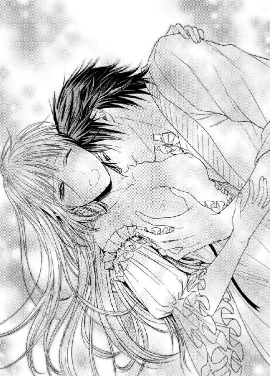
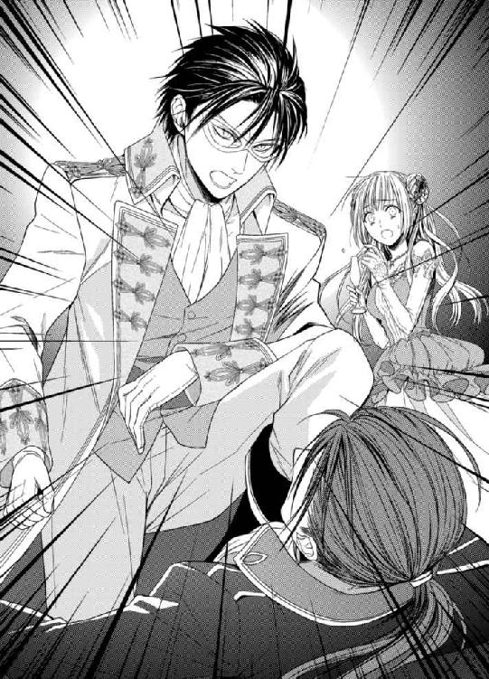

| 黒竜騎士の悩ましき熱愛 (蜜猫文庫) | |
| 上主沙夜 & なま | |
| 竹書房 (2017) | |
この作品は縦書きでレイアウトされています。
また、ご覧になる機種により、表示の差異が認められることがあります。
一部の漢字が簡略字で表示されていることがあります。
イラスト／なま
第一章 罠に落ちた令嬢
（やっぱり帰ろうかしら......）
ラヴェンダーブルーの瞳を憂鬱に曇らせ、広げた扇の陰でリーアンは溜息を洩らした。
クリスタルガラスのシャンデリアが煌々と輝く大広間。楽団が優美な音楽を奏でるなか、盛装した男女が笑いさざめく。いくら見回しても、そのなかに捜している友人の姿はない。
来たくて来たわけではなかった。そもそも麗々しい招待状が送られてきたこと自体がどう考えても厭味である。不名誉な経緯で貴族でなくなったリーアンは、付き合う価値がないどころか今や国賊扱いだ。そんな自分を夜会に招くなど、なぶりものにしようという魂胆が見え見えすぎて呆れる。
暇人どもの見せ物になってやるつもりなど毛頭ない。どうせなら元侯爵令嬢として格調高く断りの返事をしたためてやろうと思案していたところ、厄介になっている親戚宅へ駆け込んできたのが友人のエロディだった。
エロディとは同い年で、社交界デビュー以来親しく付き合っていた。ハシバミ色の大きな瞳に涙を浮かべ、ぜひ一緒に夜会に行ってほしいと彼女は懇願した。以前から気になっていた殿方が来るのだという。王国騎士団の一員である彼は国境警備のため王都から遠く離れた土地へ近々転属してしまうのだそうだ。
自分の気持ちを告白したいが勇気が出ない。側で励ましてほしいと思い詰めた顔で頼まれては断ることなどできようか。
でも着ていく服がないわ、とためらうリーアンに、エロディは自分のドレスや靴、宝飾品一式を貸してくれた。ドレスは流行遅れでくたびれて、靴はかかとがすり減っていた。パリュールが模造品であることは格式高い侯爵家に生まれ、本物の芸術品に囲まれて育ったリーアンには一目瞭然だったが、あえて口にはしなかった。エロディの家がそれほど裕福でないことは知っていたし、今回は彼女の付き添いが目的だ。
ふと目についた壁の鏡で、リーアンはさりげなく身なりを点検した。ほんのりピンクがかった金髪は少し切ってしまったが、以前侍女がしてくれたのをまねしてどうにかそれらしくまとめられたと思う。
（やっぱり借り物って落ち着かないわね）
贅沢は言えないけど......。溜息をついてふたたび友人を捜し始める。会場で落ち合うという約束だったのに、いつまで経ってもエロディは現れない。逆に自分のほうが周囲に気づかれてしまって、ひそひそと囁き交わす客たちの姿や冷たい視線に嫌気が差した。
（ああ、本当にもう帰りたい）
しかし行き違いになっては友人が気の毒だ。なんといっても一生にかかわる事柄なのだし、帰るにしても彼女と一緒のつもりだったから馬車のあてがない。
どうしようかと悩んでいると、目の前に令嬢たちの一団が現れた。先頭にいるのがアルベルティーヌだと気づいてリーアンは厭な気分になった。
彼女の父親はリーアンの父の失脚により大臣職に就いた。今回の夜会の主催者でもある。同時期に社交界デビューしたアルベルティーヌは少し年上のリーアンを一方的にライバル視して、何かにつけて張り合っていた。できれば避けて通りたいがそうもいかない。内心げんなりしつつ、主催者側に敬意を表してリーアンは軽く膝を折った。
「ごきげんよう。今夜はお招きいただきまして......」
「あぁら、何のことかしら？ あなたなんか招ぶわけないじゃない」
顎を反らして嘲笑し、アルベルティーヌは面食らうリーアンを馬鹿にした目つきで眺めた。
「ああ、そういえばエロディには招待状を送ったんだったわ。──残念ね、彼女は都合が悪くて来られないそうよ」
リーアンが顔をこわばらせると、アルベルティーヌは扇の陰で陰険な笑い声を上げた。
「付き添い可、とは書いておいたけど、本人がいないのに付き添いだけのこのこやってくるなんて本末転倒じゃない？ いったいどういう神経をしてるのかしら。父親が父親だけに、娘も厚顔無恥なのね！」
ほほほほほ、とアルベルティーヌが甲高く哄笑し、取り巻きの令嬢たちも声を合わせて笑った。後ろのほうには引き攣った顔や泣き笑いみたいな顔も混じっていたが、なんの慰めにもならない。最前列の令嬢たちが悪意剥き出しで攻撃を始めた。
「見てよ、この時代後れの衣裳！ よく恥ずかしくないわね」
「そんなにしてまで夜会に来たかったのかしら」
「かつての栄華が忘れられないのよ。哀れなものだわ」
取り巻きたちが口々にリーアンを罵倒する様子を眺め、アルベルティーヌは悦に入っている。
（......そういう、こと）
リーアンは掌に爪を食い込ませた。最初から仕組まれていたのだ。落ちぶれた令嬢を公衆の面前に引きずり出し、恥をかかせていたぶろうという残酷な遊び。何よりショックだったのは彼女たちの悪意よりも、友人だと思っていたエロディまでもが企みに加担していたことだ。姿が見えないのは、さすがに罪悪感を覚えたのだろうか。
リーアンは毅然と顎を上げた。ここで取り乱しては相手の思うつぼ。わざわざ楽しませてやる義理などない。
「──それは存じませんでしたわ。では、これで失礼させていただきます。皆様ごきげんよう」
品よく微笑んでくるりと踵を返すと、ムッとしたようにアルベルティーヌが腕を掴んだ。
「せっかく来たんだからゆっくりしていきなさいよ。ビュッフェにお菓子も用意してあるわ。今じゃお菓子なんて滅多に食べられないでしょ。なんなら持って帰ってもいいのよ。お腹を空かせた弟さんが喜ぶわ」
親切ごかしに嫌味を言ってアルベルティーヌは強引にリーアンを引っ張った。
「結構よ！」
「そうだわ。あなたに紹介したい人がいるの。こっちへいらっしゃい」
抗おうにもがっちりと腕を掴まれ、周囲を取り巻きで固められては逃げられない。アルベルティーヌはリーアンを引きずるようにして、シャンパングラスを片手に談笑している一群に近づいていった。
中心にいるのは礼装軍服に身を包んだ長身の青年だ。夜空のごとき濃藍の軍服に金色の飾緒。左の肩口に縫い取られた徽章は翼を広げたドラゴンの上に星が三つ......。
（竜騎士！ しかも三つ星......!?）
ファリエンドラ王国を守る最強の騎士たちによって構成される星竜騎士団のメンバーだ。それも三つ星とくれば間違いなく極少数のトップクラスである。
「ルヴォア侯爵様！」
アルベルティーヌの呼びかけにリーアンはぎょっとした。それは父の名だったからだ。いや、かつてはそうだった。父の不名誉な死によって取り上げられ、別の人間に下賜された爵位......。
（それじゃ、このひとが......！）
新しいルヴォア侯爵。父の爵位と領地を引き継いだ人。弟の将来を奪った人物──。
振り向いた青年はアルベルティーヌに会釈し、こわばった顔のリーアンに気づいて目を瞠った。不意打ちを食らったような表情に当惑していると、アルベルティーヌが得々と喋りだした。
「侯爵様、あたくしのお友達を紹介させてくださいな。こちらはリーアン・ベルティーユ嬢。昔から仲良くさせていただいておりますの」
仲良くしたことなど一度もないくせに、アルベルティーヌは満面の笑みを浮かべて強引にリーアンを押し出した。青年は気もそぞろに頷いて、じっとリーアンを見つめた。不思議な金色の瞳だった。翳りをおびた、金属質の仄昏い輝き......。どこか人間離れしたものを感じさせる。
「──ベルティーユ嬢」
彼は噛みしめるように低く囁いた。その瞬間リーアンは悟った。
（この人は、わたしが誰だか知ってるんだわ！）
貴族は爵位名が通り名になっているから、実際の姓は知られていないことも多い。ベルティーユと名乗っても大抵の人にはピンと来ないだろう。だが、新ルヴォア侯爵なら知っていてもおかしくない。
控えていた給仕の銀盆にグラスを置いて優雅に一礼し、彼はうやうやしくリーアンの手に唇を寄せた。周囲の人間は明らかに面食らっている。
「お初にお目にかかります、ベルティーユ嬢。このたび国王陛下よりルヴォア侯爵位を賜りました、マドローヴァ伯爵ジャスティン・レイランドと申します。どうぞお見知り置きを」
（ジャスティン......？）
礼儀正しく述べて微笑んだ青年を、リーアンは驚いて見返した。その名に聞き覚えがあったのだ。ずっと以前、まだ子どもの頃に会ったことがある。彼の父親──先代マドローヴァ伯爵が健在だった頃......。
（わたしのこと、覚えていてくれた......？）
まさか、ね。爵位を引き継ぐにあたって名前を知った。それだけよ。
改めてジャスティンを眺めると端麗な容姿が急に意識されてどきどきした。一九〇センチ以上ありそうな長身で、騎士らしくすごく姿勢がいい。美丈夫という言葉がぴったりの堂々たる体格の持ち主だ。
艶やかな漆黒の髪は襟足にかかるくらいで、瞳はやや沈んだ色調の金色。年齢は二十代の半ばくらい──そう、二十五歳になるはずだ。
すらりとした鼻筋に、凛として涼やかな目許。やわらかな笑みをたたえた唇はどこか謎めいて官能的で......。
思わず見とれていたリーアンは、ハッと我に返って顔を赤らめた。
「......わたくしをご存じですの？」
「もちろんです」
彼はにこりと微笑んだ。どちらの意味なのかはわからない。昔会ったことがあるのを覚えていてくれたのか、単に先代ルヴォア侯爵の娘だと知っているというだけなのか......。
（どっちだっていいじゃない）
少なくとも先代侯爵の娘であることがわかっているなら同じことだ。リーアンは気を取り直し、まっすぐにジャスティンを見つめた。
「では、新侯爵様にひとつだけお願いがございます」
「なんでしょうか......」
ジャスティンはとまどってかすかに眉根を寄せた。リーアンは懸命に己を奮い立たせた。
「わたくしは父の潔白を信じております。父は名誉を重んじる人でした。その父から爵位を引き継いだからには、父同様、いいえ、父以上に国王陛下に忠義を尽くし、誇り高く生きていただきたく存じます」
凛と声を張り、堂々と言い切る。その言葉でリーアンの素性を完全に理解した人々が顔を見合わせてざわつくなか、ジャスティンだけは真剣な顔でじっとリーアンを見つめて頷いた。
「肝に銘じます」
真摯なその声にホッとしてリーアンは微笑んだ。彼は誠実な人だ。父の爵位を引き継いだのが彼でよかった。弟が後を継げなかったのは残念だけど、これなら諦めもつく。
リーアンは優美にお辞儀をして踵を返した。言いたいことを言って胸のつかえが取れ、実に清々しい気分だ。堂々とここを出て、堂々と歩いて帰ろう。身分が何よ。爵位を取り上げることはできても矜持を取り上げることは誰にもできない。自ら手放してしまわないかぎりは。
「──お待ちください」
後ろから声がして、ジャスティンが大股に追いかけてきた。彼は行く手をふさぐようにリーアンの前に立ちはだかった。
「もうお帰りになるのですか」
「別に用もありませんから。もともと友人の付き添いとして来たんです。勘違いだったようですけど」
「では連れはいらっしゃらないのですね。ならばせめて一曲、私と踊っていただけませんか」
いきなりの申し出に、リーアンはジャスティンを見上げてラヴェンダーブルーの瞳をぱちくりさせた。彼の顔は真剣そのものだ。哀れんでいる......わけではないらしい。
「あの......、わたし早く帰りたいんですけど」
声をひそめて本音を告げると、ジャスティンもまた低声で囁いた。
「実は私もです」
思わず彼を見返し、リーアンは小さく噴き出した。
「......わたしをだしになさるおつもり？」
「というか、助けていただきたい。社交の集まりは苦手なんです。不調法者で」
そうは見えないけど......、と首を傾げたが、ジャスティンが本気なのは確かなようだ。彼は今夜の主賓らしく、逃げ出す口実でも作らないかぎり延々と引き止められてしまうだろう。
「......いいわ。それじゃ、エスコートしてくださる？」
「喜んで」
うやうやしく示された腕を取ってリーアンは引き返した。主賓がかしずいている状態では露骨に嘲ることも無視することもできず、腫れ物に触れるような扱いにリーアンは苦笑した。
「......いいんですの？」
ダンスに誘われ、組んで踊りながらリーアンは囁いた。
「何がですか？」
「あなたと踊りたがってる令嬢たちがわんさといますわよ」
「私はあなたと踊りたい。......あなたは蝶のように軽やかだから、とても楽しいです」
リーアンは少し顔を赤らめた。
「ダンスは好きなの......。けっこう得意......なのよ？」
「ええ。とてもお上手です。私の下手さ加減が目立たずに済んで助かります」
「あら、ご謙遜ね」
くすくすとリーアンは笑った。流行遅れの古びたドレスもすり減った靴も、いつしか気にならなくなっていた。リードが下手だと言うが、全然そんなことはない。罠に嵌められ、恥をかかせられたことなどすっかり忘れてリーアンはダンスを楽しんだ。
いつのまにか注目を集めていたようで、曲が終わると見物していた人たちが拍手をした。主賓のジャスティンに対する敬意というだけではなさそうだ。
目論見が外れたアルベルティーヌは悔しそうにリーアンを睨んでいた。新侯爵のジャスティンに引き合わせてリーアンのプライドをずたずたに引き裂き、さらに彼とダンスを踊る姿を見せつけて徹底的に自尊心を踏みにじる算段だったのに、逆にジャスティンを独占される結果となってしまったのだ。
一曲だけのつもりが是非にと請われてもう一曲踊り、結局彼の馬車で家まで送ってもらった。ジャスティンは最初から最後まで礼儀正しく、まさしく姫君に接する騎士そのものだった。
姫君どころか貴族令嬢ですらなくなった自分が、ファリエンドラの誇る三つ星竜騎士にうやうやしくエスコートされるなんて、いったいなんのご褒美だろう。
リーアンが馬車から降りるのに手を貸したジャスティンは、なかなかその手を離そうとしなかった。リーアンもまたそれを不快とも非礼とも感じず、どきどきと胸を弾ませながら彼に手をゆだねていた。
「──今夜はありがとうございます。助かりました」
「こちらこそ......」
彼の囁きにリーアンは顔を赤らめた。ジャスティンはちょっとためらい、真剣な顔でリーアンを見つめた。
「あの......、また会っていただけませんか」
ドキンと鼓動が高鳴る。思わず『はい』と頷きそうになったが、リーアンはふやけた理性をかろうじてたたき起こし、きっぱりと首を振った。
「それは、おやめになったほうがよろしいかと」
「何故ですか......!?」
素直に衝撃を表す彼にますますどきどきして、赤らむ頬を隠すようにリーアンはうつむいた。
「......わたしと親しくなさっては、侯爵様のおためになりませんもの」
「あなたはお父上の潔白を信じていらっしゃるのでしょう？」
「それとこれとは別問題です。残念ながら、父が逆賊と見做されていることは事実ですから......」
爵位は召し上げられ、領地と財産はすべて没収された。母から相続したわずかな宝石類も、引き取られた遠縁夫婦に養育費の名目で取り上げられてしまった。残されたものといえば、たったひとりの弟と自分自身のプライドだけ......。
唯一の財産ともいえるプライドを必死に掻き立て、リーアンはにっこりした。
「父の後を継いでくださったのがあなたでよかったわ。今夜はどうもありがとう。とても楽しかった......。では、ごきげんよう」
身を翻そうとすると、ぐっと手を掴まれた。指先に唇を押し当てられ、リーアンは真っ赤になって手を振り払った。女性の手にキスするのは上流階級では形式的な挨拶だが、本当にくちづけるわけではない。あくまでそういうしぐさをするだけだ。実際にキスすれば、特別に好意を持っているという表明──求愛もしくは誘惑になる。
リーアンはくるっと背を向け、撥ねつけるように厳しく告げた。
「どうぞお帰りください。もう二度とお会いしません」
間を置いて、決意のこもった声が返ってくる。
「また来ます。諦めませんから」
バタンと馬車の扉が閉まり、車輪の音が遠ざかってゆく。その音が完全に消え失せ、頬の熱が収まるまで、リーアンは街路に背を向けて玄関先に突っ立っていた。
リーアンの生活が一変したのは半年ほど前のことだ。それまでリーアンは由緒ある侯爵家の令嬢として何不自由なく暮らしていた。早くに母を病気で亡くしたのは悲しい出来事だったが、父はリーアンと弟のルネを深く愛してくれた。
女主人のいない屋敷で、可能な限り立派に代役を務めようとリーアンは努力した。物心つく前に母を亡くした弟のためにもしっかりしなければ、と大人らしくふるまう一方、乗馬やダンスなど身体を動かすことが大好きだった。社交界デビューは二十歳を過ぎてからで、上流貴族の令嬢としてはかなり遅めだったものの、まもなく恋人もできて婚約した。
だが、そんな順風満帆の人生は、ある日突然スパイ容疑で父が逮捕されたことですべてがひっくり返った。投獄された父は無実を訴えながら獄死した。自殺だったというが、それで容疑が晴れるどころか逆に有罪の証明と受け取られてしまった。
父が自ら死を選ぶなど信じたくなかったけれど、一度だけ叶えられた面会のときに父は『神竜に祈ってくれ』と繰り返すばかりだった。それほど信仰心の篤い人ではなかったのに、やはり絶望してしまったのだろうか......。
先祖代々受け継いできた爵位も領地も没収され、リーアンと弟は屋敷を追い出された。顧問弁護士が八方手を尽くして探し出した遠縁が、弟が成人するまで面倒をみてくれることになったが、その代わり母の形見の宝石もリーアンのドレスもすべて取り上げられ、お金に替えられてしまった。そしてリーアンはメイド代わりにこき使われる身の上となった。
夜会からしばらく経ったある日のこと。粗末な寝台の端に座ってぶすくれている弟のルネを、リーアンは溜息をついて見下ろした。
「──どうしてそうケンカばかりするの」
むっつりと押し黙ったままルネは答えようとしない。聞かなくても返事はわかっている。
「また、お父様の悪口を言われてカッとなったのね」
ルネは憮然と鼻を鳴らした。頬が腫れているのはふくれっ面のせいばかりではない。
「勝ったんだからいいじゃないか。あいつら、ボコボコにしてやった。ざまーみろだ」
鼻息荒く吐き捨てる弟に、リーアンは額を押さえて嘆息した。
「こんなことが続けば脅しじゃなく本当に奉公に出されちゃうわよ？ 勉強できなくなるし、きっとひどくいじめられるわ。それでもいいの？」
「かまうもんか。勉強なんて意味ないよ。もう貴族の跡継ぎでもなんでもないんだから！」
吐き捨てられ、リーアンは眉を垂れた。
「そんなこと言わないで......。わたし、あなたに狭い考えに囚われてほしくないの。勉強して知識を増やせば、いろいろな観点から物事を判断できるようになるでしょう？ それは決して意味のないことじゃないわ」
「意味なんてあるもんか！ そんなこと、誰も僕に期待してないんだからっ」
ルネは眉を逆立てて怒鳴り、リーアンはハッと息をのんだ。父が健在だった頃、ルネは勉強熱心な子だった。本を読むのが好きで、歴史や地理、古典など、父の蔵書を読みあさっていたものだ。
それが、父の死で一変した。おっとりした優しい子だったのに、些細なことで激情を爆発させるようになった。父の悪口をちょっとでも耳にすると、敵いそうにない相手だろうと無謀に突っかかってゆく。当然、ぶちのめされて嘲笑されることになる。たまには勝つこともあったが、それもあまりに無茶苦茶な暴れ方に相手が呆れて立ち去っただけのことだ。このままではいつか大怪我をするのではないかと気が気でない。
悲しそうに曇る姉の顔を見てルネは一瞬うろたえたが、意固地にぷいっとそっぽを向いた。
「......勉強なんかしたって無駄だよ。それより僕は強くなりたい。学校やめて武芸塾に行く」
「何を言うの！ とてもいい先生にお願いできたのに......」
かつてルネは住み込みの家庭教師から勉強を教わっていたが、それが不可能になった今は町の私塾に通っている。以前の家庭教師の同級生が、自宅に生徒を集めて勉強を教えているのだ。集まるのは、そこそこ裕福だが専任の家庭教師を雇うほどの余裕はない、あるいはそこまでは必要ないと考える人たちの子弟だ。以前の家庭教師から紹介してもらい、渋るマレル夫妻を説き伏せてルネを通わせてもらっている。
学費はリーアンがメイドとして働くことで相殺という取り決めになったが、それもルネが荒れる要因となっているらしい。母を知らずに育ったルネにとってリーアンは母親に等しい存在だ。絶対の庇護者であった父が亡くなり、今度は自分が姉を守らねばならない立場となったにもかかわらず、思うようにできなくて歯がゆくてならないのだろう。逆らってばかりでも、そういう苛立ちはなんとなく伝わってくる。
「......きちんと勉強するなら武芸塾にも通わせてあげる。でも、武芸塾だけというのはだめ」
「僕は父上の敵討ちをするんだ！ そのために強くなりたいのに、何が悪いのさ!?」
「相手が誰だかさえわからないのよ？ どうやって敵を討つの」
「父上は無実だっ」
甲走った叫びを上げる弟の肩を、リーアンは優しく掴んだ。
「ええ、そうよ。でもね、本当の悪人が誰なのかはわかってないの。まずはそれを探り出さなきゃいけないでしょう？ そのためには入念な準備が必要よ。どこに手がかりが転がってるかわからないんだから、勉強しておくに越したことはないわ」
「でも悔しいんだ......！ 父上のこと逆賊だとか売国奴だとか、勝手なことばかり言って」
「言わせておきなさい。わたしたちはお父様を信じて、その潔白を証明することを目指せばいいの。そうでしょう？」
「うん......。でも姉上。僕、やっぱり強くなりたいよ」
ルネは泣きそうな顔で訴えた。侯爵家の嫡男として大事にされていたときには、腕っぷしの強さはほとんど重視されなかった。代々文官の家系だったし、貴族のたしなみとしてある程度剣が使えればそれでよかったのだ。戦いは武官貴族と彼らに率いられた騎士たちの担当だ。
だが、下町の少年たちとぶつかりあううちに、やはり強くなりたいという思いがふくらんだのだろう。頭の良さや親の地位財産ではなく、腕力で優劣が決まる世界である。お坊ちゃん育ちのルネは何よりもそのことに衝撃を受けたのかもしれない。
リーアンは微笑んで、腫れ上がった弟の頬をそっと撫でた。
「いいわ。一カ月ケンカをしなかったら、武芸の先生を探してあげる」
「本当!?」
ルネは目を輝かせた。リーアンは苦笑して頷いた。
「だから挑発に乗っちゃだめよ？」
「うん......。でも、小父さんたちが許してくれるかな。学校に通うのもいい顔しないし、今だって姉上には無理させてるし......」
「無理なんてしてないわ。こう見えてわたし意外とたくましいんだから」
にっこり笑って力瘤を作ってみせるとルネは困ったように眉を垂れた。
「あんまりたくましくなっちゃうと嫁の貰い手がなくなるよ」
「生意気言わないの」
軽く睨んで、ぐいと額を押しやる。ようやくルネは愁眉を開いた。リーアンはエプロンのポケットからハンカチに包んだパンとチーズを取り出した。
「さぁ、これを食べて今日はもう寝なさい」
「姉上の分は......？」
「わたしはもういただいたわ。これだけじゃ足りないだろうけど、がまんしてね」
「僕が悪かったんだ」
しょんぼりする弟に笑いかけ、手にパンを持たせる。
「ほら、食べて。ルネは男の子なんだからしっかり食べなきゃだめよ」
頷いてルネは一口一口噛みしめるようにパンをかじった。弟の金髪をそっと撫でてリーアンは呟いた。
「ルネがいてくれて、本当によかったわ」
弟がいなかったら、自分ひとりで放り出されたとしたら、どうなっていたことか......。きっと絶望して、徒に毎日すり減っていっただろう。弟を守らねばと思えばこそ踏ん張ることもできたのだ。
姉の呟きに、ルネはちょっと顔を赤らめた。
「......ごめんね、姉上」
「いいのよ」
笑ってリーアンは弟を抱きしめた。やっぱり家族っていいものだ。
「ねぇ、姉上。姉上には......好きな人とか、いないの......？」
「何？ 突然」
面食らって目をぱちくりさせると、ルネは照れたように口を尖らせた。
「この前、夜会に行ったでしょ。帰って来たときの姉上、ぼーっとして嬉しそうな顔してたから、何かいいことあったのかな、って......」
「べ、別に......。久しぶりにダンスして楽しかっただけよ」
あれが一種の騙し討ちだったことは、ルネには話していない。そんなことを聞いたらルネは傷つき憤慨するだろう。父の爵位を継いだジャスティンのことも黙っていた。頭ではわかっていても、ルネは自分が継ぐべき爵位を見知らぬ人間に横取りされたように感じている。礼儀正しくて立派な人だったわと言い聞かせたところで、感情的に納得できないはず。かえって反発を強めるかもしれない。いつか折りを見て話そう。
ジャスティンのことを思い出すと、リーアンの胸は妙にざわついた。今ではおぼろになってしまった少年の面影を重ね合わせている自分に気づいて苦笑する。
（不思議な縁よね。彼と、こんなかたちで再会するなんて......）
「姉上、顔が赤いよ」
冷やかすような口調に、リーアンは眉を吊り上げた。
「もうっ、歯を磨いてさっさと寝なさい！ ちゃんと寝ないと大きくなれないわよ」
弟の世話を焼きながらも、堂々とした立ち居振る舞いの美丈夫が鮮やかに脳裏に蘇る。神秘的な金色の瞳でじっと見つめられたことを思い出すと今更ながら苦しいほどに胸がときめいた。
（忘れなきゃ。もう会うこともないんだから......）
父の爵位を引き継いだのが彼だったことに感謝しよう。ジャスティンはリーアンに敬意を表し、願ったことを『肝に銘じます』と真摯に答えてくれた。それで充分だわ......。
弟を寝かしつけ、冷えきった固い寝台で縮こまりながら、リーアンは指先をそっと唇に押し当てた。
指に触れた、あたたかな彼の唇──。
（ばかね。あんなの単なる『事故』よ）
でも......。眠りに就く前のひととき夢みるくらいなら許される、はず......。
彼の優しい微笑を思い浮かべ、リーアンはそっと吐息を洩らした。
数日後、リーアンが玄関前の階段をせっせと磨いていると、背後に馬車が停まった。降りた人が近づいてくる気配を察し、邪魔にならないよう急いで階段から退く。階段を昇りかけた人物が、ハッとしたように足を止めた。
「......何をしてるんですか......!?」
愕然とした声に顔を上げると、ジャスティンが信じられないものでも見るようにリーアンを見下ろしていた。今日も軍服だが、夜会のときの礼装とは違って装飾の少ないシンプルな騎馬用外套に長剣を吊っている。肩口には三つ星と翼竜の徽章が燦然ときらめいていた。
「──っ、侯爵様」
急いで膝を折ると、彼は昇りかけた階段を降りてリーアンの前に立った。長身の彼はそれでもかなり上から見下ろす格好になる。
「ジャスティンと呼んでください」
しかつめらしく、きっぱりと言われてリーアンは首をすくめた。
「では、ジャスティン様......？」
「ジャスティン！」
強い口調で繰り返され、仕方なく呼び捨てにする。
「......ジャスティン。あの、何かご用でしょうか」
「お誘いに来たんです。一緒にオペラ観賞などいかがかと」
リーアンはぽかんとした。
「それは......大変嬉しいお誘いですけど......。ご覧のとおり、わたし、いろいろとすることがあって忙しいのです」
「することとは、掃除のことですか」
「ええ、まぁ、主に......」
「何故あなたがメイドのまねなどしているんです!?」
ますます腹立たしげに問い詰められ、リーアンはたじたじとなった。
「まねではありません。今のわたしはこの家のメイドなんです」
ジャスティンの顔が不穏に引き攣る。いったい何をそんなに怒っているのかしら......？
「どういうことですか!? マレル夫妻はあなたの後見人だと聞いているが」
「正確には弟の後見人です。わたしはもう成人していますから。弟の側にいたいので、こちらでメイドとして雇っていただきましたの」
細かく言えばいろいろと違うのだが、かなり省略してリーアンは説明した。
ジャスティンは荒々しい鼻息をついた。
「あなたがメイド！ 侯爵令嬢のあなたが......」
「今は違います」
ムッとしてリーアンは言い返した。
「わたしはもう貴族ではありません。日々の糧を得るために働かなくてはならない身の上なんです」
わざとつっけんどんにリーアンは吐き捨てた。本音では内心ひどく動揺していたのである。もはや上流階級の人間ではないと納得していても、元侯爵令嬢としてのプライドは残っている。というか、この矜持だけが生きるよすがと言ってもいい。それなのに好ましいと想っていた殿方に落魄した姿を見られてしまった。
この前の夜会のときだって、罠に嵌められたとはいえ流行遅れの見すぼらしい衣裳で、昂然と頭を上げていても本当はいたたまれなかったのだ。
恥ずかしいやら腹が立つやら、いっそ泣きわめきたくなる。それをなんとかこらえようと、リーアンは冷ややかな目つきでジャスティンを睨んだ。
「おわかりになったらどいていただけません？ まだ掃除する場所がたくさん残って──」
いきなり両手を握りしめられ、リーアンは狼狽した。
「いけません！ お手が汚れますっ......」
たわしで階段を磨いていたリーアンの手には泥まじりの水がついたままだ。気にも留めず、ジャスティンは振り払おうとするリーアンの手をさらに強く握りしめ、まじまじと見つめた。
「こんなに荒れて......」
衝撃を受けた羞恥が深まる。夜会のときはレースの手袋をしていたから見られずに済んだのに......。
「は、離してください。わたしのことを令嬢と仰るなら無礼ではありませんか」
ハッとジャスティンは手を離した。
「お許しください」
胸に手を当てて一礼する。リーアンは顔を赤らめながら頷いた。
「──許します。だからもう、お帰りになって。これ以上恥をかかせないでください」
「そうはいきません！ あなたをこのような境遇に放置できるわけないじゃないですか」
「あなたには関係ありませんわ」
「関係ありますとも。あなたは先代ルヴォア侯爵の令嬢だ。爵位を継いだ私からすれば姉妹のようなもの。私があなたを保護するのは筋が通っています」
「筋って......、そんなのそれこそ筋違いですわ！ あなたは父から直接爵位を受け継いだわけではないのですから、そんな義務も義理もありませんっ」
「義務ではなく、私は権利を主張しているんです」
金色の瞳をキラリと光らせ、ジャスティンはふたたびリーアンの手を握った。気押されて声が震えてしまう。
「あ......、あなたにそんな権利は......ないわ......」
「では与えてください。私と結婚していただけませんか？」
「............はぁ？」
リーアンはぽかんとジャスティンを見返した。あまりに驚いて、『結婚』の意味が頭に入ってこない。ケッコン......、ケッコンってなんだったかしら......。どこかで聞いたことがあるような気はするけど。
「リーアン。あなたを愛しています。どうか私の妻になっていただきたい」
妻、と聞いて、ようやく脳内で『ケッコン』が『結婚』に変換された。同時に頭がぐるぐると回りだす。朝からろくに食べていなかったせいもあるだろう。
ルネには内緒だが、私塾に通わせる代金としてマレル夫妻はリーアンの食事を削った。そのわずかな食事さえ残しておいて成長期の弟に与えてしまう。リーアンは空きっ腹をコルセットできつく締め上げ、ウエストが細くなっていいわとうそぶきながら一日中家事労働に励んだ。
そんなギリギリ状態で言い争ったあげく、突拍子もなく求婚されて神経が持つわけがない。衝撃に耐えきれず気力が崩壊し、リーアンはへなへなとその場に崩れ落ちた。
目を覚まして最初に視界に入ったのは天井だった。美しい花綱装飾が施された白い天井──。横に視線を向けると、豪奢な織物のカーテンがかかっているのが見えた。カーテンは美しい襞を作って左右にくくられ、繊細なレースのカーテンが窓を覆っている。
見慣れた光景に、リーアンは安堵の溜息をついた。
ああ、よかった。変な夢を見てたんだわ......。
夢。
夢......？
......夢!?
「────っ!!」
ガバッとリーアンは身を起こした。心臓が胸から飛び出しそうにどきどきしている。何故だかわからないが、ものすごく不安になった。
「......姉上？」
気づかわしげな声に目を向けると、ベッドの脇に置かれた椅子で弟が心配そうにこちらを窺っている。見慣れた服装──大きな襟と折り返し袖のついた上着に白いブリーチズ、バックル付きの黒いエナメル靴という、お坊っちゃま装束だ。
「ルネ......」
リーアンはホッとした。よかった。やっぱりこっちが現実なんだわ。
「わたし、どうしたのかしら......。すごく変な夢を見ていたの。知らない親戚の家でメイドになって玄関の階段をたわしで磨いていたら、ハンサムな三つ星の竜騎士様が現れて、愛しているから妻になってくれって、いきなり求婚してきたのよ」
我ながら何を言っているのか混乱してくる。力なく笑っているとルネが気まずそうに応じた。
「それ、夢じゃないから」
「......ぇ」
まじまじと弟を見返し、ハッと自分の手を眺めた。皮膚は荒れて赤くなり、黒ずんだ爪の周囲がささくれ立っている。ろくに手入れもできないまま、頻繁に水仕事を行なっている手だ。
（夢じゃ、なかった......!?）
だったらどうしてこんなふかふかのベッドで寝ているのだろう。ここはどう見てもかつての自分の寝室だ。着ているのも薔薇色の絹の夜着だし......。
あ、でもデザインが違う。こんな夜着は持ってなかったかも......。
「ル、ルネ。ここ、どこなの!? なんだかわたしの部屋みたいなんだけど......!?」
「だから姉上の部屋だって......」
弟はますます気まずそうに肩をすくめた。リーアンは混乱しきってきょときょとと室内を見回した。記憶にある自室そのものだ。屋敷を出ていくとき、寂しさいっぱいに見回した、あのときのまま......。
「どういうこと......!?」
悲鳴じみた叫びを上げると、いきなりガチャリとドアが開いた。
「どうかしましたか!?」
焦った顔を出したのはジャスティンだった。ジャスティン・レイランド。三つ星の竜騎士にして新ルヴォア侯爵。あれが夢でないとしたら、掃除途中のリーアンを掻き口説き、いきなり求婚してきたのは彼である。だけど、そんな馬鹿なことってある......!?
ジャスティンはベッドに起き上がったリーアンを見てホッとした顔になった。
「よかった。気づかれましたね」
それから我に返って少し顔を赤らめると、改めてドアをコツコツ叩いた。
「入ってもよろしいでしょうか......」
「ぁ......、どうぞ......」
茫然とリーアンは頷いた。ぎくしゃくとベッドに歩み寄り、ジャスティンは一礼した。
「ご気分はいかがですか」
「よく......わかりません......」
正直に答えると彼はすまなそうに眉を垂れた。ルネが横目でじろっとジャスティンを睨む。
「こいつのせいだよ。僕が家に戻ってきたら、玄関前でこいつと姉上が押し問答してて......、いきなり倒れたんだ」
リーアンは赤くなって弟をたしなめた。
「失礼な言い方しないで。この方は、その......新しいルヴォア侯爵なのよ」
ルネは憤然と眉を吊り上げた。
「ルヴォア侯爵は僕の父上だ。こいつじゃないっ」
「やめなさい、ルネ。星竜騎士はファリエンドラの英雄よ。あなたは国を守る騎士に敬意を払うことさえ忘れてしまったの？ 情けないわね」
きつく叱りつけられたルネはみるみる顔を赤くしたかと思うと、椅子を蹴倒して部屋を飛び出していった。リーアンは頭を垂れて謝罪した。
「申し訳ございません。まだ混乱しているようです。どうぞ大目にみてやってください」
「無理もありません」
苦笑してジャスティンは椅子を直し、腰掛けた。リーアンはおずおずと彼を見た。
「ところで......、どうしてわたし、ここにいるのでしょう......？」
「私がお連れしました。お疲れのご様子ですので、ご実家でゆっくり休んでいただこうと」
「実家って......、この屋敷はあなたのものよ？ 今のルヴォア侯爵はあなたです」
少し依怙地な気分になって言い返すと、ジャスティンは苦笑した。
「でしたらとりあえず、私の客人として屋敷に滞在していただく......というわけにはいきませんか？ 覚えていてくださるといいのですが、先ほど私はあなたに求婚しましてね。まだ返事をいただいておりません」
リーアンは顔を赤らめた。
「......覚えては、いますけど......」
「承諾していただけますか？」
「そんな、いきなり仰られても困りますわ......」
「では、考えていただけるでしょうか」
あくまで穏やかに品よく促されては、ぴしゃりと断るのも気が引ける。ジャスティンのことは嫌いではない。というか、寝る前に彼の凛々しい美貌を思い浮かべ、ワルツを踊ったり、ちやほやとお姫様扱いされて甘い愛の言葉を囁かれる妄想にふけって現実逃避していたのだ。それを思い出すと自分がとんでもない変態に思えて顔から火を噴きそうになる。
「す、すみません......！」
反射的に謝ると、彼は絶望の表情でリーアンを見つめた。
「考えてすらいただけないのですか......!?」
「え？ あっ、いえ、違います！ そうじゃなくて、その、いろいろとご迷惑をかけたと思って......」
焦って言い訳すると、ジャスティンはホッと安堵の微笑を浮かべた。
「では、考えていただけますね？」
「はぁ......」
曖昧に返すと、じーっと子犬みたいな目で見つめられ、反射的に力一杯頷いてしまう。
「か、考えさせていただきます」
にっこりとジャスティンは笑顔になった。
「愛しています、リーアン。きっと幸せにしますよ」
爽やかに宣言されて、リーアンの笑顔は逆に引き攣った。
「あの......、どうしてわたしなんですか......？ 一度お会いしただけなのに」
「前にも会っていますよ。あなたは覚えていらっしゃらないでしょうが......」
目を瞠ると、ジャスティンは少し照れたような顔になった。
「もう十年以上前のことです......。私と、私の従兄弟と......、三人で一夏過ごしたことがあるんですよ。ガルドラント高地にある城で......」
「覚えてるわ......！」
思わず叫んで赤くなる。ジャスティンはまじまじとリーアンを見つめた。
「覚えてる......？」
「忘れるわけないわ。あんなに楽しかったことはないもの......」
リーアンが十歳のときのことだ。長いこと会っていなかった従姉妹と偶然再会した母は、地方にある城で一緒に夏を過ごさないかと誘われた。母は少し具合を悪くして医者から転地療養を勧められており、リーアンを連れて招待に応じた。
そこで出会ったのがジャスティンとクロードだ。ふたりともリーアンより三つ年上の十三歳。どちらも黒髪と金色の瞳で、顔立ちもよく似ており、双子かと思ったら実際には従兄弟同士だった。ジャスティンがリーアンの母の従姉妹の息子で、クロードはジャスティンの父方の叔母の息子だった。
三人で外を駆け回って遊んだ。馬に乗ったり、ボートを漕いだり、洞窟を探検したり......。
その頃まだルネは生まれておらず、一人っ子だったリーアンにとってふたりの少年は兄のような存在だった。ふたりもリーアンを妹のように可愛がってくれた。
でも──。
「......クロードは、もういないのね」
ジャスティンは表情を曇らせて頷いた。クロードは同じ年の冬に亡くなったと母から聞いた。肺炎をこじらせたのだという。その後、弟のルネが生まれ、生来あまり丈夫でなかった母は寝たり起きたりの生活になり......、ルネが物心つかないうちに儚くなった。
だからあの夏はリーアンにとって特別な夏だった。なんの憂いもなく、ひたすら無邪気に楽しく過ごせた、最初で最後の夏だったのだ。
「──わたしたち、親戚だったのね」
気を取り直してリーアンは微笑んだ。
「ええ。母親同士が従姉妹......、つまり又従兄妹ということになりますね。お父上が亡くなったとき、侯爵家の顧問弁護士が母方の親戚まで当たってくれればよかったのですが」
「母はだいぶ前に亡くなっているから......、そちらまで思い浮かばなかったんでしょう」
そう言うとジャスティンは悔しそうな顔で頷いた。
「私が気づいたときにはすでにあなたがたはマレル夫妻に引き取られた後でした。成功した商人という話だったし、後見人がついたのなら焦らずとも大丈夫かと......。その頃私は前線にいて、すぐには王都に戻れなかったものですから」
ここ十年近く、ファリエンドラ王国は隣接するハザン帝国と断続的な戦争状態にあった。やっと停戦条約が結ばれたのは三カ月前のことだ。前線から遠く離れた平和な王都にいるとなかなか実感できないが、騎士たちはそれぞれ配下を率い、交代で戦場に出ている。停戦条約が締結されたとはいえ監視のためにかなりの騎士がまだ国境付近に留まっているそうだ。
「王都に戻ったらすぐに会いに行こうと思っていたのですが、召し上げられて宙に浮いていたルヴォア侯爵位が私に与えられることになり......。会うに会えないというか、一気に会いづらくなってしまったんです」
ジャスティンはルヴォア侯爵位を継ぐ予定などなかった頃──リーアンとルネが父を亡くし、貴族の称号を失って路頭に迷うことになったとわかった時点で、すでに救いの手を差し伸べようとしてくれていたのだ。
「叙爵の打診があったとき、最初は断ろうと思ったんです」
ハッと彼の顔を見直すと、ジャスティンは真剣な表情でリーアンを見返した。
「あなたのお父上のことは何かの間違いだと思っています。直接お会いしたのはほんの数回ですが、誠実な方だと感じました。この国を愛し、真心からの忠誠を国王陛下に捧げていらした。侯爵が敵国と通じていたとは思えない」
リーアンは胸が熱くなった。
「ありがとう......。そう言っていただけて嬉しいわ。父を......信じてくれて......」
「必ずや潔白を証明して、侯爵の名誉を回復します。そのために、一時預かりのつもりであえて叙爵を受けました。私が預かっていれば、いつかあなたに......あるいは正当な後継者である弟君にお返しする機会もあろうかと」
まさかそこまで考えてくれていたとは思いも寄らず、リーアンは潤んだ目頭をそっと押さえた。これを知ればルネの腹立ちも収まるはず。
「こうなった以上、できるだけ自然な状況でお会いする機会を作ろうと思ったんです。いきなり訪ねていっても追い返されるのではないかと不安だったし......」
ジャスティンは済まなそうに眉を垂れ、リーアンの手を握りしめた。
「しかしまさかあんなひどい扱いを受けていたとは......。親戚なのだからそれなりに遇してくれるだろうと安心していたが、考えが甘かった」
「気にしないで。あなたのせいじゃないわ」
「夜会で偶然お会いしたとき、なんとなくおかしいなとは思ってたんです。一生懸命階段を磨いている姿を目撃して......、頭を殴られたような衝撃を覚えました。これからは以前同様、いや、それ以上の暮らしを保証しますから安心してください」
ぎゅっと手を握られ、真剣な口調で宣言されてリーアンはひくりと口許を引き攣らせた。
「あ、あの......、できればわたしよりも弟のほうを、よろしくお願いしたいのだけど......」
「もちろん、彼にもこれまでどおりの生活を保証しますよ。その代わり......といってはなんですが、私との結婚を是非前向きに検討していただきたい」
気押されてリーアンは頷いた。
「わ、わかりました。検討します」
「私のこと、嫌いじゃないですよね......？」
「もちろんそんなわけないわ！ 以前、とてもよくしていただいたし......、すごく、楽しい思い出だもの......」
嬉しそうに微笑み、ジャスティンはリーアンの指先に唇を押し当てた。
「......愛しています、リーアン。どうか私を、ただの思い出にしないでください」
秘密を打ち明けるように囁くと、こちらをじっと見つめる彼の瞳がとろりと甘い艶をおびた。普段は真鍮のように硬質な輝きを放つ瞳が変貌するさまを間近で見て、たちまち胸が早鐘を打ち始める。
彼が身を乗り出し、熱い吐息を唇に感じた瞬間──ぐーきゅるるー......と腹が鳴った。
「っっ！」
真っ赤になってベッドの上掛けを引っ掴み、顔に押し当てる。ぷっ、とジャスティンが噴き出した。
「いや、すみません。そうですよね、お腹が減ったでしょう。晩餐の支度を急がせます」
ピンクゴールドの髪を愛しそうに撫で、彼は赤面してぷるぷる震えているリーアンの額にそっとキスした。
「......侍女を寄越しますから着替えをなさってください。私はルネを呼んできましょう」
彼が出て行くと、リーアンはベッドに突っ伏してぽすぽすふとんを叩いた。
（ばかばかっ、お腹のばかーっ！ 何もあんなときに鳴らなくたっていいじゃないのっ......）
羞恥に身悶えしていると、コンコンとドアが鳴った。侍女が来たようだ。これ以上恥の上塗りはしたくない。リーアンは急いで目をぬぐい、ピッと背筋を伸ばして応答したのだった。
その日の夜半過ぎ──。自邸に戻ったジャスティンは書斎でひとりワイングラスを傾けていた。血のように甘く、どこか苦い。領地のワイナリーで採れる気に入りの黒葡萄酒だ。
ルヴォア侯爵邸での晩餐は和やかな雰囲気のうちに進んだ。
（とりあえず、信用はしてもらえたかな......）
今日のところはこれでよしとしよう。思いがけず彼女を手元に確保できたのだから。
断りきれず、やむなく出席した夜会でリーアンと再会したとたん、居ても立ってもいられなくなった。以前から姉弟を侯爵屋敷に連れ戻す算段はしていた。閉め切りになっていた館を整備し、かつて雇われていた召使たちをできるかぎり呼び戻しておいた。いつふたりが戻って来てもいいように......。
とはいえ、いきなり攫うように連れてくるつもりはなかったのだ。夜会ではそこそこ打ち解けられたし、悪印象はかなりぬぐえたのではないかと思う。だからといって突然結婚を申し込んだら面食らうに決まっている。不躾な奴だと嫌われたくはない。
まずは自分の真剣な気持ちを理解してもらうのが先決だ。趣味で年間予約してあるオペラ座のボックス席に誘い、ゆるりとよもやま話などをしながら好みを探り出す。そして彼女が喜びそうな貢ぎ物をするうちにさりげなく自分の気持ちを伝えよう──と、さまざまに策を練っていたのだが。
つぎのあたった粗末な服に古ぼけたエプロンをして、四つん這いになってごしごしと階段をこすっている彼女を目にした瞬間、考えに考え抜いた周到な計画など根こそぎ頭から吹き飛んでいた。そんなまだるっこしいことをしてられるか......！
ジャスティンにとってリーアンは無邪気に過ごせた最後の夏の象徴であり、心の支え......いや、ほとんど女神のごとき崇拝の対象だった。大人になった彼女を目にした瞬間、会えなかった月日の分だけ慕わしさがいや増して、あっというまに幼い初恋は盲愛の域に達していた。
そのリーアンが。風にも当てず、下にも置きたくない愛しいリーアンが......！ こともあろうに素手でたわしを掴んで階段を水洗いしていたのだ......!!
衝撃だった。いくら貴族でなくなったにしても、こんな扱いはあんまりだ。これ以上は一秒だってここに置いておくわけにはいかない。
逆上のあまり、頭を絞りぬいた口説き文句も入念な計画も全部すっ飛ばし、いきなり愛していますと叫んで求婚されたリーアンは卒倒した。
後になってわかったのだが、単に驚いただけでなく、リーアンは重労働でへとへとになっていたうえ、ろくすっぽ食べていなかったのだ。
急いで馬車に乗せようとすると『姉上に何をする!?』とルネが血相を変えて飛びついてきたので、これ幸いと彼も馬車に放り込み、全速力で侯爵屋敷へ直行した。
ルネが事情を呑み込めたのは屋敷に連れていかれ、かつての従者に再会したあたりだろう。あらかじめ従者にはルネの服を用意させておいたのだが、きちんと成長を見越して作らせたようで、身体に合っていてよかった。
（リーアンも綺麗だったな......）
こちらもかつての侍女を呼び戻して用意させたのだが、デザインや色みは確かによく似合っていたもののサイズが少し大きかった。苦しい生活で痩せてしまったようだ。リーアンはそれを気にして恥じていたが、それもまた可愛らしくてグッと来た。
もう絶対に手放せない。何がなんでも彼女に結婚を承諾させる。たとえ弱みにつけ込むことになっても、だ。
（実際、すでにつけ込んでいるわけだが......）
弟思いのリーアンには弟の将来について考えるよう促し、姉思いのルネにも同様の示唆をした。ジャスティンと結婚すれば姉の生活は安泰。さらには少年の無邪気な憧れを利用して、三つ星の竜騎士と義兄弟になるのは悪くないと考えるよう仕向けた。
ジャスティンは自嘲の笑みを浮かべた。
我ながら汚いやり口だ。『考えてください』などと鷹揚ぶって言いながら退路はすべて断っているのだから。侵入を防ぐ手だてはなく、逃げ道もない。後は彼女の心を手に入れるだけ。
さいわい手応えは悪くない。昔のことを彼女は覚えていてくれた。その話が出たとたん、自分に向けられるまなざしははっきりと好意的なものになった。ほんのりと頬を染めてはにかんでいるくらいだから、少なくとも求婚されて悪い気はしていないはず。
「......愛しているよ、リーアン」
うっとりと呟いたジャスティンの口調は、しかしどこか悩ましげだった。金色の瞳が憂愁に昏く沈む。
彼女を愛している。それは嘘ではない。彼女に申し出たことはすべて本気だ。リーアンを愛しているし、彼女の父は何者かに嵌められたに違いないと思っている。ルネの面倒もしっかりみるつもりだ。
だが......、俺は根本に『嘘』を抱えている。あのときから俺の人生はすべてが偽りだ。どれほど強くなっても、どれほど讃えられようと、俺が『嘘つき』であることは変わらない。
だからこそ俺は徹底的に自分を律しなければならないのだ。いつなんどきも、強く、美しく、高潔な騎士であらねばならない。
だからリーアン。きみの愛が欲しい。偽りだらけの人生で、きみだけが真実。きみの笑顔。愛にきらめく瞳。それだけが、身の内に抱え込んだ底なしの闇を照らしてくれる標の星。
闇のさなかでもがき、あがき、のたうつばかりの竜を、優しく照らしてくれる。
『クロードは、もういないのね......？』
寂しそうに呟いた彼女の顔。愛らしい唇がその名を紡いだ瞬間、心臓に刃を突きたてられた心地がした。
「──そうだよ、リーアン。クロードはもういないんだ」
吐き捨てるように呟き、彼はぐっとワインをあおった。喉の奥でくくっと笑い、軋む声音で独りごちる。
「......喜べ、クロード。彼女はおまえのことを覚えていたぞ」
ジャスティンはひび割れた哄笑を上げた。
彼はこの世にいない。どこにもいない。
「......そうさ。俺が殺したんだからな」
片手で顔を覆ってジャスティンは呻いた。彼はもはや永遠に、リーアンに愛を告げることはできない。どれほど想っていようと、決して。
「......俺の、ものだ」
うつろな声でジャスティンは呟いた。金色の瞳に狂おしい光が浮かぶ。
リーアンは俺のものだ。
彼女を手に入れるのは────俺なんだ。
第二章 麗しき竜騎士の熱烈求愛
（......なんだか変な感じ）
読んでいた本から顔を上げ、庭園を見渡しながらリーアンは眉根を寄せた。
なじんだ光景が目の前に広がっている。輝くような緑の芝生。美しく剪定された木々。睡蓮の浮かぶ池......。目を転じれば大きな窓を備えた豪壮な城館が誇らしげにそびえ建つ。
生まれ育った懐かしき我が家──。リーアンは白亜のロトンダに座り、繊細な陶磁器のカップから薫り高いお茶を飲みながらお気に入りの本を広げていた。
ルヴォア侯爵邸は王都に居を構える貴族の城館のなかでも、敷地面積、立地条件、建物や庭園の素晴らしさにおいて抜きん出ている。これを凌駕する城館は王宮だけだ。なにしろ敷地内でピクニックはもとより、ちょっとした狩猟までできてしまうのだ。ふつうの貴族屋敷十軒分はゆうにある。
もちろん、地方へ行けばもっと広大な敷地に大規模なお城を構えている貴族はいる。だが、王都でこれほどの規模を誇る邸宅は他にない。
むろん、これには理由がある。もともと王都はルヴォア侯爵家の領地だったのだ。いろいろな事情があって、そこに王家が引っ越してきた。というか、避難してきた。侯爵家の先祖に招かれてのことである。
当時は王のいる場所が宮廷＝都で、必要に応じて移動していた。やがて不安定だった王権が確立し、王都は固定化した。今では王都の三分の二は王家の所領だが、残る三分の一はルヴォア侯爵家のものだ。他の貴族はどちらかから長期契約で土地を借り、その上に自前で館を建てている。
つまりリーアンは侯爵令嬢であると同時に大地主の娘でもあった。ちなみに土地が分割されることのないよう、不動産はすべて嫡男が継ぐことになっている。
生まれたときからこの館で育ったリーアンにとって、この恵まれた環境はあたりまえのものだった。父を亡くし、貴族の称号を取り上げられて追い出され、それがどれだけ特別だったかということをしみじみ思い知らされた。
だが、落差が激しすぎたのはある意味幸運だったかもしれない。あまりに境遇が激変して、比べることすらできなかった。異世界に放り込まれたか、荒唐無稽な夢でも見ているような感覚で、とにかく適応するのに手一杯だったのだ。
それが、またもや環境ががらりと変わり、元の生活が戻ってきた。温室育ちのわりに適応力に優れていたリーアンは、すでになんでも自分でやることに慣れてしまっていた。着替えも身繕いも、つい自分ひとりでやろうとして侍女のレアを慌てさせた。苦労がしのばれたか、レアは『おいたわしい』と瞳を潤ませすすり泣いた。そして以前よりもさらにかいがいしくリーアンの世話を焼いた。
つつましい生活にすっかりなじんでしまい、果たしてこれが夢なのか現実なのかわからなくなって時折宙に浮いたような気分になる。
今もまさにそんな感覚に襲われて、リーアンは自分の頬をぴしゃりと叩いた。痛い。でも、夢でもちょっとは痛いかもしれない。念には念を入れて、叩いた頬をむぎゅっとつねってみた。
「いったぁ！」
思わず叫んで涙目になる。
「......何をなさっているのですか」
呆れ声に振り向くと、濃藍の騎馬用外套に長剣を下げた騎士姿でジャスティンが佇んでいた。狼狽したリーアンは引き攣る頬を慌てて撫でさすった。
「あらやだ！ ちょっと虫が、顔に止まったものだから......」
「刺されたのですか？」
心配そうな顔でジャスティンが隣に座る。
「い、いえ、大丈夫です」
「見せてください」
真剣な顔で請われ、仕方なく手を離す。
「......赤くなっていますね」
そっと指先で頬を撫でられてリーアンはびくっとした。思いっきり叩いた頬がヒリヒリする。馬鹿みたいと恥ずかしくなり、よけいに顔が赤くなった。
「刺されてはいないようだ」
「は、はい。大丈夫です。......あの、今日はお早いのね」
ジャスティンは現在この館の所有者なのに、決して夜は過ごさない。彼の寝室も用意してあるのだがリーアンが連れてこられてから一度も使われたことはなかった。
大抵、夕方やってきて晩餐を共にし、食後に会話したり本の朗読やカードゲームを楽しむ。ジャスティンには音楽の素養もあって自ら演奏もする。特にヴァイオリンは玄人はだしで、前線にも愛用の楽器を持参していたそうだ。リーアンは彼の奏でる音楽に聞き惚れ、演奏する彼自身の麗姿をうっとりと見つめた。
そうやってしばし団欒の時を過ごすと、ジャスティンは自身の住まいであるマドローヴァ伯爵邸へと帰っていった。伯爵邸は王宮を挟んだ反対側で、かなり距離があるのだが、雨が降ろうと律儀に帰宅する。
理由はリーアンの名誉にかかわるから、だそうだ。ふたりはまだ結婚どころか正式に婚約すらしていない。求婚されて検討中という状況なので、泊まるのは遠慮しているわけだ。
ふだん彼は星竜騎士団の本部で修練や戦術・戦略の研究を行なって一日を過ごしている。星竜騎士団というのは勲爵士団であり、それ自体としては実戦集団ではない。星竜徽章を持った騎士たちはそれぞれ指揮官として王国騎士団の分団を預かっているのだ。
ジャスティンは星竜騎士団の副長であり、同時に自ら率いる複数の騎士分団（まとめてレイランド隊と呼ばれている）の隊長でもある。そちらはふだん副官たち、つまりそれぞれの分団長が訓練を受け持っている。
自らの修練の他、配下から上がってくる報告に目を通したり指示や賞罰を与えたり、平時にあっても上級騎士は忙しい。むしろ平時のほうが書類仕事やら諍いの調停やらで忙しそうだ。戦闘員である騎士は根本的に気性が荒く、地位が下の者ほどその傾向が強い。暇だとケンカが多発するのである。
多忙にもかかわらずジャスティンは面倒がることなく毎日のように侯爵邸に通ってきた。だが今日はまだ午後も早い時間帯だ。何かあったのだろうかとリーアンは不安になった。ジャスティンは安心させるようににっこりした。
「昨日来られなかったものですから、そのぶんまで一緒にいたくて。少し時間が空いたので、急いで抜けてきました」
副官に仕事を押し付けられないうちにね、と悪戯っぽく彼は微笑した。
「大丈夫なの？」
「何かあればすぐに知らせが来ますから」
そっとキスされてびくりと肩をすくめると、ジャスティンは目を細めた。
「綺麗な花には虫が寄ってくる。気をつけなければいけませんね。......私を庭師に任命してはいただけませんか？ 寄ってくる虫を残らず始末して、いつまでもあなたが綺麗に咲き続けられるよう、心を込めてお手入れしてさしあげます」
リーアンは恥ずかしくなってますます身を縮めた。ジャスティンは赤面ものの台詞を衒いもなく甘い口調で囁く。そういうときの彼は金色の瞳が艶めかしい光をおび、身体の芯が疼いてしまう。優雅な言葉づかいにもかかわらず何故だか妙にエロティックな感じがするのは気のせいか、考えすぎか......。
（わたし、いやらしいのかしら......）
頬を染めてうつむいていると、ジャスティンはそっと手を握って唇に押し当てた。
「愛しています、リーアン」
もう何回聞いたかわからない台詞。だが、聞き飽きるどころか、耳にするたびぞくぞくしてあらぬところが痛くなってくる。それが何より恥ずかしい。リーアンの反応を知っていてなぶっているのか、ジャスティンは愛しそうに指先にくちづけながら、神秘的な金色の瞳でじっとリーアンを見つめている。
「......不自由していませんか？」
「不自由なんて......。快適そのものよ」
それはもう、怖いくらいに......。
「ご要望があれば遠慮なく仰ってくださいね。ドレスをもっと作りましょうか」
「いえ、もう充分です！」
「お気に召していただけたならよいのですが......」
「もちろん気に入ってるわ」
リーアンは焦って頷いた。王都きっての最高級モード、『シャンタル夫人の店』ですでに何着もドレスを仕立ててもらったのだ。貴婦人は最低でも日に三回（人によっては六回）着替えるといってもこれ以上はいらない。確かにリーアンは贅沢な環境に育ったが、あるいはそれゆえにか、何に対しても淡白で物質的な欲望というものをさして感じなかった。
母親を早くに亡くしたせいもあるかもしれない。衣裳にもそれほど凝らない。デザインについては品位を損なわないことが第一で、素材や着心地が優先。当主夫人の代理のつもりだったし、未婚の令嬢だとアピールするより落ち着いて見られそうなものを好んだ。
それらはマレル夫妻によって『養育費』として処分されてしまった。新たにジャスティンの計らいで仕立てたドレスは上品ながら適度に流行を取り入れた、おしゃれなものばかりだ。
「あの......、似合っているかしら......？」
おずおず尋ねると、ジャスティンは満面の笑みで頷いた。
「とてもよくお似合いです。まるで朝露に濡れる薔薇の女神のように初々しくも愛らしく、魅惑的だ......」
臆面もなく絶賛されてリーアンは顔を赤らめた。
「ジャスティンはおおげさね」
「いいや、言い足りないくらいです。私のような武骨者には、どれほど言葉を尽くしてもあなたの魅力を完璧に言い表すことなどできません。それが口惜しい」
「ご謙遜を......。ずいぶんもの慣れていらっしゃるわ。これまであまたのご婦人がたを口説いていらしたのでしょう」
心外そうにジャスティンは眉を上げた。
「まさか。求愛したのはあなたが初めてです。心にもない言葉がすらすら出てくるほど口達者だと思いますか？ 私は弁の立つほうではありません。それなのにあなたの側にいると苦しいほど胸がいっぱいになって、掻き口説かずにはいられないのです。正直に言って、自分でも何を喋っているのかよくわからないくらいです」
きっぱり言われ、リーアンは口許を引き攣らせた。ジャスティンはせつなげに溜息をついた。
「リーアン......。どうやったらこの気持ちをあなたに伝えられるのでしょう」
「つ、伝わっていますわ」
「本当ですか？」
不安そうに、ジャスティンはまた子犬のような目つきになってじっとリーアンを見つめる。まったく彼の瞳は変幻自在だ。少年みたいな純真さにきゅんとさせたかと思えば、蠱惑的にとろけて妖しく誘う。まるで瞳に魔法が宿っているみたい......。
「本当よ。あなたがわたしのことを、すごく想ってくれているんだってことは、よくわかっています。本当にわたし......、真剣に考えていますから」
「よかった」
ジャスティンはにっこりした。
「でもあの、もう少しお時間いただいてもよろしくて......？」
「かまいませんよ。結婚するにあたってあなたにも条件があるでしょう。そうだ、ご要望をリストにしてください。どんな難題であろうと必ずや全項目をクリアしてみせます！」
いや、そういうことではないのだけど......。
「わたしと結婚して、本当にご迷惑にならないかしら......？」
「迷惑？」
「その......、たぶん、世間的にはジャスティンがわたしを愛しているからではなく、憐れに思って妻に迎えるのだと思われるんじゃないかと......」
「私はあなたを愛しているんです！」
眉を吊り上げて憤然と断言され、ひぃとリーアンは身を縮めた。
「わかってます！ わたしはわかってますけど、その、弱腰だとか、陰口を叩かれるのではないかと......。ほら、よく言うでしょう？ 庇を貸して母屋を取られる、とかなんとか......」
口ごもるとジャスティンがくっくと笑いだし、リーアンは赤くなった。
「言いたい輩には好きに言わせておけばいいじゃないですか。戦場で弱腰と罵られては捨ておけませんが、愛する人に住まいを与えて何が悪いのです？ なんなら今すぐこの屋敷の名義をあなたに書き換えてもいいんですよ。ああ、そうだ。どうせなら結婚の贈り物として、あなたにさしあげましょう」
「困ります！ わたし、そういうつもりじゃ......」
「遠慮することはない。もともとあなたのものです」
「それを言うならわたしではなくルネですわ」
「では、彼に譲ることにしましょう。成人のお祝い、ということではどうでしょうね？」
「そんな、甘やかさないでください！」
悲鳴のようにリーアンは叫んだ。
「どうして？ そもそも彼が受け継ぐべきものですよ？」
「それはそうだけど......。でも、あの子には過去の遺産にしがみつくより、前を向いて生きてほしいんです。不条理なことなんて世の中にはいくらでもあるもの......。失ったものを嘆いて足踏みするのではなく、自力で新しいものを掴み取ってほしいの」
じっとリーアンを見つめていたジャスティンが、嬉しそうに微笑んだ。
「手強い人だ。ますますあなたを甘やかしたくなる」
「そ、そんな。もうすでに甘やかされすぎて、困ってるくらいなのにっ......」
恥ずかしくなってリーアンは顔をそむけた。ジャスティンは握っていた手をそっと口許に持っていった。
「愛しいリーアン。私はあなたに夢中なんです。どうしたらあなたに愛してもらえるのか......、それが知りたい」
リーアンはうろたえて目を泳がせた。いっそのことわたしも好きですと言ってしまおうかしら。嘘ではないんだもの......。
もしも父が健在だった頃にジャスティンに求婚されたとしたら、即座に承諾していたに違いない。今となれば、かつての婚約者に何故あれほど魅力を感じていたのかさっぱりわからない。彼は父が投獄されるや否や掌を返したように冷たくなり、巻き添えはごめんとばかりにさっさと婚約破棄してしまった。
（人を見る目が全然なかったのね......）
そういう悲しい自覚もまた、ジャスティンの求婚に応じることをためらわせる要因のひとつだ。熱心に掻き口説いても何かあればすぐに掌を返されるのではないか......。
そうしたら今度こそ立ち直れない。だってジャスティンのことは本当に好きなんだもの。
臆病になりすぎているのかもしれない。彼はリーアンの事情をよくわかったうえで求婚しているのだから。
（でも......、やっぱり不安）
自信なげに眉を垂れると、ジャスティンは苦笑してリーアンの手を撫でた。
「そんな顔しないで。ゆっくり考えていいんですよ。後で後悔されても困りますしね。......まぁ、後悔させるつもりはありませんが」
蠱惑的な囁きに、リーアンは赤くなった。ふたたび彼は誘惑者の瞳になっている。くすりと彼は笑った。
「本当にあなたは可愛いな......。この澄んだ菫色の瞳をいつまでも見つめていたい。いや、いっそ溺れてしまいたいくらいだ」
「そのようなこと、ファリエンドラの英雄が仰ってはいけないわ」
「今はあなたに恋するただの男です。──だが、呆れられてもいけないな。できるだけ自重することにしましょう。ああ、そうそう。忘れるところだった。今日はあなたに贈り物があるんです」
「困ります。もうたくさんいただいているのに......」
「今日の贈り物は、特に喜んでいただけると思いますよ」
促され、ジャスティンの腕に手を添えて歩きだす。連れていかれたのは城館の裏手にある厩舎だった。一度は全部売り払われてしまい、リーアンたちが戻ってきてとりあえず新しい馬車と馬が用意されたのだが、なんとなく外出が憚られてまだどこにも出かけていない。
リーアンは厩舎のなかに白い牝馬を見いだして歓声を上げた。
「まぁ！ ブラダマンテ！ おまえなの!?」
白馬は嬉しそうにいななき、差し出されたリーアンの手に鼻面をこすりつけた。十八歳の誕生日に父が贈ってくれた馬だ。リーアンはこの馬に物語に出てくる勇猛な女騎士の名前をつけて可愛がった。屋敷を出るにあたり、良い主に引き取られるよう祈って泣く泣く別れた。リーアンは涙ぐんでジャスティンを振り向いた。
「わざわざ捜し出してくださったの......？」
「奪われたものを返してさしあげただけですよ」
にこっ、とジャスティンは笑った。その笑顔を見たとたん感情が込み上げ、リーアンは彼に抱きついた。
「ありがとう......！」
背中に腕を回してぎゅっと抱きしめると、鍛え上げられた逞しい彼の身体が硬直した。かまわずにさらに力を込め、厚い胸板に頬を押し付ける。
「嬉しい......。わたしのために、こんなにもいろいろとしてくれて......」
ぎくしゃくした動きで彼はリーアンの肩に手を置いた。
「こちらこそ......、喜んでいただけて、嬉しいです......」
カチンコチンに緊張しているのが伝わってきて、なんて純情な人なんだろうと嬉しくなる。
「......あなたが好きよ、ジャスティン」
懐に顔を埋めて囁くと、彼はぴくりと身じろいだ。やがて、肩に置かれていた手が背中に回り、おずおずと抱きしめられた。
「リーアン......」
感極まった熱い囁き。
やっぱり彼が好きだわ。わたしのことをこんなにも大切にしてくれるんだもの。わたしも彼を大切にしたい。
だけど......、結婚することで、本当に彼を大切にできるのかしら......？
答えが出ないまま、リーアンは彼の抱擁に身をゆだねた。
侯爵邸での晩餐を終え、いつものように自邸に帰ったジャスティンを思わぬ客が待っていた。
「よぉ、お帰り。勝手に飲ってるぜ」
書斎の長椅子にだらしなく寝そべり、ワイングラスを掲げたのは騎士団の同僚であるアラン・ペイジだ。テーブルの上にはすでに空いたボトルが数本転がっている。ジャスティンは溜息をついた。
「うちのワイン蔵を空にする気満々だな......」
「ワイナリー持ってんだろー。金持ちなんだからケチケチすんなって」
からからとアランは笑う。さらりと長い金髪にエメラルドのような瞳の美青年だ。少女が夢見る王子様みたいな涼しげな美貌にもかかわらず、彼は歯に衣着せぬ舌鋒と嬉々として敵をなぎ倒してゆく無慈悲な戦いぶりで知られていた。自身の弁によれば『生まれと育ちが最悪なんで』とのことだ。
親もはっきりせず、幼い頃から路上強盗まがいのことをして生き延びた。ひょんなことから平民枠で騎士団に入るとたちまち凄まじいほどの軍功を上げ、ついには三つ星の星竜徽章と子爵位を賜った。
年齢はひとつ上なのだが、寡黙で慇懃なジャスティンと一緒にいれば逆に若く見える。アランのほうが見た目がやわらかく、背もいくらか低くて細身なせいもあるかもしれない。
戦時にはそれぞれの騎士分団を率いるが、平時においてジャスティンは総長からアランのお目付役を申しつかっていた。とにかく彼は優しげな風貌のくせに喧嘩っ早く、三つ星竜騎士ゆえその被害は甚大なのである。
ときに面倒ではあるが、それほど負担には感じていない。容姿も性格も正反対なのに何故か馬が合い、ジャスティンと一緒にいればアランのやんちゃもかなり控えめなもので済んだ。
「──何か用か」
制服の襟をゆるめ、ぶっきらぼうにジャスティンは尋ねた。
「いや、ヒマだから酒飲みに来ただけー」
「だったら酒場に行けよ。うちの酒蔵を荒らすな」
「おまえのワイナリーのが気に入っちゃってさー。それに、酒は静かに飲むべかりけり、って言うだろ。じっくり味わいたい気分なわけよ」
ジャスティンは溜息をつき、残っていたワインをグラスに注いでぐっと飲み干した。
「......何しに来たんだよ」
肘掛け椅子にどかりと座って睨むと、アランはニヤリとした。
「おもしろい噂を聞いたんで、ちと確かめたくなって」
「なんだ」
「星竜騎士きっての堅物が女を囲ってるらしいんだよなー。心当たり、ある？」
ジャスティンはしくりと眉間にしわを寄せたまま黙っている。アランは片方の口端を皮肉っぽく吊り上げた。
「なんでもイカレたように貢いでるらしいぜ？」
「......俺は正気だ」
ぼそりとジャスティンは返した。
「ふむ。どうやらそうらしい。安心した」
ジャスティンは馬鹿にしたように鼻を鳴らした。
「そんなくだらないことをわざわざ確かめに来たのか？ おまえもヒマだな」
「俺としてはお祝いに来たつもりなんだけど。いやぁ、クソまじめな童貞くんにもやっと春が来たかと思うと実に感無量だよ。めでたい！ おめでとう、我が友よ！」
笑顔でグラスを掲げられ、ジャスティンは眉を吊り上げて怒鳴った。
「放っとけ！」
「そりゃ、放っときたいよ。俺としてはさー。たぶん騎士団のみんなもね。レイランド隊の連中なんか、隊長にやっと女ができた！ って感涙にむせんでるくらいだ」
ジャスティンは顔を覆って唸った。連中が酒場で嬉々として乾杯している光景が目に浮かぶ。
したり顔でアランは頷いた。
「やっぱ連れ合いには好きな相手を選ぶべきだよな。そうでないと歯止めにならない。俺ら、何かとやりすぎるから、しっかり守ってもらわないと。あの総長だって、めろめろになった相手を奥さんにもらって、やっと落ち着いたわけだろ？ でなけりゃとっくに喰い殺されてる。......己のなかの闇竜に」
最後は独り言のように呟いたアランに、ジャスティンは昏い瞳を向けた。
「だったらおまえこそさっさと結婚しろ。俺よりよっぽど危ないぞ」
「残念ながら俺は当面、量でカバーかな。みんな可愛くてひとりに絞りきれないんだよなぁ」
アランは指を折って女性の名を上げ始める。全員が玄人か人妻だ。ジャスティンはますます眉間のしわを深くした。
「おまえな......。まがりなりにも三つ星騎士であることを忘れるなよ」
アランは不平そうに口を尖らせた。
「三つ星なんて、単に『強い』ことの証明じゃないか。人品骨柄を保証してるわけじゃない。言ってみりゃ『猛犬注意』の看板みたいなものだろ。つか、むしろ狂犬か」
他人事みたいにアランはカラカラと笑いだし、ジャスティンは溜息をついた。
「だからこそ縛っとく必要があるんじゃないか」
腕組みをして、アランはしかつめらしく頷いた。
「そうだよなー。本当はただの暴れ馬連合なのにな。星竜騎士団なんて仰々しく名乗ったりするから面倒くさいことになるんだよ」
「王命なんだ。仕方ない」
「俺みたいに素性の怪しい野良犬も混じってるってのに。ま、そのせいでいろいろとかかってくるわけよ。政治的な圧力ってやつが」
ジャスティンは眉をひそめた。
「......総長が何か言われてるのか？」
「らしいね。なんせ星竜騎士団は国防の要だ。その副団長が逆賊の娘に入れ揚げてるとなれば、眉をひそめるお歴々も多かろうというもんさ」
チッとジャスティンは舌打ちした。
「なんで俺に直接言ってこない」
「そりゃ、面と向かっては言いづらいだろ。かたちとしては前侯爵の遺児たちが困窮しているのを見るに見かねた新侯爵が、援助の手を差し伸べたっていう美談だからな。善行として称賛に値する。保護するだけなら見て見ぬふりをしてやってもいいが、囲ってるとなれば話は別だ。奴らからすれば逆賊の娘として社交界から冷たく蹴り出したわけだろ。どんなかたちで旦那に仕返しをおねだりされるかわかったもんじゃないと戦々恐々なのさ」
「......ルヴォア侯爵の容疑は冤罪の可能性が高い」
渋い呟きにアランは肩をすくめた。
「容疑をかけられただけで、ほぼ黒と扱われることはわかってるだろ。火のないところに煙は立たないってのがお上品な方々の『常識』じゃないか。そういう奴らがこっそり陰で放火もしてるんだからタチが悪ィよな」
あー、やだやだと、げんなりした顔でアランは首を振った。
「戦場のほうがシンプルですっきりしてて、よっぽどいいわー。やっぱ一番危なそうな国境警備に配置転換願いを出そうかな？ でも田舎に行くと色っぽい美人が少ないんだよなー」
真剣に考え込む同僚を眺めて溜息をつく。星竜騎士の実態なんてこんなものだ。リーアンに知られたら絶対に幻滅される。気を引き締めてかからねば。
「アラン。頼むから騎士団の外では猫かぶっててくれよ......」
「ん？ ああ、わかってるって。人の恋路の邪魔はしないよ」
ふたたびカラカラとアランは笑った。
「──ともかく総長としてはさ、おまえには気に入った相手と結婚してほしいわけ。もちろん俺も全面的に賛成ね」
はーい、とアランはまじめくさった顔で挙手する。
「だけどその前に、おまえがどんだけ本気なのか確かめて来いという総長のお達しで。こうして邪魔したついでに酒もいただいた」
いや、そっちが目当てで来たんだろう!? と突っ込みたくなるのを抑え、しかつめらしい顔でジャスティンは頷いた。
「むろん百パーセント本気だ。リーアン・ベルティーユ嬢にはすでに求婚している」
「あ、やっぱり？ おまえが愛人囲うなんて似合わねぇなと思ったんだ。で、承諾してもらえたのか？」
「考え中だ。前向きに」
前向きに、をつい強調してしまい、アランが疑わしげな顔になる。
「希望的観測？」
「そんなことはない！ ......す、好きだと言ってもらえたし......」
顔を赤らめるジャスティンを、アランは珍獣でも発見したかのようにまじまじと見つめた。
「おまえにそんな顔をさせるってだけで尊敬に値するな......。よし、わかった！ 心置きなく当たって砕けろ」
「誰が砕けるか！ 前向きに検討してくれてると言っただろう!?」
「おっと、そうだったな。まぁ、ともかく応援してるぞ。もしも彼女に会うことがあったら、おまえはいい奴だと褒めちぎってやるから心配するな」
「むしろ黙っててくれないか......」
ジャスティンは額を押さえ、立ち上がったアランを追い払うように手を振った。書斎を出ていきかけたアランは、ふと立ち止まって振り向いた。
「なぁ、そう言えばさ。おまえ、本当に童貞なの？」
「──とっとと帰れ！」
空になったワインボトルを反射的に引っ掴んで怒鳴ると、アランは小気味よさげな笑い声を残して消えた。ジャスティンは顔を覆って深々と溜息をついた。
ジャスティンが愛馬を取り戻してくれたことをきっかけとして、少しずつリーアンは外出するようになった。敷地内でも乗馬は楽しめるが、王都の東を流れる河沿いで思いっきりスピードを出すのが好きだ。早朝、陽光にあたためられて河から朝もやが立ち上る美しい光景を眺めながらゆっくりと歩かせるのもいい。
活動を始めた街中を通って屋敷へ戻っていただく朝食の美味しいこと！ 重労働と寝不足、栄養失調で痩せてしまったリーアンの身体は、みるみる健康を取り戻していった。荒れていたルネもまた落ち着きを取り戻し、以前のように勉学に励み、身体を鍛えている。
相変わらずジャスティンは騎士団本部での仕事を終えた夕方にやってきて、晩餐を共にし、姉弟としばし語らって帰ってゆく。求婚に対する返事を急かされることはないが、さすがにそろそろはっきりさせないといけない気がする。
実際のところ、断る理由はほとんどない。自分でも何をためらっているのかと当惑する。
（ジャスティンに会えるのが楽しみで仕方ないくせに......）
彼に喜んでもらいたくてディナードレスやアクセサリーを念入りに選んで。とてもよくお似合いです、と微笑まれると嬉しくてニコニコと笑み崩れてしまい、少しは気取れば？ とルネに呆れられたくらいだ。
たまに彼が所用で来られないと、がっかりして食欲まで失せてしまう。事前にきちんと知らせが来るから待ちぼうけを食わされることはないし、次に来るときにはお詫びに豪華な花束をくれる。
わずかに小首を傾げてリーアンを見つめるとき、彼の金色の瞳は琥珀のようにとろりと蠱惑的な艶をおびる。そうすると自分が甘い樹液に溺れる小さな虫になったようで、怖いような、うっとりするような、なんとも妖しい気分になるのだった。
「──オペラに行きませんか」
食後、居間に移ってジャスティンと話していたリーアンは、彼の言葉にハタと我に返った。
「は、はぃ......？」
ぼーっと見とれていたことに気づいて赤くなる。ジャスティンは先ほどからリーアンの手をうやうやしく捧げ持ち、指先にそっと唇を押し当てたり、慈しむように撫でていた。リーアンはふわふわした夢見心地になって、うっとり彼を見つめてなんでもかんでも頷いていた。ルネは『見ちゃいられないよ』とばかりにとっくに退出している。
もしもこのときジャスティンが『私と結婚してくれますね？』と言ったら、操り人形のごとく『はい』と頷いてしまったに違いない。しかし、星竜騎士のなかでもとりわけ高潔な騎士と讃えられるジャスティンは、そのような狡猾なまねはしなかった。彼はゆったりと微笑んで繰り返した。
「一緒にオペラを観に行きませんか？ 以前、誘いに伺ったのですが、すっかり取り紛れてしまって」
そう言えばマレル夫妻の家から『救出』されたとき、そんなことを言われた気がする。
「素敵なお誘いだけど......、大勢の人の前に出るのは、どうも気が進まなくて」
かつて友人だと思っていた令嬢たちの企みで夜会に引っ張りだされ、意地悪をされたことが尾を引いているらしい。未だに人前に出ることがためらわれる。しかもジャスティンにエスコートされていたら、彼まで陰口を叩かれるのではないかと心配だ。
「ボックス席を年間予約してあります。誰にも気兼ねすることなくゆっくり観賞できますよ」
そう言ってジャスティンは少し身を乗り出した。
「......たまにはあなたとふたりっきりで出かけたいな」
秘密めかして囁かれ、リーアンは頬を染めた。
「どうしてもいやだと仰るなら諦めますが......」
残念そうな呟きに、リーアンは慌ててかぶりを振った。
「いいえ、決していやなわけでは！」
「......ああ、また私のことを気遣ってくださっているのですね」
「ええ......、まぁ......」
「大丈夫です。あなたに求婚していることはすでに星竜騎士団の総長も承知していますから」
「そうなんですか!? あの、大丈夫......？」
「はい。みな応援してくれるそうです」
にっこりとジャスティンは笑った。ますます引くに引けない。いや、引きたいわけではないけれど......。
（もしもジャスティンと結婚したら、いやでも人前に出なくちゃいけないのよね）
高位騎士の連れ合いとなれば、社交を避けてばかりもいられない。ジャスティンはさほど社交熱心な人ではないからあちこち引っ張り回されることはないとしても、王宮での催しには絶対に出席しなければならない。
（耐えられるかしら......？）
父の潔白を信じていても、周り中から白眼視されて、それでも毅然としていられるだろうか。
（彼と結婚するなら、覚悟しなきゃ）
いい機会かもしれない。竜騎士の配偶者にふさわしく、ジャスティンの側で堂々としていられるかどうか、自分で確かめるのよ。
「──それじゃ、ご一緒させていただきますわ」
「よかった......！ 楽しみです」
彼はリーアンの指先にくちづけてにっこり笑った。甘いまなざしにどきどきしすぎて、返す笑顔が引き攣りぎみになってしまった。
数日後、新しくしつらえた馬車に乗ってリーアンはジャスティンとともに劇場へ向かった。黒塗りの箱馬車には侯爵家の紋章が両方の扉に大きく描かれている。紋章付きの馬車は上級貴族の特権であり、義務でもある。原則として外出の際には紋章付きの馬車に乗らなければならず、そうでないと外出先でトラブルに巻き込まれても貴族特権を受けられないのだ。
元々伯爵であるジャスティンもこの義務を負ってはいた。しかし軍人である彼はふだん竜騎士の徽章着用義務のほうを優先しており、馬車は持っているもののあまり乗らない。どうしても必要なときは元々の爵位であるマドローヴァ伯爵の紋章つき馬車を使う。
だが今夜は上位称号である侯爵家の紋章馬車を出させた。たぶんリーアンに敬意を示してのことだろう。彼は本気で侯爵位を『預かって』いるだけのつもりらしい。嬉しいけれど、申し訳ないような気もする。
濃藍と金の凛々しい軍装で、上品なドレスに身を包んだリーアンをエスコートするジャスティンの姿は否が応にも目立った。誰をエスコートしても目立ったことだろうが、曰く付きの元令嬢となれば悪い意味でもさらに目立つ。
ジャスティンは社交的な集まりには滅多に顔を出さない。招待状は山ほど送られてくるし、いちおう目は通すものの、ほとんど断ってしまう。
件の夜会以来、ジャスティンはどの貴族の招きにも応じていなかった。三つ星竜騎士にして裕福な独身貴族である彼を狙う女性は数知れない。ジャスティンが音楽鑑賞を好むことはよく知られていて、夜会がだめならオペラ座で捕まえようと、未婚の令嬢はもとより未亡人や高級娼婦までもが手ぐすね引いて待ち受けていた。
ところが久しぶりに人前に姿を現したジャスティンは女性連れだった。ひそかに囲っていると噂される元侯爵令嬢を、堂々と人前に連れ出したのだ。それは彼女を日陰者扱いする気はないという決意の表明であり、特別に『親しく』していることを公衆にアピールするものだった。
ジャスティンは顔見知りとそつなく挨拶を交わすと、リーアンを連れてさっさと個室に入ってしまった。入り口には『誰も入れるな』と厳命された従僕がいかつい顔で控えている。これは今日に限ったことではなく、誰に頼まれようがジャスティンは自分のボックス席には絶対に他人を入れないのだ。以前、夫人と令嬢を連れた高位貴族が無理やり押し入ってきたときなど、彼らに席を譲って自分は帰ってしまった。
彼が押さえてある席は、舞台正面の二階で、いちばん見やすい位置にある。席のランクとしては舞台両袖の二階と三階のほうが上だが、舞台を観賞するには不向きである。そこは舞台ではなく桟敷の観客を眺めたり、桟敷から観賞されるための場所なのだ。ジャスティンの目的は純粋に演目を楽しむためだから、選ぶのは当然舞台をいちばん見やすい席である。
この席を見ようとすると平土間にいる客は首を思いっきり後ろにねじ向けなければならない。舞台袖の個室からはよく見えるだろうし、実際じろじろ見られているようだったが、いくらか引っ込んだ位置に席がしつらえられ、両脇にカーテンもあるので、さほど気にならなかった。
やがてシャンパンやカナッペが運ばれてきた。室内に置かれた椅子は高い背もたれのついた長椅子で、大人が四人ゆったりと座れるくらいのサイズがある。リーアンはそこにジャスティンと並んで座り、時折小声で会話を交わしながら心置きなくオペラを楽しんだ。
主演のソプラノ歌手は近頃売り出し中の若手で、張りと艶のある素晴らしい美声の持ち主だった。声だけでなく顔立ちも美しく魅力的だ。じっと彼女を見つめながら聴き入っているジャスティンに気づくと何やら嫉妬めいた感情が沸き上がってきて、リーアンはひとり赤くなった。
帰りの馬車のなかでも、ジャスティンは何事か考え込んでいるように寡黙だった。話しかけて万が一不機嫌そうに返されたりしたらいやだから、ずっと黙っていた。
侯爵邸へ戻ると夜食が用意されていた。遅くなったのでルネはもう寝ている。食事を終えて居間へ移ると、ジャスティンが気づかわしげに尋ねた。
「さっきからずいぶん無口ですね。演目はお気に召しませんでしたか」
反射的に『あなたが黙りこくってたんじゃないの』と言い返しそうになって、リーアンはハッと唇を押さえた。いつのまにかジャスティンに大切にされ、甘やかされ、つねに注目を浴びて最優先に扱われることが当然と感じてしまっていた。
恥ずかしくなってリーアンはうつむいた。
「......そんなことありません。おもしろかったし、オペラを観るのは久しぶりだから、とても楽しかったわ」
「そのわりに顔色が冴えませんね」
彼の口調は穏やかで責める気配は微塵もない。リーアンはますます申し訳ない気分になった。
「ごめんなさい。わたし、今すごく厭な女になってるの」
ジャスティンは目をぱちくりさせたかと思うと、急にしょんぼりと眉を垂れた。
「何か気に障るようなことをしてしまったのでしょうか......」
「悪いのはわたしよ。わたし......、勝手に不機嫌になっていたの。あなたがわたし以外の女を熱心に見ていたから」
「それは聞き捨てなりませんね。私が誰を見ていたというのです？」
ジャスティンは真剣な顔になって膝を乗り出した。リーアンはうろたえて顔をそむけた。
「別に、誰というわけでは......」
「あなた以外の女性に目を留めたことなどありませんよ」
生真面目に言われてリーアンはカッとなった。
「うそ！ あのひとのこと、じーっと見てたじゃない」
「......誰のことです？」
本当にわからない様子でジャスティンは眉間にしわを寄せる。
「決まってるでしょ、あの歌姫よ」
ジャスティンはぽかんとリーアンを見返したかと思うと、こらえきれないように噴き出した。
「それは......、確かに聴き惚れてはいましたがね」
くっくっ、とさもおかしそうに笑われてリーアンは眉を吊り上げた。
「聴き惚れてただけじゃないわ！ うっとり見つめていたじゃないの」
「妬いてくださっているのですか？」
「べ、別に妬いてるわけじゃないわ。わたしに夢中だなんて言いながら他の女性を見ているから呆れただけよ」
精一杯の虚勢を張ってツンと顎を反らす。ジャスティンは愛しげに目を細め、リーアンの手を取った。
「嬉しいな......。もっと妬いてください」
「だ、だから妬いてなんか......っ」
「......確かに、あの歌姫は私にとって特別な存在と言っていいでしょう」
揶揄うような笑みを含んだ囁きに、リーアンはびくっと視線を上げた。神秘的な金色の瞳からは真意が読み取れず、泣きそうになる。
「そう......、彼女の声は美しく、容姿も優れている。舞台は見応えがある。できるかぎり後援したいと思うし、舞台を見に行くことが楽しみでなりません」
ジャスティンの唇が自分以外の女性を賛美する言葉を紡いだだけで、リーアンは内面にメラメラと嫉妬の炎が燃え上がるのを感じて身震いした。
ジャスティンはくすりと吐息で笑い、上体をかがめてリーアンの耳元で囁いた。
「でもね......。あなたはすべてを超越した至高の存在なんです。誰にも替えられず、誰とも比べられない。もしもあなたが望むなら、二度と彼女の舞台は観に行かないと誓いますよ」
「わ、わたし、そんなこと言わないわ......」
リーアンは瞳を潤ませ、すがるようにジャスティンを見つめた。
「ごめんなさい！ わたし、やきもちを焼いてたの。だって、あのひと素晴らしい声をしていて、しかも美人なんだもの......」
「あなたの声は可愛いし、綺麗ですよ？」
ジャスティンは微笑んでそっと唇を重ねた。思わず目を瞠り、かーっと赤くなる。
「愛しています、リーアン。あなたは私にとって唯一無二のひと。欲しいのはあなただけだ。......私と結婚してください」
なんだかもう矢も楯もたまらなくなってリーアンは頷いた。
「は、はい......っ」
「......本当に？」
「ほ、本当です。わたし......あなたと結婚します......っ」
ジャスティンの端整な顔にさざなみのように喜色が広がった。
広い懐にぎゅっと抱きしめられる。
「本当に、私の妻になってくださるんですね？」
「はい......、なります......」
すっかり頭がぼーっとして、リーアンは夢みるようにうっとり答えた。ジャスティンはしみじみと嬉しそうな吐息を洩らし、抱きしめたリーアンの背中を優しく撫でた。
しばらくそうして抱き合い、やがて彼は名残惜しそうに身体を離した。
「明日、さっそく総長に婚約を報告します」
かまいませんね？ と確認され、リーアンは顔を赤らめながら頷いた。
「了承をいただいたら、総長ご夫妻を招いて晩餐会を開きましょう」
彼は跪いてうやうやしくリーアンの手にキスした。
「いつまでもあなたと寄り添っていたいが、遅くなりましたのでそろそろお暇いたします」
「あ、あの、泊まっていかれてはいかがですか？ もう夜中すぎていますし、婚約も......したわけですから......」
気恥ずかしさに口ごもると、ジャスティンはせつなげに眉根を寄せて苦笑した。
「少なくとも、総長に報告するまでは自重しておきましょう」
「そ、そうですわね」
はしたないことを口走ってしまったと恥じ入るリーアンを見つめ、ジャスティンはふたたび隣に腰を下ろした。
「......この屋敷に泊まらない、本当の理由を教えてあげましょうか？」
「え？ ええ......」
何か気に入らない点でもあるのかと危ぶみながらリーアンは彼を見返した。金色の瞳がやけに艶めいて見えてどきっとする。彼は耳に唇を寄せて囁いた。
「可愛いリーアン。あなたの側にいると、触れずにはいられなくなるからですよ」
甘やかな吐息が耳朶をかすめ、ぞくっとリーアンは震えた。ジャスティンの手が腰に回され、わずかに引き寄せられる。決して強引ではないのに、それだけで動けなくなって奇妙な戦慄が身体の中心を駆け抜けた。あらぬ場所が刺すように痛くなり、リーアンは狼狽した。
（や......っ、何これ......!?）
ジャスティンの唇が甘く耳たぶを食む。
「ひっ......!?」
下腹部にズキンと疼痛が走り、リーアンは焦って内腿に力を込めた。
「......綺麗なうなじだ。薔薇色に染まって、かぐわしく匂い立つかのよう......。まったく、目の毒としか言いようがない」
囁いてジャスティンは舌先でちろりとリーアンの首筋を舐めた。全身がカーッと熱くなり、縮こまってぷるぷる震えていると、くすりとジャスティンが笑みを洩らした。
「......わかりましたか？ ひとつ屋根の下にいたら、すごく危険だってこと」
こくこくとリーアンは頷いた。彼以上に、誘惑に抗えない自分のほうが危険な気もするが......。
ジャスティンはリーアンの背中を撫でながら囁いた。
「少年の頃......、あなたに恋心を抱いた時点で、私の心には強固な鋳型が造られてしまったのかもしれませんね。だとしたら、あなた以上に嵌まる存在などありえない。やはりあなたは唯一無二のひとだ」
甘い低音の囁きが首筋の皮膚を愛撫する。実際に触れられる以上にぞくぞくして、リーアンは吐息を乱した。下腹部が淫らに疼き、はしたない熱がじゅくりと広がる。陶然と瞳を潤ませて息を乱すリーアンを、ジャスティンは愛おしげに覗き込んだ。
「愛しています、リーアン。早くあなたを妻にして、慎ましやかな花を思う存分散らしたい」
羞恥で燃えるように頬が熱くなる。ジャスティンの口にした比喩がはっきり理解できたわけではないが、夫婦の秘め事にかかわるものであろうことは本能的に感じ取れた。
「いけません！ そのように、ふ、不埒なことを口になさっては......」
かろうじて理性をかき集めてたしなめたが、とろんと瞳を潤ませ、顔を赤らめていてはたいした効果は望めそうにない。それでもジャスティンは腰から手を離して一礼した。
「ご無礼をお許しください。あなたがあまりに愛らしくて、つい揶揄いたくなってしまった」
赤くなってリーアンは顔をうつむけた。局部が何故かひくひくして恥ずかしくてたまらない。甘い言葉を囁かれただけで過敏に反応してしまった自分に困惑する。
（どうしてこんなところが疼いたりするの......）
恥じ入ってうなだれたリーアンの頤をそっと持ち上げ、ジャスティンはなだめるように優しくくちづけた。
「可愛いリーアン。どうか怒らないでくださいね」
「お、怒ってません......。その、なんだか恥ずかしくて......」
「恥ずかしがることなどありません。私を愛しているなら、ね」
「もちろん、愛してるわ」
焦って身を乗り出すと、そっと唇に指先をあてられた。
「しっ......。それ以上可愛いことを言われると、さすがに理性を保てる自信がない」
顔を赤らめるリーアンを甘い艶をおびた瞳で見つめ、額に唇を押し当てて彼は囁いた。
「おやすみなさい、愛しいリーアン」
「......おやすみなさい」
ジャスティンが優雅に一礼して出ていった後も、リーアンは顔を赤くしてどきどきする胸を押さえていた。いつもならとっくに就寝している時間なのに、眠くなるどころか目が冴えてしかたがなかった。
第三章 甘い初夜に溺れて
翌日、いつもどおり晩餐に訪れたジャスティンは婚約の報告が上首尾に行ったことを嬉しそうに告げた。反対されるのではと危ぶんでいたリーアンはホッとした。星竜騎士団の総長が承認してくれたのならひとまず安心だ。
数日後、総長夫妻を招いて晩餐会を開いた。短い灰銀色の髪をした総長のレジナルド卿は三十歳くらい。ジャスティンを上回る巨躯の持ち主で、苦み走った端整な顔立ちをしている。鋭利な双眸だが笑顔は優しい。
夫人のほうは驚いたことにリーアンより四つも年下の十八歳で、ふんわりとやわらかな印象の美少女だった。年は離れていても夫婦仲は非常によいことが会話のなかから自然と伝わってくる。総長は妻が可愛くて仕方ないようだ。実際、彼は愛妻家としてつとに知られているらしい。
ふたりはリーアンとジャスティンの婚約を心から祝ってくれた。無邪気さの残る夫人は、ぜひうちへ遊びにいらしてねと熱心に誘ってくれた。
多少押し切られた感がないでもないが、ジャスティンのことが好きだと自覚して結婚を決めたのだ。祝福し、味方してくれるひとがいることが素直に嬉しい。
当然、全員が祝福してくれるわけではない。むしろ眉をひそめる向きのほうが優勢だ。しかしジャスティンは貴族社会より騎士団のほうに強い帰属意識を持っているため、そちらに受け入れられたことが嬉しかった。星竜騎士団の本部に案内され、紹介されたジャスティンの同僚たちは、みなふたりの結婚を喜んでくれた。
仲間の騎士たちからジャスティンのことをもっといろいろ聞きたかったのに、そういうことは結婚してからでいいでしょうとぶっきらぼうに言われて連れ出されてしまって残念だ。照れくさいのだろうと思えば可愛くて、ますます彼が好きになってしまう。
いずれはマドローヴァ伯爵邸に移ることになるが、弟が成人するまでは側で見守りたい。リーアンの希望を汲んで、当分のあいだは侯爵屋敷での暮らしを続けることとなった。
ジャスティンは自邸の使用人を少し減らし、生活の本拠を侯爵邸に移した。騎士団本部から遠くなるのは申し訳ないが、やはり広い屋敷に弟をひとり残していくのは気が進まない。かといって弟を連れて伯爵邸に引っ越すのもためらわれた。ルネにはいつか父の潔白を証明し、爵位を取り戻してほしい。ジャスティンもそのために尽力すると言ってくれている。もはや父が戻ってくることは永遠にないけれど、この家に住み続けて美しく維持したい。一度は失ったものだからこそ、今まで以上に大切にしたいという気持ちが強まった。
式を挙げる前にふたりで墓参して亡き両親へ報告した。生きていれば父も母もジャスティンとの結婚を喜んでくれたことと思う。
結婚式は星竜騎士団本部の付属神殿で行なわれた。執り行ってくれたのは神官の資格を持つ神殿騎士団所属の騎士だ。ふつう、神殿騎士といえば軍人というより学究の徒なのだが、彼は一つ星の竜騎士でもあり、星竜騎士の冠婚葬祭を一手に引き受けていた。
王都に居合わせた竜騎士の全員が立会人として参列してくれた。式の後は和気藹々とした祝宴となった。リーアンの身内の出席者は弟のルネだけだったが（もともと身内と呼べる親戚は例のマレル夫妻くらいしかいない）、竜騎士とその奥方たち、ジャスティン率いるレイランド隊の騎士たちが祝福してくれたおかげで寂しさは微塵も感じなかった。
（そういえば、ジャスティンも血のつながった家族がほとんどいないんだわ）
ふとリーアンは気づいた。彼の両親も兄もすでに他界している。ずいぶん前に隠居した祖父──先々代のマドローヴァ伯爵は健在だが、遠く離れた領地に居り、痛風の痛みがひどいので症状が落ち着くまでは外出できないと欠席の連絡が来た。
（ジャスティンと、あたたかな家庭が作りたい......）
屋敷へ戻る馬車のなかで、リーアンは彼の肩にそっともたれた。ルネがこくりこくりと舟をこぎだしたので、宴の途中で抜けてきたのだ。ジャスティンは微笑んでリーアンにキスした。
「疲れましたか？」
「ううん、ホッとしたの」
囁くとジャスティンは目を細め、ふたたび唇を重ねた。眠っているとはいえ、すぐ側に弟がいる。遠慮がちに、くすぐったい気持ちでくちづけを交わしているうちに屋敷に着いた。
ルネはすっかり寝入っていたのでジャスティンが寝室まで運び、後の面倒は従者に任せて夫婦の居室へ引き上げた。
湯浴みと身繕いを済ませ、侍女を下がらせてどきどきしながら寝室へ入っていくと、ジャスティンはすでにくつろいだ格好でベッドに入り、重ねたクッションに寄り掛かって小さな判型の本を片手で広げていた。彼はリーアンを見ると本をサイドテーブルに置き、上掛けをめくった。おずおずとベッドに上がり、彼の隣に座る。くすりとジャスティンが笑った。
「緊張してます？」
「え、ええ......」
頬を染めながら正直に頷くと、ジャスティンは目を細めてリーアンの肩を抱いた。
「私もです」
全然そうは見えないけど......と当惑したが、唇をふさがれて甘く吸われれば、たちまち心拍数が急上昇して、何も考えられなくなった。
「ん......」
軽く吸っては離しを繰り返されると身体の芯がぞくぞくして、甘えるような鼻息が洩れてしまう。羞恥に顔を赤らめると、薄い夜着の上から愛おしげにリーアンの身体を撫でながらジャスティンは熱っぽく囁いた。
「このときを、ずっと待っていました......」
襟元のリボンが、するりと解かれる。首筋に唇を這わせながらジャスティンの手が夜着の裾から入り込んできて、リーアンはびくりと身をすくめた。
（く、くすぐったい......）
ぎゅっと目をつぶり、ぷるぷる震えていると、ジャスティンはちょっと苦笑した。
「そんなに怖がらないで」
「怖がってるわけじゃ......。その、くすぐったくて......」
「気持ちよくありませんか？」
「......よくわからないわ」
正直に答える。機嫌を損なうかしらと不安になったが、彼は優しくリーアンの額にキスした。
「私に触れられるのはいやですか......？」
「そんなことないわ！」
彼がやめてしまうのではないかと不安になって、リーアンは急いで言った。ご多分に洩れず、リーアンも深窓の令嬢なので夫婦の営みごとについては漠然とした知識しかなかった。母親は亡くなっていて訊くこともできないが、侍女や家政婦からある程度のことは教わっている。
（子どもを作るための『儀式』が必要なのよね）
家政婦には、何事も旦那様におまかせして逆らわないように、と諭された。そんなこと言ったって、もしもそれが厭だったら厭だと正直に言いたいわ、とむくれていると、侍女のレアがひそっと耳打ちしてくれた。
『大丈夫です、お嬢様。好きな殿方との『儀式』は、とっても気持ちいいらしいですよ』
『本当？』
『はい。兄嫁がしきりにそう惚気ておりました』
生真面目に頷いた侍女の顔をリーアンは思い出した。
（もしかして、この『くすぐったい』のが『気持ちいい』ってことなのかしら......）
そう考えてみれば確かにふざけてくすぐられたときの感覚とは違う気がする。身体を撫でられながらキスを交わすうちにリーアンは次第にうっとりした気分になってきた。
肌の感触を愉しむようにゆっくりと動いていた手が胸のふくらみに触れ、思わず目を見開く。確かめるようにふにふにと乳房を揉まれてリーアンは赤くなった。
（厭じゃないけど......、は、恥ずかしい......）
少し固い彼の手の感触は心地よく、やめてほしいとは思わない。それどころかもっと触れてほしいとせつない願望が沸き起こった。指先で乳輪をそっと摘まれ、くりくりと左右に紙縒るように刺激されて乳首がきゅっと固くなるのを感じ、頬が熱くなる。
無意識にもじもじと腿を擦り合わせていると、ジャスティンは背中からリーアンを抱き寄せて大胆に夜着を捲り上げた。
「ひゃ......!?」
胸が剥き出しになって焦る。感覚のとおり、乳房の突端はすっかり尖って、ぷっくりと勃ち上がっていた。赤くなってリーアンはふるふる震えた。ジャスティンはくすりと笑い、耳のすぐ下にチュッと音を立ててくちづけた。
「可愛いですよ、リーアン」
「んぅ......ッ」
誘惑の囁き声にぞくぞくして顎が上がる。すると待っていたとばかりに顎の下のやわらかな部分をねっとりと舌でなぶられた。
「ひッ......!?」
ぞくんっ、と一際強い衝動が背骨を駆け上がり、リーアンは涙目になって喘いだ。
「......敏感ですね」
そうなのだろうか。自分ではよくわからない、というかだいぶわけがわからなくなってきた。
潤んだ目許にキスをして、ジャスティンは片手でやわやわと乳房を揉みしだきながらもう片方の手で円を描くように優しく下腹部を撫で始めた。ぺったりと寝台に座り込んでいた膝を立てさせ、腿の内側をゆっくりと上下にさすられて、リーアンはびくびく震えた。

「や......」
（なんか、変......）
身体の中心が針で刺されたようにちくちく痛む。以前ジャスティンに甘く掻き口説かれながらキスされたときみたいに秘処がじゅわりと潤んでくる感覚に襲われてリーアンはうろたえた。
（や、やだ......。おもらししたみたい......っ）
とても口には出せず赤面していると、まさにその部分へジャスティンの指が滑り込んできてリーアンは動転した。
「やっ......!? だめっ......」
茂みの奥の小さな肉粒を指先で転がされ、焦ったリーアンはジャスティンの手首を掴んだ。
「だめ、そこは。汚いわ」
「汚くなんてありませんよ。お風呂にも入ったことですし」
なだめるようにチュッと目許にキスされる。
「で、でも......、用をたす......ところだし......」
「子を産む場所でもありますよ」
「あ......。そ、そうね......」
「私の子を産んでくださいますよね......？」
「もちろんよ」
リーアンは振り向き、彼を見上げて頷いた。ジャスティンは騎士であると同時に上流貴族の当主でもある。結婚したら、まずは跡継ぎを儲けなければならない。
「わたし......、あなたによく似た凛々しい男の子が欲しいわ」
ポッと頬を染めて囁くと、ジャスティンは嬉しそうに目を細めた。
「私はあなたのような可愛い女の子が欲しいな」
「がんばるわ、わたし」
生真面目に頷くと、ジャスティンは頬をすり寄せてくすくす笑った。
「ではまず種付けをしないと。......しっかりと、たっぷりと......、ね」
淫靡な囁きに真っ赤になる。
（そんな、馬みたいなこと言われても......っ）
ふざけたことを口にしながら彼の愛撫は慎重で、恐ろしいくらいに優しい。花芽をまさぐりながら何度もキスされた。舌が入り込んできたときにはびっくりしたが、おずおずと応えるうちに気持ちよさに恍惚となった。
くちゅりと彼の指が濡れた音を響かせ、リーアンは赤くなった。
「ご、ごめんなさい」
「どうして謝るんです？」
「だって......」
「......ああ。粗相したと思ってるんですか」
恥ずかしくなって肩をすぼめる。ジャスティンはゆるゆると秘裂を掻き回しながら囁いた。
「大丈夫ですよ。自然な反応です。もっともっと濡れていい。でないと、私のものを受け入れるのはつらいでしょうから......」
ぐっと腰を押し付けられて身をすくめる。さっきから何か固いものがお尻に当たってるな、とは思っていたけど......。
（だんだん大きくなってる......？）
やっと察しがついてリーアンは赤面した。ジャスティンのこれを自分のここに挿入する。それが『儀式』なのだ。
無意識に緊張で身体をこわばらせると、ジャスティンがあやすように頬にキスした。
「心配しないで。入れる前にちゃんとほぐしますから」
力を抜いて、と優しく囁かれる。彼の言葉に従おうと努めたが、なにぶん初めてのことゆえ、かえってガチガチに緊張してしまった。ジャスティンは何度もリーアンにキスしながら愛の言葉を囁き、少しずつ未熟な襞をほぐしていった。
気がつけば彼の指を根元まで呑み込んで、くちゅくちゅ前後されていた。自分のこぼした蜜で彼の指がぬらぬらと濡れているのがすごく恥ずかしい。ジャスティンは背中からリーアンを抱え込み、見せつけるかのように大きく脚を開かせて指を出し入れしている。恥ずかしいけれど確かに昂奮もしてしまって、リーアンは瞳を潤ませながら喘いだ。
「そ、そんなに音、立てちゃいや......」
「仕方ありません。こんなにぐちゅぐちゅに濡れてるんだから」
わざとのように卑猥に囁いて、ジャスティンは敏感なリーアンの首筋をねろりと舐めた。
「ひんッ......」
たまらなくぞくぞくして、リーアンは肩をすくめた。中指を抽挿しながら花芽を摘んで扱かれ、腰骨が淫らに疼く。
「んんっ......!? や......、だめ！ やめて、ジャスティン。何か変なの......っ」
くすりと彼が笑う。いじわるで、甘い、誘惑の声。
「いいですよ。どうぞ、存分におかしくなって」
「そ、そんな。や......、本当にっ......」
きゅう、と下腹部がよじれるような感覚に襲われて、リーアンは身を縮めた。挿入された彼の指を蠢動する襞が締め上げる。
「んッ......！」
びくびくと媚肉が戦慄き、リーアンは放心した。失禁するかと焦ったが、それは免れた......らしい。そこだけ別の生き物みたいに、ひくんひくんと局所が甘ったるく疼いている。痙攣する濡れ襞を優しく撫でながらジャスティンが囁いた。
「達してくれましたね」
「たっする......？」
「気持ちよくなったということですよ」
リーアンはハッと目を瞠り、はにかみながら頷いた。レアが言っていたとおり、好きな人との『儀式』は恥ずかしいけれど確かにとっても気持ちがいい。
「ええ......、気持ちいいわ、ジャスティン」
うっとり呟くと彼は髪を撫でて優しくくちづけた。指を増やしてさらに念入りに襞をほぐし、何度かリーアンを恍惚とさせてからジャスティンは囁いた。
「リーアン......。あなたと繋がりたい」
すでに彼の一物は猛々しく張りつめ、さっきからしきりと尻朶を突ついている。彼の胸にもたれて甘い吐息を洩らすと、ジャスティンはリーアンを全裸に剥いてリネンに横たえ、自分も夜着を脱ぎ捨てた。あらわになった彼の裸体にリーアンは見とれた。鍛えられた筋肉質の体つき。といってごつごつしているのではなく、なめらかに引き締まってしなやかだ。
賛美の視線にジャスティンはくすぐったげに微笑んだ。
「そんなに見つめられると照れますね......」
「ふふっ。だったらおあいこよ。あなただってわたしのこと熱っぽく見つめるんだもの」
「あなたは綺麗だから、つい見とれてしまうんです」
彼が覆い被さってくる。甘くくちづけられ、誘い出された舌を吸いなぶられながらリーアンは幸福感に浸った。息を弾ませ、彼の頬を撫でて囁く。
「......あなたが大好き。愛してるわ、ジャスティン」
「リーアン......」
彼は美しい金色の瞳を潤ませ、ひしとリーアンを抱きしめた。何度もくちづけを交わし、身体を起こしたジャスティンは掬い上げるようにリーアンの膝を割った。ぱくりと秘裂が暴かれる感覚にぞくぞくしながら視線を下げ、思わず息をのんだ。
（ぇ......、こんなに大きいの......!?）
それともこれくらいが標準的......なのだろうか。男性の持ち物など、弟がまだ物心つかない頃に見たことがあるだけで、なんの参考にもならない。
「あの、それ......、入るのかしら......？」
思わず小声で尋ねると、ジャスティンは申し訳なさそうに眉を垂れた。
「入ると思いますが、最初は痛いかもしれません」
（やっぱり痛いんだ......！）
それもレアが教えてくれた。痛いのはいやだわとためらうと、レアは『最初だけだそうですけど......』と自信なさそうに慰めてくれた。レアだって未経験なんだから仕方がない。
「すみません。優しくしますから......、ほんの少し我慢していただけますか？」
「......ジャスティンも痛いの？」
「私は......気持ちいいだけかと」
「そんなのずるい」
リーアンはむくれてみせたが、むろん本気ではない。甘やかし、機嫌を取ってほしいだけだ。ジャスティンは『そうですね』と苦笑した。
「最初だけ我慢してください。その後は、きっと気持ちよくしてさしあげます」
望みどおりに甘い言葉がもらえて満足したリーアンは、くふんと笑った。
「......いいわ、我慢する。でも、なるべく優しくしてね......？」
「はい」
ジャスティンはリーアンの手を取って、うやうやしくくちづけた。彼にお姫様扱いされると、それだけでぞくぞくして気分が高揚する。
彼はリーアンの腰を持ち上げ、濡れた雁首を花芽の下にそっとあてがった。ゆっくりと前後に滑らせて蜜になじませ、先端をもぐり込ませる。それだけで息が詰まりそうになってリーアンは喘いだ。
一瞬、ジャスティンはためらったようだ。しかし次の瞬間には意を決してぐっと腰を押し進めた。純潔の隘路に猛る熱杭が一気に打ち込まれ、リーアンは悲鳴を上げた。
「いっ......!?」
衝撃と痛みとで潤んだ瞳にぶわっと涙が浮かぶ。身を縮めてふるふる震えていると、ジャスティンがそっと身体を抱きしめ、こわばる背中を撫でた。
「すみません。痛かったですね」
「......ぃたかった、わ......」
涙目で彼を睨む。
「すみません」
ふたたび詫びて、ジャスティンは機嫌を取るようにリーアンの顔中に優しく唇を押し当てた。
「......残ってた乳歯を、ペンチで引っこ抜かれたときみたいに痛かったんだからっ......」
恨みがましく呟くと、ジャスティンは苦笑してリーアンの頬を撫でた。
「それはすごく痛そうだ。すみません、こうしないとあなたと真の夫婦になれないから......。許してくださいね」
「わたし、ジャスティンの奥さんになれた......？」
「はい。あなたはもう私のものです」
「ジャスティンも、わたしのものよね？」
「ええ、もちろん」
微笑んで頷く彼に、リーアンは抱きついた。
「嬉しい......！」
大きな手が優しく背中を撫でてくれる。リーアンが落ち着くまで彼はキスしたり身体を撫でたりして甘やかしてくれた。やがて具合を確かめながら少しずつ抽挿を始める。破瓜された痛みはまだ残っていたけれど、じんわりと痺れるような心地よさが込み上げてリーアンは甘ったるく喘いだ。
ゆったりとリズミカルに突き上げられながら彼の裸身をうっとり見上げていたリーアンは、ふと彼の胸にうっすらした筋のようなものが斜めに走っていることに気づいた。
「これ......、傷跡？」
そっと触れるとジャスティンは頷いた。
「竜の爪痕──契約のしるしです」
思わず息をのむ。
「......竜に会ったことあるの？」
「竜騎士ですからね。竜に出会い、一生消えない瑕を刻み込まれた者だけが竜騎士と呼ばれる。......爪痕が三本あるでしょう？ だから私は三つ星なんです」
そういうことなのかと、初めてリーアンは納得した。
「徽章をよく見れば、竜の爪の数もきちんと描きわけられているのがわかりますよ」
「そうなのね。......痛かった？」
「死ぬかと思いました」
ジャスティンは真顔で答えた。
「今も痛むの？ 何だかさっきより赤くなって......腫れてるみたい」
「昂奮して体温が上がると浮き出てくるんですよ。たとえば戦いのときとか......、こうして愛し合ってるときとか、ね」
くすりと笑みを洩らす美しい夫を、リーアンはどきどきしながら見上げた。彼が昂奮しているのかと思うと、自分までつられてそわそわしてしまう。上気したリーアンの頬を愛おしげに撫で、甘くくちづけながらジャスティンは囁いた。
「......もう少し動いてみてもいいですか？」
「いいわ......。ちょっと痛いけど......気持ちいいから」
恥じらいながら囁く。腰を前後させながら花芯をいじられると痛みと心地よさが入り交じり、リーアンは涙ぐんで悶えた。
「あん......っ、あぁん......、やっ......、ジャスティン、怖いわ......！」
「大丈夫。私たちは一緒だ。......ほら、こんなに繋がってる」
剛直で隘路を突き上げながらジャスティンは囁いた。濡れた睫毛をぎゅっと閉じ、すがるように指を絡める。彼の息づかいが荒くなり、媚孔を穿つ勢いが切迫していく。くっ、と呻いて彼は強く腰を押し付けた。
どくん、と怒張が脈動し、熱い飛沫が処女襞に注がれた。すべての欲望を吐き出すと、ジャスティンはホッと息をついて静かに己を引き抜いた。
彼が出て行く感覚に、ぞくっと震える。ひくひくと柔襞が痙攣し、放たれた彼の精を貪るように呑み込んでいく感覚に陶酔を覚えた。
うっとりと放心するリーアンの傍らに横たわり、ジャスティンは愛おしげに唇を合わせた。
「愛しています、リーアン。あなたは私のものだ」
リーアンは頷いて彼の懐に顔を埋めた。包み込まれるように抱きしめられて、心地よさと安堵にほうっと溜息を洩らす。
優しく背中を撫でられながら、リーアンはうとうとと眠りに落ちていった。
目が覚めるとリーアンは広い寝台にひとり横たわっていた。ゴブラン織のカーテンは開かれ、レースのカーテンを透かして朝の光が降り注いでいる。小鳥のさえずりを聞きながら、リーアンはボーッと天井を見上げた。
昨夜ジャスティンと抱き合ったことを思い浮かべてうっとりする。あのときの絶頂感がまだ身体の奥に残ってるみたい......。
しばし恍惚の余韻に浸っていたリーアンは、遠慮がちに室内を動き回る人の気配を感じ、肘をついて頭をもたげた。
「......おはよう、レア」
侍女は寝台の側に歩み寄り、すまなそうに一礼した。
「おはようございます。起こしてしまって申し訳ございません、お嬢様──じゃなくて奥様」
慌ててレアが言い直し、リーアンは頬を染めた。
（そうだわ。わたし、もう人妻なのよね......）
「ジャスティンは？ 階下にいるのかしら」
「旦那様はお出かけになられました」
「わたし、そんなに寝坊しちゃった？」
慌てて起き上がると身体の中心から思わぬ痛みが突き抜けて、リーアンは「うっ」と息をのんだ。
「奥様？ どうかなさいましたか？」
心配そうにレアが顔を覗き込む。
「だ、大丈夫。なんでもないわ」
無理に笑顔を作ってリーアンはぎこちなく座り直した。裸で眠ってしまったはずだが、きちんと夜着を身につけている。
（ジャスティンが着せてくれたのね）
そう思うと、よけいに彼を送り出せなかったことが悔やまれた。夫が出かけるのも気づかず、ぐーすか寝ていたのかと思うと恥ずかしくなる。
「起こしてくれればよかったのに......」
思わず愚痴ると、取りなすようにレアが言った。
「ゆっくり寝かせておくように、とのお申しつけでございましたから」
「......ジャスティン、怒ってなかった？」
おずおず窺うと、レアは笑顔でかぶりを振った。
「まさか！ たいそうご機嫌なご様子でしたよ」
「よかった......」
リーアンはホッと吐息をついた。
「でも......、やっぱり朝のお見送りくらいしたいわ」
「旦那様は軍人でいらっしゃいますから、一般的な貴族とは生活リズムが異なるのでしょう」
レアの言葉にリーアンは頷いた。騎士の妻としての生活に一刻も早くなじまなければ。ジャスティンに甘やかされるのは心地よいが、甘えてばかりではダメ妻になってしまう。そんなのプライドが許さない。
「──起きるわ。着替えを」
午前用のコットンドレスはゆったりしたシルエットで身体を締めつけないものだが、着替えるために身動きするとあらぬ場所がズキズキ痛んでなんとも気恥ずかしかった。背中や股関節も痛い。乗馬を始めた頃の筋肉痛を思い出した。昨夜のジャスティンの『種付け』という冗談めかした言葉もあいまって、ますます恥ずかしくなる。
「奥様、お身体は大丈夫ですか？」
まるで心を読まれたかのようで、どきっとしながらリーアンは頷いた。
「だ、大丈夫よ」
ふと見るとシーツが赤く汚れている。一瞬、月の物かと思い、昨夜の行為が原因だと思い当たって軽くショックを受けた。
（こんなに出血してたのね......！）
どうりで痛かったはずだ。今後のことを思うと少し憂鬱になる。
（あ。でも、痛いのは最初だけのはずよね）
心配と好奇心の入り交じったレアの視線に気づいてリーアンは照れくさそうに笑った。
「レアの言うとおり、すごく痛かったけど、それ以上に気持ちよかったわ」
「それはようございました」
ホッとした様子でレアは微笑んだ。身支度を済ませて階下の朝食室へ行くと、ルネが退屈そうに座って脚をブラブラさせていた。
「やっと起きてきた！ もう僕、食べちゃったからね」
「遅くなってごめんなさい。ジャスティンとは会った？」
「うん。出掛けにちらっと。......僕、明日からはもっと早く起きようと思うんだ。朝なら少し剣術の指導をしてくれるって言うから」
「それはいいわね」
元気よく庭に走り出ていく弟を見送ってテーブルに着き、リーアンはふと思いついた。
（そうだわ。わたしも早起きして、朝の乗馬をすればいいのよ）
ジャスティンと一緒に屋敷を出れば、途中まで彼と連れ立って乗馬を楽しめる。健康にもいい。良いことを思いついたと、上機嫌にリーアンは朝食を食べ始めた。
夕方、いつもの時間にジャスティンは帰宅した。そわそわしながらリーアンは彼を迎えた。
これまで幾度となく繰り返したことなのに、結婚したとなると気分が違う。ジャスティンと顔を合わせるのは昨夜以来だから、なんとなく照れくさくもあった。
彼はリーアンを抱き寄せ、優しくキスしてくれた。これまでのように頬にではなく、唇に。それだけでどきどきしてしまう。
「......つらくないですか？」
耳元で囁かれ、何が？ と訊き返しそうになって思い当たり、リーアンは顔を赤らめた。
「平気よ......」
起きてしばらくは身体が痛くて歩き方が不自然になってしまったが、じっと座っているとかえって落ち着かず、適当に庭をぶらぶらしているうちに気がつけばだいぶ楽になっていた。
「よかった。すぐに着替えてきますね」
頷いてリーアンは晩餐室へ入った。待つほどもなく降りてきたジャスティンは、剣を外しただけで一見さっきと変わらない出で立ちだ。実際には上着が裾の短いものに変わっている。上級騎士である彼は非常時にすぐ飛び出せるよう、起きているときは基本的に軍装なのだ。
食事の後、いつものようにルネを交えて居間でしばし時をすごし、夫婦の寝室へ引き上げた。身繕いをしてベッドに並んで寄り添うと、ジャスティンは少し心配そうにリーアンの顔を覗き込んだ。
「本当に大丈夫ですか？ 無理しないでくださいね」
「無理なんてしてないわ。ジャスティンは心配しすぎよ」
「でも、ずいぶん出血していたから......」
ジャスティンは不安そうに眉を寄せた。朝になってあれを見て、相当ショックを受けたらしい。リーアンは彼を安心させようと微笑みかけた。
「わたしもびっくりしたけど、ふつうのことみたいよ？」
ジャスティンはホッと息をついた。
「あなたを傷つけてしまったと気が気でなかった。誰より大切にしたい人なのに......」
優しく抱擁され、背中をそっと撫でられてリーアンは頬を染めた。
（わたし、こんなに愛されちゃっていいのかしら......）
心の隅っこでは、やっぱりお情けで結婚してくれたのかも......？ という疑念を振り払えずにいた。彼にはみっともない姿をさんざん見られている。だが、こうして懐に抱かれていれば鼓動とともに愛情が伝わってくる。愛されているという実感にリーアンはうっとりした。
「誰より大切にしてくれているわ」
頬を撫で、金色の瞳を見つめる。普段はどこか無機質な瞳がこんなふうに甘く艶めくのはリーアンを見つめるときだけだ。そして苦もなく絡めとられ、陶酔のなかで溺れてしまう......。それはなんと甘美な感覚だろう。
「愛してるわ、ジャスティン」
囁くと、彼の顔が一瞬泣きだしそうにゆがんだ。
「リーアン......！」
きつく抱きしめられ、急いたように唇をふさがれる。リーアンは彼の背中に腕を回し、夢中になってキスに応えた。角度を変えながら貪るように互いの唇を吸いあい、舌を絡めてこすりあわせる。その感覚にぞくぞくして瞳が潤んだ。熱い吐息と淫らな水音が入り交じり、気がつけばリーアンは裸に剥かれてリネンに組み伏せられていた。
「......あなたにキスしたい。全身くまなく、隅から隅まで」
熱に浮かされたように呟き、情欲に濡れ光る瞳で見つめられただけで、未熟な花弁が疼いた。ジャスティンの大きな手が乳房を掴み、ぐにぐにと性急に揉みしだく。昨日よりずいぶん荒々しいしぐさにも怯えより昂奮を覚えた。こんなにも求められているのだと、感動のようなものが沸き上がってきてリーアンは陶然とした。
刺激でぷっくりと勃ち上がった乳首を口に含まれ、唇で扱きながら舌先でくりくりとなぶられる。心地よさに息が上がり、リーアンは拳を口許に押し当てた。
「ぁ......ん、ん......、ふぁあ......っ」
ぞくぞくと込み上げる快感に、濡れた睫毛が震える。ジャスティンは乳首が甘いキャンディーか美味な果実であるかのように執拗に舐め転がした。ぼんやり見下ろすと木いちごみたいな鮮紅色に染まって、唾液でぬらぬらといやらしく濡れ光る乳首が見えて、リーアンは羞恥と昂奮に息を弾ませた。
「ゃ......、だめ......」
思わず懇願すると顔を上げたジャスティンが尖りきった乳首を咎めるようにきゅっと摘んだ。
「んッ......！」
「何がだめなんです？」
優しく甘く、どこかいじわるな彼の囁き。ぞくぞくして触れられてもいない花びらが戦慄く。
「そ、そんなに舐めたら......、取れちゃいそう......」
くすりと彼が洩らした笑いにさえ過敏に反応してしまい、リーアンは赤らむ顔を手で覆った。
「それは困りますね。こちらはすっかり美味しそうに実ったことだし......、次は別の場所をお手入れしましょうか」
囁いてジャスティンは膝を掴んで押し広げた。すでに固い屹立が下腹をかすめるのを感じていたから挿入されるとばかり思っていたリーアンは、予想外の感覚に驚いて上体を起こした。
「ぇ......っ!?」
彼の黒髪が腿のあいだに埋まっている。ぬるり、とやわらかく濡れたものが媚孔に入り込んできて、リーアンは仰天した。
（舐め、られてるっ......!?）
「やっ、だめ！」
反射的に彼の頭を押しやろうとしたが、じゅっと花芽を吸われたとたんにぞくぞくと快感が込み上げる。
「ひゃあん......っ」
自分の声に驚いてしまい、慌てて口を押さえた。そのあいだにもジャスティンの舌はにゅくにゅくと秘裂を舐め上げ、尖らせた舌先を挿入しては淫蜜を誘い出して啜っている。
リーアンは両手で口許を押さえ、真っ赤になってぷるぷる震えた。こんなことをされて恥ずかしくてたまらないのに、ああ、どうしよう......。気持ち......いい......！
「ジャ、ジャスティン......っ」
涙目になって肩を揺すぶると、やっと彼は顔を上げた。濡れた唇をぺろりと舐めるしぐさがなんとも淫らでぞくぞくしてしまう。
「どうしました？」
「それ......、ぃや......」
「いやがっているようには思えませんが」
涼しい顔でうそぶき、彼はしっとりと汗ばんだリーアンの腿を見せつけるように大きく舌を出して舐め上げた。
「......っ！」
反射的に顎が上がり、ぶるっと大きく震える。頬を染めて喘ぐ様子に彼は目を細めた。
「気持ちいいんですよね？」
「ん......」
瞳を潤ませ、がくがくとリーアンは頷いた。実際、気持ちよすぎて怖いくらいだ。
「それじゃ、もっと気持ちよくなってください」
囁いてジャスティンはふたたび濡れ溝に顔を埋めた。執拗に舐めしゃぶられた花芯はもうぱんぱんに張りつめている。それをさらに刺激され、同時に敏感な内腿を優しく撫でさすられてはとてもがまんできない。内臓がきゅうと引き攣る感覚に、リーアンは背をしならせてびくびく悶えた。
「ぁ......、はぁ......っ......」
ぼんやりした視界でちかちかと光が瞬いた。媚肉が歓喜に戦慄いている。
（きもちいい......）
うっとりとリーアンは吐息を洩らした。まるでふわふわと宙に浮かんでいるみたい......。
痙攣する秘裂を丹念に舐めていたジャスティンが身体を起こし、放心するリーアンの顔を覗き込む。リーアンはとろんとした瞳で彼に微笑みかけ、逞しい背中に腕を回して引き寄せた。
自分の蜜を啜っていた口に吸いよせられるようにキスをして、自ら舌を絡めた。ちゅぷちゅぷ舌を鳴らし、誘いだした甘い唾液を美酒を味わうように飲み下す。
ジャスティンは怜悧な目許をうっすらと上気させ、愛おしそうにリーアンを見つめた。
「......可愛いリーアン。もっとあなたを愛したい」
愛して、と甘え声でリーアンは囁いた。奥の奥まで彼に征服されたい......。危うい欲望で子宮が疼く。せがむように膝で彼の腰を挟むと、彼は微笑んで身を起こし、怒張に手を添えてリーアンの花肉へ差し込んだ。
かすかな違和感を覚えたものの、最初のときのような痛みはなかった。みっしりした剛直の質感にうっとりと溜息が洩れる。猛る雄茎がずぷずぷと蜜壺を満たしていく。じーんと痺れるような快感にリーアンは喘いだ。
「あぁ......、すご......ぃい......」
「......痛くないですか？」
探るように腰を動かしながらジャスティンが尋ねる。
「痛くないわ......。きもちよくて......、おかしくなりそう......」
「私はとっくにおかしくなっていますよ」
笑みまじりに囁いて、彼はリーアンを抱え起こした。膝に乗せられ、ずぷぷ......と、より深く彼が挿入ってくる。
衝撃に涙が浮かび、リーアンは顎を反らして呻いた。
「んぅ......っ」
「さぁ、これで全部入りました」
耳元でジャスティンが甘く囁く。リーアンは切れ切れに吐息を洩らし、彼の胸にもたれた。膝の上にぺったりと座り込んだ格好になって、ふたりは隙間なく繋がっている。幸せな一体感にリーアンは陶然とした。
どちらからともなく唇を重ね、互いの想いを確かめるように吸いあう。小突くように腰を動かされると心地よさが沸き上がり、リーアンは腰をくねらせながらますます熱っぽくジャスティンの唇を吸いねぶった。
「んッ......、はぁん」
ぞくぞくと突き上げる戦慄きをこらえかね、厚い胸板にすがりつく。ゆっくりと腰を打ちつけながら揶揄うようにジャスティンは耳殻を舐めた。
「気に入りましたか？ これ......」
「ん、ん」
彼の動きに合わせて無意識に腰を揺らし、リーアンは頷いた。
「......こうしてると、すごく繋がってる気がして......、抱きしめてもらって、安心......」
ジャスティンはリーアンの髪を撫で、こめかみにチュッとキスした。
「本当に可愛いな......。どうやってあなたを満足させたらいいのか、悩ましい」
「もう満足してるわ。ジャスティンに抱きしめられただけで、うっとりしてしまうの......。わたし、おかしいのかしら......？」
顔を赤らめて窺うと、ジャスティンは喉の奥で唸って唇をふさいだ。きつく舌を吸い上げられ、息苦しさと快感とで瞳が潤む。
「んっ、んんっ......」
「......そんなに煽ってはいけませんよ。抑えが効かなくなる」
彼はさらに噛みつくようなキスをして、リーアンをリネンに押し倒した。まるで野獣が獲物をねじ伏せるみたいにのしかかられ、ぐっと腰を突き入れられる。猛々しい剛直に子宮口をぐりぐりと突き上げられ、リーアンは嬌声まじりの悲鳴を上げた。
「あぁっ、やぁ......っ」
ばちゅばちゅと淫靡な抽挿音が響き、愉悦に翻弄されて我を忘れて悶える。
「あんっ、あぁんっ......、やっ......！ だめっ......、だめぇ......っ」
目も眩む絶頂の瞬間が訪れ、頭が真っ白になる。ひくひくと痙攣する媚肉のあわいからジャスティンはゆっくりと雁首まで屹立を引き出した。あふれだした蜜が滴り落ちる感覚にリーアンは泣き声を上げた。失禁してしまったみたいで羞恥に身が縮む。
なだめるようにキスをしてジャスティンが囁いた。
「ふふ......、嬉しいですよ。こんなに感じてくれて」
ふたたびゆっくりと根元まで挿入され、奥処を抉るように繰り返し穿たれる。
「っふ......、くひ......」
むずがる赤子のような頼りない声が唇から洩れた。ジャスティンは目を細め、誘惑する声音で囁いた。
「もっと啼いて。感じてるあなたの声にはぞくぞくする......」
膝裏に手を入れ、ぐっと押し上げられる。ジャスティンは上体をかがめ、ずちゅぬちゅと激しく己を突き入れ始めた。
「ひぁんっ！ あっ、あっ、あぁっ......！」
激しく責めたてられ、嬌声を押さえられなくなる。揺らめくような金の瞳に見つめられると快感がいっそう深まり、突き上げられるたびにリーアンは悶え喘いだ。
下腹がきゅうきゅう疼いて雄茎を締めつける。彼は息を荒げた。胸に残る竜の爪痕が、いつのまにか赤く浮き上がっている。その妖しい艶めかしさにリーアンは陶然とした。
「っく......」
かすかに眉間を寄せた表情が官能的で、ぞくぞくする。もっともっと彼が欲しくてたまらなくなり、リーアンは自ら淫らに腰を揺らした。
「リーアン......」
熱っぽく呻き、くっと歯噛みして彼はふくれ上がった熱源を解き放った。待ち望んだ快美感に恍惚とするリーアンのなかに、情欲の滾りが奔流となって注ぎ込まれる。
愉悦に戦慄く媚壁から、くちゅりと濡れた音をたてて彼が抜け出ていった。熱い白濁がとろとろと滴り落ちてゆく感覚に、しばしリーアンは放心した。
隣に横たわったジャスティンが、額にキスしてくれる。彼の胸に顔を埋め、リーアンはうっとりと囁いた。
「きもちよかった......」
「私もです」
甘い答えに嬉しくなる。
「ねぇ......。赤ちゃん、授かったかしら」
「さて、どうでしょう。すぐに授かることもあれば、何年もかかる場合もあるそうですから」
「わたし、できるだけ早く欲しいわ」
「私としては、せめて二、三年はあなたを独占したいですね」
リーアンはくすくす笑って彼に唇を押し当てた。
「わたしはずーっとあなたを独占していたいわ」
「もちろん、私はあなたのものですよ。愛しい、可愛いリーアン」
抱き合って何度もキスした。
彼を『独占』することなどできないのはわかってる。ふたたび戦争が始まれば、彼は真っ先に前線に出ていって戦うことになるのだから......。ファリエンドラの国土と国王を守るために。それが騎士としての彼の務めだ。
でも、平和が続けばジャスティンはずっと側にいてくれる。リーアンは以前にも増して強く平和を願わずにはいられなかった。
第四章 招かれざる客人たち
結婚式から一月経った。相変わらず甘ったるい新婚生活は続いている。何かといえばいちゃいちゃしているふたりにルネはすっかり呆れていた。竜騎士の格好いいイメージが崩れたとぶつくさ言っていたが、剣の稽古をつけてもらうようになると、たちまち尊敬の念は急上昇した。
新妻を目に入れても痛くないほど猫可愛がりしていようとも、ひとたび剣を握れば雰囲気は一変する。さすがは勇猛果敢にして冷静沈着な三つ星竜騎士だと、惚れ直してしまう。
生活が落ち着くと、リーアンは趣味だった香袋作りを再開した。乾燥させたハーブや香料を組み合わせて好みの香りを作り出し、それを綺麗に刺繍した袋に入れたものだ。
自分で使うだけでなく、家族や友人へのプレゼントとしても以前はよく作った。香水を調合するように贈る相手のことを思い浮かべて材料を組み合わせる。父はリーアンが贈ったサシェをとても気に入ってくれて、香りが薄くなるたびに新しいものを贈った。
ルネはもらった香りに母のイメージを掻き立てられたらしい。ポケットに入れて持ち歩き、落ち込んだときなどによくかいでいたが、今ではもうすっかり匂いが飛んでしまっている。
香料は高価だからそれなりにお金のかかる趣味だ。屋敷を出なければならなくなったとき材料は全部売り払ってしまい、メイドとして酷使される日々では刺繍をしている暇などなかった。
結婚後しばらくして、サシェを作りたいの......とおずおず願い出てみるとジャスティンは快諾し、好きなように材料を揃えなさいと言ってくれた。
まずは弟のサシェを新しくしようと必要な材料を買い、その後、ジャスティンのイメージに合う香りを考えてハーブや香料を選んだ。
刺繍の図柄もいろいろと考えた。やっぱり竜騎士の徽章をまねたほうがいいかしら......。彼が持ち歩いているのを誰かに見られても、違和感のないものにしたい。愛が伝わるようにもしたいけど、あんまり露骨では騎士仲間に冷やかされるかもしれない。思い悩んだ末、表には竜と剣と三つの星。裏にはハートとふたりのイニシャルを組み合わせた。
できあがったサシェをどきどきしながら差し出すと、ジャスティンはとても喜んでくれた。彼はサシェの匂いをかいでにっこりした。
「すごくいい香りです」
「気に入ってもらえた......？」
「ええ、もちろん。この香りはあなたが考えてくれたんですか？」
「ジャスティンのイメージに合わせてみたの」
彼はもう一度香りをかいで微笑んだ。
「なるほど。私はこういうイメージなんですね。せっかくだから言葉にして教えてもらえませんか」
抱き寄せられ、甘い口調でねだられてリーアンは頬を染めた。
「言葉にして......って言われても、難しいわ」
「そこを、どうか」
ちゅ、と頬にキスされる。こんなふうに甘やかされることをリーアンが好むのは、とっくに見抜かれている。それもまた満足だ。
「そうね......。甘いんだけど、甘すぎなくて、爽やかで......、でも、深みもあって......どこか神秘的なの」
彼の唇が首筋に触れ、ぞくんと肩をすくめる。目線で続けるよう促され、リーアンは一生懸命言葉を探した。
「ぴりっとスパイシーなところも......あって......、それに......」
ああ、だめ。ぞくぞくする......。
「それに？」
「すごく......セクシーなの......」
言ってしまった、と頬を染めると、彼は首筋から顔を上げて微笑んだ。いともたやすくリーアンを絡め捕る、蜜色の瞳で。
「......素敵だ。そんなふうに想ってもらえて嬉しいですよ」
彼はリーアンをそっとベッドに横たえ、優しく頬を撫でた。
「素晴らしい褒め言葉の、お礼をしないといけませんね」
囁かれただけでぞくぞくと花弁が疼く。はしたないと恥じ入りながら、淫靡な期待がふくらむのを止められない。愛される快感を、今やリーアンの肉体はすっかり覚え込んでしまった。彼の視線にほんの少しでも誘惑の気配を感じたとたん、蜜口が淫らに疼きだす。
ジャスティンはそれを知っていて、ときどきいじわるをする。たとえば書斎でくつろいでいるときなど、本を読みながらふと視線を上げてしげしげとリーアンを眺める。リーアンは彼の邪魔をしないよう、静かに手芸などしている。目が合うと彼は微笑んでまた読書に戻る。そんなことが何度か繰り返されると、まるで一枚一枚服を脱がされているような気分になった。
淫らな妄想に恥じ入って盗み見ると、彼は涼しい顔で読書にふけっていたりして、腹立たしくなる。そのうち手芸に集中できなくなり、立ち上がって彼の側へ行く。何食わぬ顔で見上げる彼から本を取り上げて膝に跨がると、待っていたよとばかりに彼はにんまりする。キスだけでは済まず、そのまま身体を繋げてしまったことも一度や二度ではない。
ましてや今は誰憚ることもない寝室のベッドの上だ。誘惑されるまま乱れていい。だが、彼の擒になって愛欲に溺れきるには持ち前のプライドがちょっぴり邪魔だった。
「......ジャスティンはいじわるだわ」
拗ねた声音で呟くと、彼は面食らった顔になった。
「は？」
「わたしのこと、笑ってるんでしょ」
「何故私があなたのことを笑うんです」
「だって！ わたし、こんなにいやらしくなっちゃったんだものっ......」
怒りと恥ずかしさが込み上げ、悲鳴のように叫ぶ。しばし呆気にとられていたジャスティンは、ぷっと小さく噴き出した。さもおかしそうに笑っている彼を、リーアンは涙目で睨んだ。
「笑い事じゃないわ。わたし、すっかり淫乱になっちゃったんだから！ あなたのせいよ」
「......淫乱の意味、わかってるんですか？」
くっくと笑いをこらえながらジャスティンが訊き返す。リーアンは憤然と眉を吊り上げた。
「もちろんわかってるわよ！ いやらしい女ってことでしょう!?」
「ふむ......。確かにあなたは近頃かなりいやらしくなってくれましたよね。書斎で私の膝に自分から乗っかって来るくらいには──」
「やめてぇっ」
リーアンは顔を覆って叫んだ。
「だけどそれ、私以外の男としたいですか？」
リーアンはぽかんとし、次いでさっと青ざめた。
「絶対いや！ ジャスティン以外の人とするなんて、考えただけで死にたくなるわ......！」
恐ろしさにぶわっと涙が浮かぶ。しがみつくと彼は苦笑してぽんぽんと背中を撫でた。
「ほら、ごらんなさい。あなたはちっとも淫乱じゃない」
「......本当？」
「本当ですとも。淫乱というのは相手を選ばず快楽にふける人間のことを言うんですよ」
「わたし、ジャスティンとでなければいやだわ絶対」
決然と言い切ると、彼は微笑して頷いた。
「私もあなた以外の女性とはしたくありません。私が愛しているのはあなただけですから」
リーアンは顔を輝かせ、ふたたび彼に抱きついた。
「わたしも......っ」
唇を重ねられ、リーアンはうっとりと彼の背を撫でた。
「......安心しましたか？」
こくりと頷くと彼は悪戯っぽく笑った。
「言っておきますが、夫である私に対してはいくらでもいやらしくなっていいんですからね」
「こ、これ以上は、やめておくわ......」
「何故です」
「だって......、やっぱり恥ずかしいもの......」
口ごもると、ジャスティンはわざとらしく溜息をついた。
「やれやれ。私の可愛い奥さんには、もっと教育が必要なようですね」
「ぇ......。あっ!? やんッ......」
敏感な耳朶を甘咬みされて悲鳴を上げる。それから念入りに愛情たっぷりの『教育』を施され、リーアンはくたりと夫の胸にもたれて溜息をついた。
「......自分がいやになるわ。ジャスティンの前だと甘ったれてばかりなんだもの」
「もっと甘えてくれていいんですよ」
度量の広い──広すぎる夫は、こともなげに言ってリーアンの肩を愛おしそうに撫でた。
「だめよ。わたし、しっかりしてなきゃいけないの」
「あなたはすでに充分しっかりしていますよ。だから遠慮せず甘えてください」
ジャスティンはリーアンの瞳を優しく覗き込んだ。
「......もうそんなに気負わなくていいんですよ。今までずっと、お父上や弟のためにしっかりしなくてはと自分を叱咤してきたでしょう？」
しみじみと呟かれて目頭が熱くなり、リーアンは慌ててうつむいた。ジャスティンの唇が優しく額に押し当てられる。
「これからは私がたっぷりとあなたを甘やかしてあげますから」
「も、もう充分よ。これ以上甘やかされたら、わたし、ダメ奥さんどころかダメ人間になっちゃうわ！ 人間は楽なほうに流れる生き物なんだからっ......」
くっくとジャスティンはおかしそうに、同時に愛おしそうに笑いだした。
「本当にあなたは......、しっかりしていらっしゃる。私は実に素晴らしい奥さんをもらいました。あなたは私の誇りです」
「そんなこと言われたらこそばゆいけど......、がんばって良妻賢母を目指すわ」
「あなたなら楽勝です」
「もうっ、そんなこと言ってまた甘やかすんだからっ」
ぷっとむくれると、ジャスティンはなだめるように頬にキスした。
「ベッドのなかくらい、いいじゃないですか。私の気の済むように愛させてください」
「......ベッドのなかだけよ？」
「少し自分に厳しすぎるのでは......？」
「ジャスティンが甘すぎるの。過保護だわ」
「仕方ありません。あなたが愛しくてたまらないんです」
甘い声で囁かれて、リーアンは赤くなった。ジャスティンはリーアンに覆い被さってとろけるように濃厚なくちづけをした。何度もキスを交わし、気がつけばふたたび彼に貫かれていた。
（わたし、溺れてる......）
彼の愛に。情欲に。
でも。ベッドのなかだから。
（......いい、わよね......？）
リーアンは愉悦のリズムに身をゆだねながら、愛しい夫を抱きしめた。
数日後。明るい窓辺で刺繍に勤しんでいたリーアンはハンカチを光に翳してにっこりした。
（うん、なかなかいい出来ばえだわ）
ジャスティンの新しいハンカチに飾り文字でイニシャルを刺繍したのだ。満足してハンカチをたたみ、ふと思い出した。そういえば、昨夜帰宅したときジャスティンの上着の袖に綻びがあったのだった。ついでにあれも繕っておこう。
出しておいてと言ったのに取り紛れて忘れてしまったらしい。見当たらないのでリーアンはジャスティンの更衣室を覗いてみた。軍装や貴族としての礼服、各種服飾小物、日用品などが整然と分類収納されている。窓際には書き物机が備えつけられ、隣は彼専用の浴室だ。
ここはジャスティンの私的な領域だからリーアンはほとんど入ったことがない。管理は彼付きの従者の仕事だ。ジャスティンは寝る前にここで日誌を書いている。
彼のプライベート空間を勝手に引っかき回すのはいやだな......とためらいがちに見回すと、さいわい椅子の背に昨日の上着がかかっていた。
ほつれを直し、元通り椅子の背に戻したリーアンは、ふと机の陰に額縁みたいなものが立てかけてあることに気づいた。
（何かしら......）
手にとると、やはり絵だった。古びた額縁に収められた女性の肖像画だ。
（この女性......？）
どこかで見たことがあるような......。誰だったろう。直接の知り合いではないが、確かに見覚えがある。記憶をたどり、リーアンはハッと目を見開いた。
（あのオペラ歌手だわ......！）
ジャスティンのお気に入りの歌姫。身にまとうドレスはやや古めかしいが、舞台衣裳か何かなのだろう。
「......どうしてこんなところに置いてあるのかしら」
貴族や富裕層がパトロンとなって芸術家を支援するのは珍しくない。趣味の良さや見識の高さをアピールすることにもなるから、懐に多少でも余裕があれば誰でもやりたがる。ましてやジャスティンは自らプロなみにヴァイオリンを弾きこなすくらい音楽が好きだ。
（堂々と飾ればいいのに）
たとえば書斎とか。書斎なら自然と来客の目にも留まり、話題を提供できる。それとも妻に遠慮しているのだろうか。見損なってもらっては困る。その程度でやきもちなんか焼かない。あの歌姫の歌声は気にいった。応援するにやぶさかではない。
何気なく裏を見てリーアンは息をのんだ。そこにはこんな言葉が書かれていた。
『永遠に変わらぬ愛を込めて──わたしはあなたのもの。ロザリンド』
「......何これ」
永遠に変わらぬ愛を込めて？ わたしはあなたのもの......？ これではまるで恋人への贈り物のようではないか。でも、あの歌姫の名前はロザリンドじゃない。えぇと......、そうそう、アルエット・デトゥーシュだ。
「......っ！ もしかして、これが本名......!?」
そうだ、アルエットというのは芸名なのだ。そしてこの、ロザリンドというのが彼女の本当の名前──。
額縁を掴んだ手が、我知らず震えていた。どういうこと？ あの歌姫はジャスティンのことが好きなの？ それも、わざわざ本名で肖像画を贈るくらいに。
ジャスティンはどうして肖像画を隠しているのだろう。......そうよ、隠してる。こんな机の陰なんかに置いて。堂々と壁にかけてしまえば裏を見られずに済むのに。
（......ジャスティンも、彼女のことが好きなの？）
心のなかに疑惑の霧が渦巻き始めると、次々に厭な想像が浮かんだ。
もしかしてアルエットはジャスティンの愛人なのかも......。若く美しい芸術家が後援者の愛人になるのは珍しくない。
ぶるっとリーアンは首を振った。
（違う！ ジャスティンはそんなことしないわ......！）
彼はわたしを愛しているんだもの。それにわたしたち、結婚したばかりなのよ？ 浮気なんか......。
「──っ」
浮気じゃない。きっと、リーアンに求婚する前から続いている仲なのだ。だが、ジャスティンはリーアンと出会い、自らが加担したとも言える苦境から救い出そうと決めた。
本当は彼女のことが好きだったのに......諦めて......？
そう決めたジャスティンを思いやって、彼女はこの肖像画を贈ったのだろうか。
『永遠に変わらぬ愛を込めて──わたしはあなたのもの』
わたし......、愛し合っていたふたりを引き裂いてしまったのかしら......。
まさか、そんな。そんなことって。
──でも、ジャスティンなら。
まじめで優しくて、高潔な騎士である彼ならば、きっと、おかしくない──。
急に足元が崩れ落ちるような感覚に襲われ、リーアンは額縁を固く固く握りしめた。
「......どうかしましたか？」
帰宅したジャスティンは、いつものようにリーアンにキスすると訝しげに眉をひそめた。精一杯平静を装っていたのにあっさり見破られてしまって、慌てるよりも少しムッとなる。
「別に。なんでもないわ」
虚勢を張ってつんと顎を反らすと彼は苦笑し、なだめるように頬を撫でた。
「ずいぶんとご機嫌斜めですね」
ふだんはこうやって機嫌を取ってもらえば本当に不機嫌だったとしてもたちまち相好を崩してしまうのに、今日に限ってますます不信感がふくらんだ。
（もしかして、ジャスティンがやたらとわたしを甘やかすのって何かの代償......みたいなものなのかしら）
たとえば、リーアンに繰り返し愛を囁きながら、実はそれが口先だけの空言だから──とか。虚しい言葉を甘いくちづけや愛撫でごまかして。
（──わたし、厭な女だわ）
悪意にまみれた自らの想像に吐き気をもよおし、リーアンは唇をゆがめた。その様子を見るとジャスティンはいよいよ心配そうな顔になった。
「体調がすぐれないようですね。部屋で休んだほうがいいのでは？」
リーアンはますます意地になって首を振った。
「平気よ」
「無理しないで──」
「平気だったら！」
カッとなってリーアンは叫んだ。目を瞠るジャスティンを見ただけで、たちまち後悔が押し寄せる。
「......ごめんなさい......っ」
うつむくリーアンを優しく抱き寄せ、ジャスティンはそっと背中を撫でた。
「何かあったんですか？」
肖像画のことが口から飛び出しかけ、リーアンは必死にそれを呑み込んだ。抱きしめてくれるこの腕を失ってしまいそうで、怖くなる。
もしも自分の想像どおりだったら？ 愛の言葉とは裏腹に、彼が本当にはわたしのことを愛していなかったら......？ 知るのが怖い。だってわたしはもうすっかりジャスティンのことを好きになってしまったんだもの。
「......ごめんなさい。なんでもないの」
「誰かに何かいやなことでも言われたんですか？」
「違うわ。ただ、自分が情けなくなって......。だってわたし、ジャスティンの前だと聞き分けのない子どもみたいにわがままになっちゃうんだもの......」
「そんなことありません。あなたは素晴らしい奥さんだ。私はあなたのことを誇りに思っていますよ」
リーアンは顔を赤らめた。ジャスティンの口調は誠実そのもので、単に持ち上げて機嫌を取っているだけには思えない。
「......わたしのこと、愛してる......？」
「もちろん愛していますとも。......やれやれ。こんなに疑り深いひととは思わなかったな。あなたの可愛いお耳はいったいどこに通じてるんでしょうね」
揶揄うように囁いてチュッと耳にキスされ、リーアンはますます赤くなって肩をすぼめた。
「あ、あのね、ジャスティン。ちょっと訊きたいことが──」
勇気を振り絞って問いかけた言葉がノックの音で遮られる。現れた執事はいつになく当惑した面持ちだった。
「失礼いたします、旦那様。お客様がいらしたのですが......」
「こんな時間に？ 騎士団の緊急用件か」
「いえ......。その、旦那様のお身内だと......」
「身内？」
ジャスティンが眉をひそめると、執事を押し退けるようにして件の客が勝手に入ってきた。
「おお、我が孫よ！ 元気そうで何よりだ」
白髪をきれいに撫でつけ、上質なジュストコールに身を包んだ老人が快活な声を上げる。ジャスティンは片手で顔を覆いげんなりとした様子で呻いた。すぐに気を取り直して老人に歩み寄り、形ばかり挨拶の抱擁を交わす。
「お祖父様。来るなら来ると前もって知らせてくださいませんか」
「何を言う。招んだのはおまえだろうが」
老人は上着の内ポケットから取り出した封筒を得意気に振ってみせた。ジャスティンは眉間にしわを寄せた。
「結婚式は一カ月前に終わっていますし、お祖父様からは欠席のお返事をいただきました」
「あの頃は痛風の症状がひどくてなぁ。よくなったので早速駆けつけてきたぞ！」
「だから式は終わってますって......」
「──おお！ 貴女が我が孫と結婚してくれた奇特なるご婦人ですな！」
眉根を寄せるジャスティンをさっくり無視して、老人はリーアンに歩み寄った。左手にステッキを握り、軽く脚を引きずっている。リーアンは我に返って膝を折った。
「リーアンと申します」
「儂はロドルフだ。よろしく頼む」
老人はリーアンの手を取り、不自由な脚をものともせず優雅にお辞儀をした。珍しい仏頂面でジャスティンが紹介する。
「先々代のマドローヴァ伯爵。私の祖父です」
「今はラペイレット子爵を名乗っておる。儂が死ねばその称号と付属領地もこやつのものになるわけだが、なかなかこの世とおさらばする気にはなれんのう！」
わっはっは、と老人は豪快に笑った。ジャスティンは眉間を摘んで溜息をついた。
「お好きなだけ長生きなさってください......」
「うむ。孫の可愛い嫁御を見て、さらに寿命が伸びたようだわい。そうそう、儂も紹介したい女がいるんだった。ミシュリーヌ、こっちへおいで」
ロドルフが戸口へ向かって手を差し伸べる。そこにはすらりとした若い女性が佇んで、にこにこと一同を眺めていた。臆することなく老人の手を取り、彼女は婉然と微笑んだ。
「これはミシュリーヌ・ブランと言うての。いろいろと儂の役に立ってくれておる。見てのとおり少々不自由な身体にはなったが、ミシュリーヌのおかげで毎日楽しく暮らせているぞ」
得意気な言葉に目を瞠ったのはリーアンだけではなかった。ジャスティンも知らなかったらしく、ぽかんとしている。
「お褒めにあずかり光栄ですわ、御前様」
ミシュリーヌはにっこりした。ロドルフは唖然としている孫とその嫁を不平そうに睨んだ。
「なんだ。儂は独り身だぞ？ 文句を言われる筋合いはない」
「別に文句など......。少し驚いただけです」
気を取り直したジャスティンがそっけなく言い返した。少々そっけなさすぎるくらいの冷淡な口調にリーアンは小首を傾げた。いつも穏やかな彼にしては珍しい。怒っているのだろうか。無理もないけど......。
「ところで、晩餐はもう済んだのか？ ずっと馬車に揺られどおしで腹が減った。道中の旅籠ではろくな食事にありつけなくてのぅ」
「いいえ、あいにくこれからです」
さらっと厭味を混ぜて答え、ジャスティンは料理を二人前増やすよう執事に指示した。いきなり変更を命じられて料理人はさぞ困惑したことだろう。さらに、ロドルフは老齢にもかかわらず非常な健啖家だった。痩せぎすな体躯のどこに入るんだろうかと感心するくらいだ。
しかも寡黙な孫とは対照的によく喋り、かつ笑う。ミシュリーヌは自分ではあまり喋らないものの、合いの手のタイミングは絶妙だった。そこが気に入られた所以なのだろう。ルネはすっかり気押されて終始ぽかんとしていた。
食事のあいだに客間を用意させ、ふたりがやっと引き上げてくれるとジャスティンは大きな溜息をついた。
「すみません。まさか、いきなり押しかけてくるとは思わなかった」
額を押さえて嘆息するジャスティンの傍らに座り、リーアンは微笑んだ。
「いいのよ。ジャスティンのたったひとりのお身内ですもの、大事にしなきゃ。それに、さっきはとっても楽しかった。すごくお話上手な方ね」
「半分以上ホラだと思ったほうがいいですよ」
吐き捨てるような口調が意外で、ためらいがちにリーアンは尋ねた。
「......ひょっとして、お祖父様のことあんまり好きじゃないの......？」
ジャスティンはハッとした様子でリーアンを見返した。
「あ、ごめんなさい。なんとなく......そんな気がしたものだから」
「......いいえ。そうかもしれません」
苦笑して彼はかぶりを振った。
「祖父とはあまり......親しくしてきませんでしたから」
「そうなの？ ジャスティンのこと、すごく可愛がってるように見えたけど」
「傍若無人なだけですよ」
苦々しげなジャスティンの口調には、かすかな苛立ちが含まれている。彼は気を取り直すとリーアンの肩を優しく撫でた。
「できるだけ早く帰ってもらいますから」
「わたしは別にかまわないわ。広い屋敷だし......、それにあの荷物からしてしばらく逗留するつもりでいらしたんじゃないかしら」
そうですね、と彼はうんざり顔になった。そういう表情が珍しくて、ついしげしげと眺めてしまう。ジャスティンは困ったように笑った。
「すみません、苛々したところなどあなたに見せたくないのに」
「誰だって気に入らないことくらいあるわよ。そんなふうに遠慮されたらかえっていやだわ。信用されてないみたいで」
「そんなことありません。どうしたらあなたを大事にできるかと頭を悩ましているんです」
「言ったでしょう、充分大事にしてもらってるわ」
囁いてそっと彼にキスした。
「......そういえば、何か私に訊きたいことがあったのでは？」
リーアンはドキッとした。歌姫の肖像画について尋ねるつもりだったが、決意の矛先はすでに鈍ってしまっていた。リーアンは曖昧に微笑んで首を振った。
「いいの。たいしたことじゃないわ」
「本当に？」
気づかわしげに瞳を覗き込まれる。
「ええ。もういいの。ただ、あなたの気持ちを確かめたかっただけで......。ごめんなさい、こんなことばっかり言ってたら嫌われちゃうわね」
「愛していますよ、リーアン」
真摯に告げてジャスティンはリーアンにくちづけた。
「ええ、わかってるわ」
ぎゅっと彼を抱きしめる。わかってる。ジャスティンはわたしのことを確かに愛してはいるはずよ。でも......、一番に愛しているかどうかはわからない......。
だけど、いま彼が腕に抱いているのはわたしだわ。いまはわたしが彼を独占してる。
「......名前、呼んで」
「リーアン」
大好きな、優しい声の響き。あなたが好き。大好き。だからわたしは目を閉じる。そうすれば、あなたのぬくもりだけを感じていられるから......。
ジャスティンの決意むなしく、ロドルフはすっかり長居を決め込んでしまった。
「そうすげなくするな。王都へ上がるのは久しぶりだし、ミシュリーヌにゆっくり都見物させてやりたいのじゃ」
「でしたら伯爵邸に移られてはいかがですか。あちらのほうが中心街にも王宮にも近い。お祖父様も以前住んでいらしたことですし、よりくつろいでいただけますよ」
「儂はどこであろうとくつろげる。儂が居る場所が、すなわち自分の家なのだからな」
ジャスティンの顔には『それは違う』とはっきり書いてあったが、それしきのことでロドルフが遠慮などするわけもなかった。
リーアン自身はロドルフのことが嫌いではない。おもしろい人だと思う。かつて近衛騎士団の団長を務めたこともある生粋の帯剣貴族だが、引退した今では厳めしさを微塵も感じさせない好々爺だ。謹厳実直を軍服で包んだようなジャスティンとは呆れるくらいに対照的だった。
ジャスティンはリーアンが祖父と親しくするのを歓迎できない様子だが、さりとて自分の留守中には話をするなと命じるような専制君主ではない。話半分に聞いておいてくださいね、と真顔で頼まれてリーアンは頷いた。
一方で、妻としては夫の親族を精一杯もてなしたいという気持ちもある。用心しつつ話し相手を務めたが、ロドルフが口にするのはむしろ孫の自慢話ばかりだった。
マドローヴァ伯爵家は由緒正しい名門の帯剣貴族で、国境付近──敵対するハザン帝国との間には険しい山脈がある──に広大な領地を持つ。他にも功績によって与えられた爵位が複数あり、それに付属する領地も国内に点在している。リーアンがジャスティンと最初に出会った中央部の高地ガルドラントの城もそのひとつだ。
しかし、ロドルフの父の代あたりから一族の人間が目に見えて減り始めた。なかなか子どもができなかったり、生まれても成人するまで育たなかったり......。せっかく大きくなっても、軍人の家系ゆえ戦争で死ぬ確率も高い。
ロドルフには息子と娘がひとりずついたが、どちららもすでに亡くなっている。息子──ジャスティンの父親──はふたりの息子に恵まれたが、兄のほうは二十歳そこそこで戦死してしまい、弟のジャスティンが爵位を継いだ。ちなみにマドローヴァ伯爵家は嫡男が結婚して息子をもうけた時点で爵位が継承され、前当主は下位の爵位のなかから好きなものを選んで名乗る習慣なのだそうだ。
「──息子が死んだときジャスティンはまだ結婚してなかったから、伯爵位を儂に戻したほうがいいのではという意見もあった。しかしもう十九だったし、爵位を継げば早々に結婚するだろうと思ってな。そのまま後を継がせたんじゃ」
涼しい木陰にしつらえたお茶の席で、リーアンの向かいに座ったロドルフは、はぁと溜息をついた。
「それなのに結婚相手を探すどころかわざわざ志願して危険な戦場にばかり出ておってのぅ......。まったく生きた心地もなかったわい」
澄ました顔で隣に控えたミシュリーヌがロドルフのカップにお代わりを注ぐ。彼女はおべんちゃらを言って媚びるでもなく、けろりとした顔でクッキーを摘んだ。どうもあまり愛人という感じがしない。ロドルフも一向気にせず紅茶で喉を湿すと話を続けた。
「そうこうするうち、いきなり三つ星の竜騎士になってしまった。それを聞いたときは驚いたのなんのって......。代々我が家は上級騎士として兵を率い、近衛騎士団との縁も深く、軍事面から王家を支えてきた。しかし竜騎士を出したことは一度もなくてな」
「そうなんですか......」
頷きながらもリーアンはすごく意外だった。てっきり何人も輩出しているものと思い込んでいた。ロドルフは気難しげに頷いた。
「光と闇は表裏一体。ファリエンドラ王家が光の竜と契約しているからには、必然的に同じだけの闇が必要になる。そうでないとバランスが取れんからな。要するに、いっそう気を引き締めてかからねばならんということだよ。闇竜が暴走せんように、妻であるおまえさんが手綱をしっかりとらないといかんわけだ」
一転してロドルフはニッと悪童じみた笑みを浮かべた。
「ジャスティンは、どこまでも真っ直ぐな奴に思えるだろう？ しかし実際は何回転してるかわからんくらい複雑怪奇にこんがらがっとる。妻ならばわかると思うが」
「はぁ......」
残念ながらあまりよくわからないが、リーアンはいちおう頷いた。少なくともジャスティンが祖父に対してわだかまりを持っていることだけはわかる。ひょっとしたら彼は祖父が竜騎士の本質を危惧していることを察して、それで隔意を抱いているのかもしれない。
「儂はな、これでもジャスティンのことを可愛く思っとるのだよ。好かれておらんのはわかるが......、なにせたったひとり残された孫だからな」
ロドルフはせつなげな溜息をついた。ふと思い出してリーアンは尋ねた。
「あの、もうひとりのお子様のほうは......？」
ジャスティンの亡くなった従兄弟クロードの母親がロドルフの娘だったはず。他に孫はいないのかと思っただけなのだが、いきなり老人の表情が険しくなってリーアンは当惑した。
「ふん。あれはとうに死によったわ」
たじろいで言葉を失っていると意外なところから助け船が出た。それまで会話に加わることもなくマイペースでお茶を飲んだりお菓子をかじったりしていたミシュリーヌが、唐突に、しかしあくまで自然体の無邪気な声を上げたのだ。
「御前様ぁ。わたし、御前様と一緒にお散歩したくなりました。こんなにいい天気なんですもの、ちょっと歩きましょうよ。いいでしょう？」
「日に焼けても知らんぞ」
ロドルフは苦笑して立ち上がった。腕を組んで歩きだしながら、ミシュリーヌはリーアンに悪戯っぽくウィンクした。目礼を返してリーアンはふたりを見送った。無関心なようで、意外と目端の聞く人物だ。そうでなければ老人の妾などやっていられないのかもしれないが......。
リーアンは、亡くなったクロードの面影を脳裏に思い描いた。ずいぶん前のことだからぼんやりとしか思い出せない。顔立ちはジャスティンにとてもよく似ていたはずだ。性格は......クロードのほうが活発というか、ちょっと無鉄砲だったかも。木陰で本を読んでいるジャスティンを、クロードとふたりで何度も驚かしたっけ......。
（ああ、そうだわ。わたし、クロードの笑った顔がすごく好きだった）
懐かしさに瞳が潤む。
お姫様みたいにうやうやしく手をとって、ボートに乗せてくれた。ジャスティンも楽しそうに笑ってた。キラキラと光が水面に反射して......、なんと美しい夏だったろう。いつまでも三人で笑っていられたらよかったのに。
若くして亡くなったクロードが、祖父に認められていないのだろうかと考えると、リーアンはすごく悲しくなってしまった。
晩餐は今夜もロドルフの独壇場だった。礼儀正しくふるまいながら、ジャスティンの金色の瞳は無機質な光沢をたたえ、いつになく冷ややかだ。
（やっぱり彼は、お祖父様のことが好きじゃないのね......）
はっきり嫌っていると言ったほうがよさそうだ。話を振られればそつなく応じるものの、視線には氷のような棘がある。リーアンに向けられるまなざしは穏やかで愛情にあふれているのに、ひとたびそれが祖父に向けられたとたん、別人のようによそよそしくなる。
（わざとやってるみたい......？）
こんな露骨な応対をしていたら、老いて多少鈍くなっていたとしても気づくだろう。『何だその態度は!?』と激昂されてもおかしくない。しかしロドルフはけろりとした顔で孫に話しかけている。
ミシュリーヌは我関せずでぱくぱくと料理を平らげ、無邪気にリーアンやルネと会話を交わした。たまに思い出したように『飲みすぎてはいけませんわ』などとたしなめることもあるが、基本的にはほったらかしだ。同じ年頃の弟がいるとかで、ルネと意気投合して笑いあっている。いいんだろうかとリーアンは妙にやきもきしてしまった。
この場の主人はジャスティンなのだから来客──しかも実の祖父だ──に対して気配りをすべきなのに、とハラハラしどおしだ。いや、気配りを全然していないわけではない。料理や酒が足りなそうだと見て取れば給仕に指示し、会話にもきちんと加わっている。
なのに、なんだろう、この緊張感。しかも居心地悪さを感じているのは自分だけ......？ 腑に落ちないというか、納得いかない。出された料理を残さず胃に収めながら、食べ物の味どころか何を食べたのかさえ定かでないままリーアンは晩餐を終えたのだった。
寝室に引き取り、意を決して夫を質そうとすると押し倒されてうやむやにされてしまった。まるで何かから逃れるために行為に没頭しているみたい......。うすうすそう感じながらも、弱い場所を知り尽くした巧みな愛戯に抗うすべなどなく、リーアンは愉悦の極みに溺れた。
ことが済むと彼の胸にもたれ、しばし絶頂の余韻にひたった。そのうちに少しずつ理性が戻ってきて、頭をもたげてジャスティンの様子を窺う。彼はリーアンの肩に腕を回し、あやすように撫でながら、ぼんやりと天井を見上げていた。
逞しい胸板にそっと掌を這わせる。行為の最中には赤く浮き出ていた三筋の爪痕も、今は落ち着いてほとんど目立たない。肩口にチュッとキスすると、ジャスティンはリーアンを引き寄せて目許にくちづけた。
「......眠れない？」
穏やかな口調にホッとしてリーアンはかぶりを振った。
「そういうわけじゃないけど......、ちょっと話してもいい？」
ピンと来たのか、ジャスティンの唇からかすかな溜息が洩れた。
「なんですか」
「お祖父様のこと、嫌いなの？」
少し間を置いて彼は答えた。
「......ええ。好きではありません」
「どうして？」
今度の間はもっと長かった。ジャスティンは眉をひそめ、天井を睨んでいる。どう答えようかと思案しているようだ。溜息をつき、彼はぼそりと呟いた。
「答えたくないな......」
「何かいやな思い出でも？」
「まぁ、そんなところですかね」
そっけない口調に気づき、ジャスティンは詫びるようにリーアンの背中を撫でた。
「すみません。今は勘弁してもらえませんか」
「......ごめんなさい、穿鑿するつもりはないんだけど、つい気になって」
ジャスティンは困ったように苦笑した。
「不審を抱いて当然だと思いますよ。自分でも大人げないとわかっているんです。わかっては、いるんですが......」
彼はまた黙り込み、溜息をついた。
「どうも、ね。うまく言えないな」
「いいのよ。気にしないで。ただ、お祖父様とどう接したらいいものかと迷ってしまって」
ジャスティンはしばらく考え込んだ。
「あなたのお好きなように。個人的には、あまり親しくしてほしくないというのが正直なところですが......。根拠のない誹謗中傷を吹き込むような人ではないし、私が一方的に嫌っているだけですから」
「お祖父様はジャスティンのこと、とても誇りに思っていらっしゃると思うわ」
「どうでしょうね......」
彼の呟きは自嘲的......というより自虐の響きすら感じられ、驚いてリーアンは彼の顔を覗き込んだ。
「......もしかして、竜騎士になったことと何か関係あるの？ 竜騎士というのは、〈黒き闇の竜〉の申し子だって、お祖父様が言っていらしたけど......」
怒りだすかもと危ぶみながら慎重に口にしたが、彼は小さく苦笑しただけだった。
「そんなこと、ある程度の地位にある騎士なら誰だって知っていますよ。祖父は近衛騎士団の団長を務めた人です。自分自身がそうでなくても竜騎士がどんな存在なのかは熟知している。何しろ〈白き光の竜〉の申し子のお側に侍っていたのですからね」
「光の竜の、申し子......。国王陛下ね？」
「ええ。ファリエンドラの王家は契約によって光の竜に守護されています。まぁ、どこの王家もそう主張していますが。......だからバランスを取るために対となる闇竜の加護を受ける竜騎士が生まれるんです。王家と違って生まれつきではないが、束縛は死ぬまで続く。一種の奴隷契約みたいなものかな」
困惑するリーアンを眺め、ジャスティンはくすりと笑った。
「祖父は、私が竜騎士になったことを嬉しくないと言ったのでしょう？」
「嬉しくないというか......、手放しで喜ぶわけにはいかない、みたいな......？」
ためらいがちに答えると、ジャスティンは気にするなと言うようにかぶりを振った。
「当然です。闇に魅入られた──つまりは破壊へ向かうエネルギーに同調してしまったわけですから。瑕物になったようなものだ。あるいは罪人か......」
「そんなことないわ！」
リーアンはがばっと身を起こし、憤然と叫んだ。
「罪人ですって？ まさか！ ジャスティンはそんな人じゃないわ」
彼はリーアンを見上げ、手を伸ばしてそっと頬に触れた。
「......あなたが私の光だから。そのおかげで私は真っ暗闇に堕ちずに済んでいるんですよ」
泣いているかのような囁き声。穏やかなのに、どこかに嵐が秘められている。
「リーアン。ずっと側にいてください。どうか......私を離さずに」
「離さないわ。ずっと側にいるわ」
彼を抱きしめる。力のかぎり。想いのかぎり。ジャスティンを愛してる。もしも彼が闇のなかを歩まなければならないのなら、わたしは星になってあなたを照らすわ。
「......わたしたち、ずっと一緒よ？」
「ええ、もちろん」
彼は頷いてリーアンの背中を撫で、態勢を入れ換えると優しく唇を重ねた。互いの唇をついばみあいながらリーアンは彼に対する愛情がさらに深まっていくのを実感していた。
最愛の妻と抱き合って目を閉じながら、ジャスティンは眠れずにいた。妙に気分がもやもやして眠気が訪れない。リーアンと愛し合った後は夢も見ずぐっすり眠れていたのに。やはりベッドで祖父の話などするのではなかった。しかしリーアンが気にするのも無理はない。自分でも祖父に対する態度はいささか子どもじみていると思う。わかっていても、内心に渦巻く憤懣は消えなかった。腹が立ってしかたがないのだ。
あいつのせいだ。あいつのせいで俺の人生は俺自身のものではなくなってしまった。闇竜に魅入られたのだって、俺がこんな暗闇を心に抱え込んでいたからだ──。
どす黒い憤激が、心の奥底からふつふつと沸き上がってくる。出口を求めて凶暴な怒りがのたうち回る。......戦場に戻りたい。やり場のない憤怒を発散できる唯一の場──。しかし戦争は終わった。真に終結したとは言えないまでも、とりあえず停戦協定が結ばれている。それをどこかで残念に感じている自分に嫌悪を覚えた。
「ん......」
かすかな溜息を洩らし、リーアンが身じろいだ。しなやかな身体を猫のようにすり寄せて、ぎゅっと抱きついてくる。すうすうと心地よさそうな寝息を耳にすると焦燥感に苛まれていた心が瞬時に鎮まり、自然と笑みがこぼれた。ジャスティンはリーアンの額に唇を押し当てた。
リーアン。たったひとつの俺の真実。きみの愛さえあれば、自分のなかの悪竜を──狂気を抑えられる。
ジャスティンは眠るリーアンの髪を愛おしげに撫でながら顔中に唇を押し当てていたが、ふいにぴくりと耳をそばだてた。
何者かが忍び足でドアの前を通りすぎた。フェルト底らしく足音はほとんど聞こえなかったが、高次の存在である竜と繋がったジャスティンの感覚は常人とかなり異なっている。
五感が鋭敏なだけでなく、どんな生物でも集中すればするほど必然的に生じてしまう独特の『気配』に聡いのだ。危険はないと判断すれば騒音のなかでも熟睡してしまうし、逆に熟睡していてもそのような『気配』を察知すれば瞬時に目が冴える。
しばし気配を探りながら沈思黙考し、ジャスティンはむくりと身体を起こした。短くなった蠟燭が、ごくかすかに揺らいだ。
夜着の上にガウンをはおり、習慣的にいつでも手の届くところに置いてある剣を掴むと静かに部屋を出た。
すでに使用人も寝静まり、邸内の灯はすべて落とされている。夜目の利くジャスティンには窓から射し込む仄かな月光だけで充分だ。無造作な足どりにもかかわらず、ほとんど足音は聞こえない。
階下に降りると書斎のドアの下からほのかな光が洩れ出ていた。ジャスティンは鬱陶しそうに眉をひそめ、ノブを掴んだ。
「──こんな夜中に探し物か？」
唐突に声をかけられた相手は、飛び上がらんばかりにギョッとして振り向いた。それは白い夜着姿のミシュリーヌだった。ドアを開ける前からわかっていたからジャスティンの顔に驚きはない。冷え冷えとした金色の瞳で見据えられて一瞬竦んだものの、彼女はすぐに気を取り直して無邪気な笑みを浮かべた。
「なかなか眠れないものだから、何か本でも読もうと思って......」
「探すなら書棚にしたまえ。抽斗に本は入っていない」
皮肉な口調にもたじろがず、ミシュリーヌはにっこりした。
「あら、隠しておきたい本だってあるじゃない？ たとえば、そうねぇ......。奥様に見られると体裁の悪い本、とか？」
一瞬でも怯えたのが悔しいのか、挑みかかるような目つきで彼女は不敵に見返してくる。ジャスティンは肩をすくめた。『本』をわざと強調して発音することで、逆に本以外の何かについて当て擦っている。挑発には乗らず、ジャスティンはあえて額面どおり受け取ってみせた。
「艶本の類を期待してるなら無駄だ。俺は持ち込んでない。あるとすれば前侯爵のものだが、蔵書をざっと調べたところでは見当たらなかったな」
「なぁんだ、つまんないの」
ミシュリーヌはがっかりした顔で肩をすくめた。まるで本当に艶本がないことを残念がっているかのようだ。やはり食えない女だ。最初からひっかかるものを感じていた。ジャスティンは厳しい口調で質した。
「何を探ってる」
「だからエロ本よ。新婚さんなら閨房における指南書の類を持ってそうなものじゃない？ それ、御前様と一緒に見ようと思ったの。ご老体は若い男と違って、その気にさせるのに一工夫いるのよ。新婚さんは目が合っただけで発情しちゃうんでしょうけどね」
腰に手を当て、ミシュリーヌは蓮っ葉に鼻息をついた。さすがにうんざりしてジャスティンは顔をゆがめた。
「老人を無理に発奮させるな。ことの最中に心臓発作でも起こしたらどうするんだ。金づるがぽっくり逝ったら困るのはそっちだろう」
呆れ顔でミシュリーヌは肩をすくめた。
「あんたって、ものすごい猫かぶりよね。おじいちゃんと奥さんに告げ口しちゃおうかな。そしたらいったいどんな顔するかしら──」
ミシュリーヌは言葉を切り、目を瞬いた。眼前にジャスティンの端整な顔が迫り、顎のすぐ下に剣の切っ先が突きつけられている。一気に血の気が引いた。いつ歩み寄ったのか、いつ剣を抜いたのか、まるでわからない。
「......祖父には悪口でもなんでも好きなように言えばいい。あの男にどう思われようが俺は一切気にしない。だが、リーアンに余計なことを吹き込んだら、ただではおかないからな」
「は......ッ、奥さんにだけは、よく思われたいわけね」
精一杯の皮肉を込めて言い返すと、ジャスティンの金色の瞳はいっそう冷たさを増した。気のせいか瞳孔の形が変わって見える。彼は氷雪のごとき声音で囁いた。
「......はっきり言っておく。俺はリーアン以外の人間はどうでもいいし、どうなってもいいんだ。何を嗅ぎ回っているのか知らんが、彼女の不安をあおるようなことをすれば殺す。貴様が祖父の愛人だろうが密偵だろうが、な」
突きつけられた切っ先が顎下のやわらかな肉に食い込んだ。あとわずかでも力がこもれば間違いなく喉を突き破られる。命の危険を感じたことなら何度もあるが、これほどまでに鮮明に、差し迫る死の恐怖を感じたことはなかった。
必死に目で承知を訴えた。少しでも身じろぎすればたちまち命がなくなるという確信で頷くこともできない。ようやく剣が喉元を離れ、糸が切れたようにミシュリーヌはへなへなと床に崩おれた。
真っ青になって震える女をジャスティンは右手に剣を握ったまま冷たく見下ろした。
「さっさと行け。二度と夜中にうろうろするな。安眠妨害だ」
ミシュリーヌはよろよろと立ち上がると、精一杯の意地でジャスティンをキッと睨み付けて書斎を飛び出していった。剣を鞘に収め、ジャスティンは彼女が開けっ放しにしていった机の抽斗を静かに閉めた。
祖父は自分を疑っているのだろうか。
「......何を今さら」
自虐的な呟きが唇を突いた。証拠だてるものなどありはしない。真相を知る者は自分以外全員が墓の中だ。たとえ疑惑を抱いたとしても祖父には証明できない。
ジャスティンは低く笑った。祖父に疑われているらしいと考えると昏い歓びが込み上げた。そう。こんなかたちの復讐もいい。疑いは心を蝕む。少しずつ、少しずつ心を腐食させ、弱らせてゆく。いつかはあの男も後悔するかもしれない。
「......なぁ、クロード。そうすれば、おまえの母さんも少しは浮かばれるかもしれないよな」
独りごちたジャスティンは、ふいに顔をゆがめ、ミシュリーヌが残していった燭台の灯を吹き消した。寝室へ戻るとリーアンは何も気づかずぐっすり寝入っていた。ベッドにもぐり込んで彼女を抱き寄せ、吐息をつく。
心を覆っていたどす黒い霧が急速に晴れていった。心地よい清涼感にジャスティンはホッと溜息を洩らした。いつだってリーアンは幸福感をもたらしてくれる。彼女を想えば文字どおり心が洗われる。そうすることで、どうにかこうにか周囲の期待に合わせて格好をつけてこられたのだ。
あのときからずっと。これからも、たぶん、ずっと──。
第五章 若き竜王との会見
リーアンは困惑していた。どういうわけか義理の祖父の愛人──しかも自分より年下──に、すっかり懐かれてしまったのだ。
ミシュリーヌは明るくて屈託なく、誰に対しても人懐っこい。ちょっと驚くくらいにさばけていて、たまに思い出したように愛人の機嫌を取るものの大抵は勝手気ままに過ごしている。
王都見物もロドルフではなくリーアンと一緒に行きたがった。女同士のほうが楽しいんだもの、とロドルフの面前でけろりと言い放ったときにはリーアンのほうが冷や汗が出た。ロドルフは『冷たいのぅ』と嘆いてみせつつ好きにさせているのだから、案外若い愛人のわがままを楽しんでいるのかもしれない。
祖父を好いていないジャスティンは、当然ながらミシュリーヌのこともよく思っていない。リーアンが彼女と親しくすることを歓迎する気持ちになれないのは当然だろう。
だが、父親の一件でリーアンから友人と呼べる人間がいなくなったことを、彼はずっと気にしていた。夜会で再会したとき、リーアンは元友人たちに陥れられて危うく満座のなかで嘲笑されるところだった。ジャスティンの受け答え次第でその企みは成功を収めていたはずだ。
「......あなたが誰と友人付き合いをしようと、口を挟むつもりはありません。私に気兼ねして付き合いを制限したり、逆に無理して付き合うこともない。あなたが本心から楽しめるなら、誰と付き合ったってかまいませんよ。あなたを信用していますから」
リーアンは慎重に頷いた。信用していると言われれば、自然とそれに値する行動をしなければという気持ちになる。
「無理はしてないわ。でもわたし......、お節介かもしれないけど、ジャスティンとお祖父様に仲良くしてほしいの。やっぱり家族は仲が良いほうが、いいと思うし」
ジャスティンは微笑んでリーアンの額にキスした。
「ええ、わかっていますよ。祖父とはなるべく仲良くします。あなたを悲しませるようなことはしたくありませんからね」
「あの......、ミシュリーヌと一緒にお買い物とかお芝居とか......行ってはだめかしら......？」
ジャスティンはやわらかな微笑を浮かべた。
「だめなわけないでしょう？ 楽しんできてください。ただし......」
彼はリーアンの耳にそっと唇を寄せて囁いた。
「......私の悪口を言われても真に受けてはいけませんよ」
リーアンは顔を赤らめてジャスティンを睨んだ。
「そんなこと言われたら、金輪際友達づきあいはしないわ」
「あなたは何事も自分できちんと選べる人だと信じています」
「......時々わたし、ジャスティンにしつけられてるみたいな気がする」
照れまじりにぼやくと、彼はくすりと笑った。
「ベッドでは甘やかしてばかりですから。たまには手綱を引くのもいいかもしれません」
「またそういう......っ」
リーアンは赤くなって口ごもった。ジャスティンはふだん真面目なくせに、艶っぽい冗談もさらりと口にするからまごついてしまう。
キスをして彼を送り出し、リーアンは朝食室に戻って溜息をついた。ロドルフたちが来て以来、朝の遠乗りに行っていない。星竜騎士団本部へ向かうジャスティンと一緒に屋敷を出て途中まで轡を並べて楽しく進み、別れた後は川沿いのお気に入りのコースで愛馬が満足するまで運動させるのが楽しみな日課だったのだが。
客が滞在しているのに、ひとりでぶらぶらするのは気が引ける。単なる客ならともかく、いわば舅に当たる人物だ。できればよく思われたい。ジャスティンとの間に確執があるとなればなおさらだった。
『悪口を言われても、真に受けてはいけませんよ』
ジャスティンの囁きを思い出してリーアンは眉をひそめた。そんなことわざわざ言うなんて、身に覚えでもあるのだろうか。
（まさか！ 単なる冗談よ）
リーアンはぷるぷるとかぶりを振った。
微妙にぎくしゃくした雰囲気はいつまで経ってもなごむことはなかったが、それにもやがて慣れ始めた。そんな、とある日の夕刻──、ひとりの男がジャスティンを訪ねてきた。彼はまだ帰宅していなかったので、執事から知らせを受けたリーアンが対応した。
男は玄関ホールに落ち着かなげに突っ立っていた。頬の削げた貧相な顔つきや衣服の様子から、あまり裕福とは言えない暮らしをしているようだ。一時は零落して下町の商家でメイドをしていたリーアンは、このようなすり減った雰囲気を漂わせる人間をよく見かけた。あちこち回って下請け仕事を探し、その日その日をどうにか食いつなぐ。そういう生き方を長い間送ってきた人間だ。
悪い人ではなさそうだが、ジャスティンの知り合いにしては妙にちぐはぐな感じがする。
（騎士団で働いてる人......？）
星竜騎士団本部には食堂や宿泊施設もあるから、賄い方や建物の修繕・維持、清掃のための係員が雇われている。だが、そういう職務の人間が上級騎士を直接訪ねてくるものだろうか。
リーアンが近づいていくと、男は慌ててぺこりと頭を下げた。手にした帽子はさっきからひねくり回されて、すっかり型が崩れてしまっている。リーアンは男に微笑みかけた。
「主人はまだ帰りませんの。お待ちになりますか？ お急ぎなら、代わりにわたくしがご用件をうけたまわりますが。えぇと......」
名刺を確かめようとして、もらっていないことを思い出す。男は急いで言った。
「カリエです。ヤニク・カリエ......。すみません、奥様。そろそろ旦那様がお戻りになる頃かと思ったものですから。──あの、また出直してまいります」
カリエはもう一度頭を下げると、急ぎ足で出て行こうとした。ちょうどそこへジャスティンが入ってきて目を瞠る。
「ヤニク？ ここで何をしてる」
「あ......、旦那様。も、申し訳ございません。その......、ちょっと、ご相談が......」
ジャスティンは溜息をついた。
「わかった。こちらへ来たまえ」
ぺこぺこする男を書斎のほうへ導きながら、ジャスティンはリーアンに向かって苦笑した。
「心配ありません。知り合いです。すぐに済みますから」
頷き返しながらも納得いかず、リーアンは閉まった書斎のドアに張りついた。立ち聞きなんてはしたないとは思うが、どういう知り合いなのか気になる。
耳を澄ますと、くぐもった話し声が聞こえてきた。男は金の無心をしているようだ。ジャスティンはカリエに近況を尋ね、渋い口調でしばらく諭していた。男は言い返すこともなく、神妙に聞いている。
やがて話が終わり、出てくる気配がしたのでリーアンは急いで物陰に隠れた。現れた男は打って変わってほっとした顔つきになっていた。胸の辺りを押さえているのは内ポケットにお金が入っているからに違いない。おそらくは少なからぬ金額の金が。
ジャスティンは男を自ら玄関まで送り、低声で言い聞かせた。
「ここへはもう来ないでくれ。伯爵邸のほうの執事に話を通しておくから」
「はい、申し訳ございません。あの、旦那様がご結婚されたと聞きまして......、その、一言お祝いを申し上げたくて......」
「ありがとう」
ジャスティンは口調をやわらげて礼を言うと、男を送り出した。玄関の扉を閉めると、彼は憂鬱そうな溜息をつき、着替えるために階段を昇っていった。リーアンは晩餐室でジャスティンを待ちながら考え込んだ。
（いったいどういう関係なのかしら......）
ジャスティンを『旦那様』と呼ぶからには以前の使用人なのだろう。しかしそういう人間が金を無心してきて、あっさりそれに応じるなんて変だ。どうにも彼らしくない。
（ひょっとして、恐喝されている......とか？）
まさか！ ジャスティンが脅されるなんてありえない。彼は三つ星の竜騎士で、名門貴族で、国王陛下の剣術指南役を拝命している。礼儀正しく高潔な人柄でも一目置かれ、いわば騎士の鑑のような人物だ。
（......っ）
ひやりとリーアンは背中が冷たくなるのを感じた。
（だから......？）
そういう『立派な』人物ほど、ちょっとした汚点がひどく目立つものだ。もしかしたらジャスティンはあのカリエという男に何か弱みをにぎられているのかもしれない。
彼が決して聖人君子でないことは、リーアンにもだんだんとわかってきている。誰にでも礼儀にかなった態度を保っていても、ジャスティンは博愛主義者ではないのだ。祖父を嫌っているし、なんらかの怨みを抱いているようでもある。
それに、更衣室に隠されていた肖像画......。
（......厭なことを思い出しちゃった）
リーアンはきゅっと唇を噛んだ。ロドルフたちの訪問ですっかり頭から跳んでいたのに。
「──お待たせしてすみません」
耳元で囁かれ、リーアンはびくりとした。着替えを済ませたジャスティンが肩を抱いてこめかみに軽くくちづける。顔を上げるとルネがどたどた入ってきて席に着いた。リーアンは気を取り直して弟を諫めた。
「ルネ。そんなに足音をたててはだめよ」
「ごめんなさい、姉上。遅れたかと思って......」
ずっと庭で遊んでいたのだろう。急いで着替えてきたのか襟元が曲がっている。リーアンの視線で気づいたルネは慌てて襟を直した。
「──顔色がよくありませんね。どこか具合でも？」
主人席についたジャスティンが気づかわしげな表情で尋ねる。ドキッとしながらリーアンは微笑んで軽くかぶりを振った。
「なんでもないわ。──あ、今夜はお祖父様はお友達の晩餐会に招かれてお留守なの」
「ミシュリーヌも一緒に？」
「いえ、彼女はいるわ」
ジャスティンは残念そうに嘆息した。
「そうですか。まぁ、連れていくわけにもいかないでしょうが......、久々に家族水入らずで過ごせると思ったのに」
「僕、ミシュリーヌって好きだな」
ルネが無邪気に言い出したのでリーアンはギョッとした。ジャスティンの頬がぴくりと引き攣る。しかし彼はふだんどおりの穏やかな微笑を浮かべた。
「ほう？ どんなところが好きなんだい？」
「下町の子どもの遊びをいろいろ教えてくれたよ！ あとね、木の枝とゴム紐でパチンコを作ったりとか。ミシュリーヌはすごいんだよ。狙ったところにばっちり当てるんだ」
目を輝かせるルネにジャスティンが苦笑していると、メイドがやってきてミシュリーヌは晩餐を欠席すると伝えた。
「頭痛がするとおっしゃって、もうお休みになられました」
「......気を回したつもりでしょうか」
メイドが下がるとジャスティンは肩をすくめて呟いた。彼女はジャスティンが苦手のようだから、ロドルフがいないときに顔を合わせるのを避けたのかもしれない。
結果的に三人きりの夕食となり、ジャスティンは上機嫌だった。帰宅した祖父に絡まれたくない、と冗談めかして言って（間違いなく本気だろうが）、ジャスティンは早めに寝室へ引き取った。
身繕いを済ませるとリーアンはドレッサーの前で髪を梳かしながらぼんやり考えた。
彼の機嫌を損ねたくはないが、やはり気になる。あの男──ヤニク・カリエはどういうわけでジャスティンから金銭を受け取っているのだろう。
リーアンはブラシを置き、寝室から続いているジャスティンの更衣室を覗いた。彼はドアを開け放したまま、いつものように机で日誌をつけている。
ふと、肖像画のことが思い浮かんだ。あれはまだ机の陰に置かれているのだろうか。なんとなく怖くて確かめられない。
振り向いたジャスティンが優しく微笑んだ。
「もうすぐ終わりますから、先にベッドに入っていてください」
リーアンは顔を赤らめて頷いた。ひょっとして誤解されたかも......。
やがて更衣室のドアが閉まり、ジャスティンがベッドに入ってきた。リーアンは彼の腕が伸びてくる前に急いで尋ねた。捕まってキスでもされたら絶対そのまま押し流されてしまう。
「あ、あのね、ジャスティン。訊きたいことがあるんだけど」
「なんです？」
彼は面食らってリーアンを見返した。
「さっきの人......、どういうお知り合いなの？」
「さっきの？ ああ、ヤニクのことですか」
ジャスティンはあのときと同じ、気まずそうな顔になった。
「昔の使用人です。従者だったんですよ。まだ成人前のことですが......」
リーアンはびっくりした。従者といったら侍女同様、上級使用人ではないか。しかしあの男はとてもそんなふうには見えなかった。
表情から考えを読んだのだろう、ジャスティンは苦笑した。
「今ではすっかり尾羽打ち枯らしてしまいましてね。というのもあの男、根は悪くないのですが、すっかり賭け事に嵌まってしまって。ふだんはまじめに働いているのに、ちょっとしたきっかけで賭博を始めると、どんどん賭け金が大きくなって......。負けが込んでくると一発逆転を狙って有り金全部つぎ込んでしまう」
ジャスティンは溜息をついた。
「......で、負けちゃうわけね」
「ええ。すっからかんになってしばらく呆然として。妻子を養わなくてはならないので、仕事を探すんですが、信用がないのでなかなか......。それで私のところへ泣きついてくるんです」
「あの人、家族がいるの!?」
「奥さんと乳飲み子を含めまだ幼い子どもが三人」
「それなのに......？」
呆れるリーアンに、ジャスティンは肩をすくめた。
「そうでなければ金など渡しませんよ。私はそんなお人好しじゃない。貴族の義務として、慈善活動はそれなりにしてますがね」
「そういうことだったの......。わたし、てっきりあなたが脅されているのかと」
「脅されてる？」
「ぇ、と......、何か弱みでも握られて、脅迫されているんじゃないか、って......」
ジャスティンは一瞬目を瞠ってリーアンを見つめた。金の瞳にいわく言いがたい複雑なものがよぎった気がしたが、瞬きをひとつするといつものようにまなざしは穏やかだった。
彼はくすりと笑みを洩らし、リーアンを抱き寄せた。
「私の弱みはあなただけですよ」
「......っん」
唇をふさがれ、ぬるりと熱い舌が入り込んでくる。わざとのようにちゅぷちゅぷと舌を鳴らして吸いねぶられ、身体の奥からぞくぞくと快感が込み上げた。
夜着の上からリーアンの身体をまさぐりながらジャスティンは囁いた。
「......私のこと、疑いましたね？」
「そん、な、ことっ......」
絶妙の緩急で乳房を揉まれて息が乱れる。ジャスティンは低く笑い、さらにぐにぐにとふくらみを揉みしだいた。きゅっとつねるように乳首を摘まれ、びくりと顎が上がる。
「はぁん......っ」
「夫を疑うとは、いけない奥さんだ。......罰を与えないといけませんね」
感じやすい耳朶を食みながら囁かれると、痛いほどに秘処が疼いた。花びらが戦慄き、とろりと蜜を滴らせる。羞恥心でますます媚蕾が張りつめるのを感じてリーアンは頬を染めた。
（わたし、期待してる......）
ジャスティンに愛されること。ただ抱かれるのではなく、甘く叱責されながらなぶられることに、ぞくぞくするような悦びを覚えている。いつのまにかそんなふうに仕込まれてしまった。
「夜着を脱いで、裸になりなさい」
命じられるまま素肌を晒した。彼に見られていると思うだけで全身が甘く痺れ、うっとりしてしまう。無意識に腿をすり合わせてもじもじしていると、ジャスティンは艶美な微笑を浮かべてリーアンの顎下をツッと撫でた。
「さて......、私の可愛い奥さんは、どんなお詫びをしてくれるのかな」
誘惑の声音につり込まれるように、リーアンはジャスティンににじり寄った。夜着を捲り上げ、あらわになった逞しい胸板に頬を擦り寄せて撫で回す。
指先で乳首を刺激されると彼はくすぐったそうに笑い、夜着を脱ぎ捨てて脚を広げた。リーアンは素直に身をかがめ、まだやわらかな彼の雄茎をそっと掴んで唇を寄せた。先端にちゅっちゅとくちづけながら根元から扱くと、たちまち手応えが固くなる。
悦びが込み上げ、リーアンは大きく舌を出してぺろぺろと雁首を舐め回した。気持ちよさそうな彼の吐息にますます嬉しくなり、思い切って口に含んで唇と舌を使って扱き、誘いだされた露を吸う。ジャスティンは小さく呻き、リーアンの髪を掻き上げて頬を撫でた。
「......困った人だな。いつのまにか、こんなことまで覚えてしまって」
「ジャスティンのこと、きもちよくさせてあげたいの......」
太さと硬度を増してゆく屹立を大胆に扱きながらリーアンは囁いた。彼はちょっと照れたように顔を赤らめた。
「まさかあなたがこんなことをしてくれるなんて......、思いもしませんでした」
「......わたし、いやらしすぎる？」
「まさか。可愛いですよ。ぞくぞくするくらい」
ジャスティンは笑ってリーアンを引き寄せた。唇を重ね、舌を絡めて吸い合いながらリーアンは肉棹に指を巻き付けて扱き続けた。いつのまにかリーアンの指は自らの唾液とジャスティンがこぼした淫涙とですっかり濡れそぼり、ぬるぬると滑る触感に昂奮がいや増した。
「ジャスティン......。これ、欲しいわ。いいでしょう......？」
瞳を潤ませてねだると彼は苦笑した。
「だめ、と言いたいところですが......。無理みたいですね、お互い。──やれやれ、全然お仕置きにならないな」
くすくす笑ってリーアンは彼に唇を押し付け、きゅっと指先に力を込めた。
「......っ、こら！ やっぱりお仕置きが必要なようですね！」
ジャスティンは息を荒らげてリーアンを押し倒し、うつ伏せにさせて腰を引き上げた。ぐいと尻朶を両手で割られ、焦って振り向く。
「えっ!? あ、待って......、ひぁッ......！」
ずぷりと熱杭が蜜口を犯した。最奥まで一気に貫かれ、リーアンは衝撃にリネンを握りしめてがくがく震えた。
「ふぁ、あ......、はぁ......っ」
「......触れてもいないのに、こんなに濡らして......。すっかりべとべとじゃありませんか」
「ぁん......っ、だ、って......」
「だって、なんです？ 私のことしゃぶりながら感じてたんですか」
揶揄い口調で囁きながら喉元を撫でられ、リーアンはびくびく震えた。
「んぅ......っ」
じゅぷじゅぷと突き入れられるたび下腹部がたまらなく疼き、痺れるような快感が背筋を駆け上がる。
「どうなんです？」
甘い声音でなぶられ、リーアンはこくこくと頷いた。
「んッ......！」
「私にこうされることを想像して？」
「ぁ......、ごめ......なさっ......」
「謝ることはありません」
ジャスティンはしっとりと汗ばんだリーアンの背中に愛おしそうにくちづけた。
「......いっぱい感じてくださいね」
囁き声と同時に、ずんっと奥処を突き上げられる。
「ひッ......!?」
潤んだ目を見開くと、睫毛の先から涙が散った。勢いよく腰を打ちつけられ、快楽が加速度的に増してゆく。身体を支えきれなくなってベッドに突っ伏すと、突きだされた尻をぎゅっと掴んでますます激しく怒張が突き込まれた。
パンパンと淫らな打擲音が響く。まるで罰としてお尻を叩かれているみたい......。倒錯的な愉悦にリーアンは震えた。
（きもち、いい......）
頬をリネンに擦りつけ、リーアンはうっとりと吐息を洩らした。もっとしてほしくて不器用に腰をくねらせると、ジャスティンは荒い息を吐いた。
「本当にいやらしくなりましたね......！ これではうっかり外にも出せない」
「ぁっ......、あん......ッ、そん、な......。ジャスティン、だけ、よ......？ ジャスティンと......した、ぃの......。ああっ、もっ、と......っ」
く、と唸ったジャスティンの動きが望みどおり激しくなる。抽挿に合わせて腰を振りながら、リーアンは嬌声を上げて悶えた。
「あん......ッ、あぁん！ い、ぃ......っ！」
たまらない快感が込み上げ、絶頂に達したリーアンはびくびくと全身を戦慄かせた。媚肉が痙攣し、くわえ込んだ屹立をきゅうきゅう締め上げる。ジャスティンの唇から心地よさそうな溜息が洩れた。
「......まったく、可愛すぎて困るな、私の奥様は」
ひくひくと蠕動する花びらのあわいをゆっくりと前後させながら、彼は白い尻朶を愛おしそうに撫で回した。
「......っふ......」
それだけでぞくぞくと愉悦が全身を駆け抜け、リーアンは涙ぐんだ。
（わたし......、おかしくなっちゃったのかしら......）
汗を吸ったリネンを握りしめると、優しく腰を引き寄せられた。彼の上に座り込むような格好で抱きしめられる。剛直を深く呑み込んだ衝撃でまた達してしまい、リーアンは頼りない悲鳴を上げた。
「どうして泣くんです？ 気持ちよすぎて？」
目許にキスしながら甘い口調で問われる。リーアンは涙をこぼしてふるふると首を振った。
「は、恥ずかしいの。こんな、すぐ気持ちよくなって......、ひとりで、達してしまって......」
「あなたは感じやすいから」
機嫌を取るように優しく唇を吸われる。誘いだされた舌を甘く食まれ、ねっとりと絡み合わされると心地よさに身体が震えた。リーアンの唇を吸いねぶりながらジャスティンは濡れた花芽を指先でくりくりと弄り回した。
「ぁ......、んぅっ......」
「......そういうあなたが大好きですよ」
「本当......？」
「ええ。愛しています、リーアン。だから安心していやらしくなってください。そうしたら......、ますます私はあなたに夢中になってしまうでしょうから」
そそのかすような声音にうっとりしてリーアンは悦楽に身をゆだねた。逞しい胸にもたれかかり、敏感な花芯を転がされる愉悦に悶えながら互いに舌を絡めてまさぐりあう。
（......もっと、わたしに夢中になって）
快楽に蕩けた意識の片隅を、肖像画の美女がよぎった。憎らしい歌姫の面影を急いで追い払い、リーアンは愛する夫に能うかぎり情熱的なキスをした。同時に腰を揺らし、胎内に収めた淫刀を刺激する。
（わたしに夢中になれば......、あの女のことを忘れてくれる......？）
ジャスティンは官能的な吐息まじりに囁いた。
「どうしたんです......？ 今夜はやけに積極的ですね」
「......あなたを気持ちよくしてあげたいの。だって、大好きなんだもの」
「可愛いことを言ってくれますね......」
ちゅ、とリーアンにキスしてジャスティンは仰向けになった。リーアンは彼をくわえ込んだままそろそろと体勢を入れ換え、馬乗りになって腰を揺らし始めた。
「あ......、ん......ッ」
自ら動いて快楽を貪るのは恥ずかしかったが、彼を気持ちよくさせてあげたいと言ってしまったからには積極的になるほかない。この体位だと裸身が全部見えてしまうことに今さら気づき、リーアンは頬を染めて胸を隠した。
「そ、そんなに見ないで......」
「私を気持ちよくしてくれるんでしょう？ だったら隠してはだめだ」
ジャスティンはリーアンの手を捕らえ、絡めた指を口許に持っていった。
「あなたの美しい裸体を眺めることも、私にとっては快楽のひとつですからね」
「......っ」
身体を揺らすたびに乳房もたゆたゆと揺れて、すごく恥ずかしいんだけど......。でも、彼が見たいなら見られてもいい。本当言えばジャスティンに身体を見られること自体はいやではないし、それほど恥ずかしくもない。ただ、見られていることを意識すると身体が疼いて勝手に濡れてきてしまって......。それをジャスティンに知られて甘く責められるとますます止まらなくなって、恥ずかしくてたまらない。
そんなことはとっくにわかっていて、彼はリーアンをなぶっているに違いない。ベッドでの彼は優しいけれど、同じくらいいじわるでもある。だからこそ余計に夢中になってしまう。
「ぁんっ......、はぁん......」
挑発するように下からずちゅぬちゅと突き上げられて、リーアンは顎を反らした。ぞくぞくと快感が込み上げ、乳首の先端が痛いほどにピンと尖る。見上げているジャスティンの視線にすら情欲を掻きたてられ、リーアンは身をかがめて乳房を彼の唇に寄せた。望みどおりに乳首を優しく舐められてリーアンは快感に震えた。
「はぁっ、あん......。きもちぃ......っ」
乳首を舐めしゃぶるジャスティンの頭を抱え込んで身悶えしていると、彼は低く唸ってリーアンを組み敷いた。ぐぷっ、と猛り勃つ雄根を突きたてられる。抉るように抽挿され、亀頭でごりごりと小突き上げられてリーアンは泣き声まじりの嬌声を上げた。
「ひぁっ、やぁんっ......、だめ、それっ......！」
「......気持ちよさそうですよ」
秀麗な額に汗をにじませ、官能的な声音でジャスティンが囁く。
「きも、ちぃ、っけど......！ そんな突かれると、わけわかんなく、なる、っからぁ......っ」
「そうでしたね」
くすっと笑ったジャスティンの抽挿が激しさを増す。ぱちゅぱちゅと濡れた肌がぶつかりあい、結合部から愛蜜がしぶいた。
「ひんッ......！ んんッ、あ、あ、やぁっ......、らめ、それ......、ひゃぁあ......ッ」
ろれつが回らなくなり、正気に戻ったら絶対死にたくなるような淫らな嬌声を上げてリーアンは悶えた。快感のあまり熱い涙が噴きこぼれる。
「......もっと乱れて」
ジャスティンの囁き声が淫蕩に誘う。かろうじて残っていた理性のかけらも吹き飛び、リーアンは嵐に揉まれる木の葉のように快楽に翻弄された。
「あああっ、だめっ、も......、ぃくっ、いく、ッ......！」
凄まじい快楽の奔流で頭の中が真っ白になる。ジャスティンの荒々しい息づかいももう聞こえない。ほとばしる彼の情熱が胎内をいっぱいに満たしていくのを感じ、ただただ恍惚とした。
ようやく我に返ると、ジャスティンの胸に抱かれて優しく髪を撫でられていた。
「ぁ......、わた、し......。もしかして、気絶......してた......？」
「そのようですね。嬉しいですよ。満足していただけて」
ちゅ、と額にくちづけられ、リーアンは赤くなった。
「ジャスティンは？ 満足できた......？」
「ええ、もちろん。いつだって大満足です」
今度は唇にキスされる。くすぐったくなってリーアンは彼に抱きついた。
「こうして抱き合ってるの、すごく好き......」
彼の逞しい肩を撫でてそっと囁く。
「私もですよ」
ジャスティンの声音は穏やかで優しい。リーアンは顔を上げ、彼の瞳を見つめた。
「愛してるわ、ジャスティン」
「......ええ、私も。愛しています、リーアン」
ゆるぎない言葉と力強い抱擁に安堵の吐息をつきながら、リーアンは心の片隅が奇妙に揺らぐのを感じていた。
彼を信じてる。言葉にも視線にも紛うかたなき愛があふれている。
彼は確かにわたしを愛しているわ。そうでなければ、こんなふうにまっすぐに瞳を見つめて愛を告げられるはずがない。
なのに。
わたしが『愛してる』って囁くたび、ほんの一瞬でも、どうしてそんなにつらそうな顔をするの？
愛しているのなら、何故。わたしのこと、信じていないのかしら。
それだけが、どうしてもわからないわ......。
それから数日後、リーアンは緊張の面持ちで王宮にいた。国王陛下のお招きに与かったのである。あくまで個人的な会談だが、『国賊の娘』と見做されているリーアンを、非公式とはいえ国王自らが招くとは異例のことだ。
（宮廷に上がるのは久しぶりだわ......）
二度と来ることはないかもしれない。そう覚悟していた場所に自分がいる。それも、かつては父のものだった爵位を名乗る人物の妻として。
リーアンは通された小サロンをそろりと見回した。花房飾りを巡らせた白い天井。薄い水色の壁には明るく優美な風景画が飾られ、窓と窓の間に置かれた円柱風の花台には色とりどりの花々が美しく生けられている。
王宮へ来たのは成人の挨拶以来だ。そのときの国王は先代だったから、今の国王陛下にお目にかかるのは初めてのことである。リーアンはどきどきする胸をそっと押さえた。
サロンにいるのはリーアンだけだった。入り口には侍従が控えているが、ここまで案内してきたジャスティンは『陛下のご都合を伺ってきます』と出ていったきりまだ戻らない。
ふとドレスの襞が気になり、神経質に掌で押さえつけるように撫でた。非公式会談なので伺候用の正装ではないけれど、正式な昼餐会にも出られるものだから大丈夫なはずだ。『ごく内輪の会合ですから』と言われてもやっぱり緊張する。
さらに十分ばかりそわそわと待っていると、ようやくジャスティンが戻ってきた。
「お待たせしました。どうぞこちらへ」
星竜騎士の正装に身を包んだジャスティンは思わず見とれてしまうくらい凛々しくも麗しい。三つの星の下で翼を広げて咆哮する三本爪の竜の徽章が左肩で威風堂々と輝いている。このような美丈夫が夫なんだわ......と改めてリーアンは感動してしまった。
彼の腕に手を添えて長い廊下を歩く。精緻な寄せ木細工の床。薔薇色大理石を貼った壁。穹窿状の高い天井から吊り下がる何段にもなったシャンデリア......。今は昼間なので点灯されてはいないが、縦長の窓から燦々と光が降り注いでいる。
豪華な調度にもかかわらず、人気がなくしーんとしているせいか、がらんとして寒々しい雰囲気だ。
（......今の国王陛下はあまり人をお招きにならないそうだけど）
先代の国王は賑やかな催し事を好み、舞踏会や晩餐会・昼餐会、狩猟の集まりや模擬試合などを頻繁に開いていた。美酒と美女に目がなく、体力自慢で武術全般に優れ、良くも悪くも精力的な人物だった。それがどうしたはずみか心臓発作を起こしてコロリと頓死してしまい、一人息子が後を継いだ。無類の女好きにもかかわらず、できた子どもは王妃とのあいだに生まれた王子ただひとりだった。
「──あの。陛下はどんな御方......？」
思い切って尋ねると、ジャスティンは柔和な笑みを浮かべた。
「心配いりません。物静かで穏やかな方ですから」
「先代様とはずいぶん違うのね」
「そうですね......、頭は大変に良い方なのですが、お身体が、少し」
弱い、とはあえてジャスティンは口にしなかったが、そういう噂は以前からあった。人前に出ることもあまりなく、不甲斐ない奴だと父王から疎んじられている......とも言われていた。
（どんな方なのかしら......）
先代国王の面影からはまったく想像がつかない。思いめぐらせるうちに廊下の端までたどり着き、衛兵が開けてくれた扉から出ると、美しい庭園が広がっていた。
小鳥のさえずりが響き、どこからかサラサラと水音が聞こえてくる。相変わらず人の気配はなかった。目を瞠るほど美しい庭なのに、妙に空虚な感じがして落ち着かない。慣れているのかジャスティンは平然と進んでゆく。
迷路のような生け垣を通り抜けると、水音が高くなった。そこは背の高い緑の生け垣に囲まれた長方形の庭で、奥にしつらえられた四阿に向かって細長い水路が伸びていた。水路には規則的に噴水が設けられ、美しい水のアーチを描いている。
入り口には近衛騎士団の制服をまとった騎士が二人、厳めしい顔で後ろ手を組んでいる。彼らはジャスティンに気づくと向きを変え、かかとを鳴らして敬礼した。ジャスティンは目礼して中へ入った。四阿へ近づいていくと、そこには十七、八とおぼしき少年が長椅子で本を読んでいた。背後には護衛の近衛騎士が控え、前のテーブルには茶器の用意がある。
若者はふたりに気づき、本から目を上げて微笑した。リーアンは慎重に膝を折ってお辞儀をした。うやうやしく一礼したジャスティンがリーアンを紹介する。
「陛下。こちらが私の妻、リーアン・レイランドでございます」
「よく来てくれたね」
清澄な水色の瞳をリーアンに向け、にこりと年若い国王は微笑んだ。ファリエンドラ王国の現国王、ランスロット・フィリドール・ファリエンドラ。年齢は......、そう、確か十七歳だ。
長い金髪をゆるく結んで垂らし、くつろいだ格好をしている。ここはごく私的な空間らしい。
「どうぞ、座って」
気さくに横手を示され、リーアンは緊張しつつ腰を下ろした。ジャスティンはその後ろに立ったままだ。国王は近衛騎士に目を向けると、穏やかに告げた。
「少し外してくれないか」
騎士は胸に手を当ててうやうやしく一礼した。去りぎわにちらっとジャスティンに向けられた視線には明らかに侮蔑がこもっていた。リーアンは反射的にムッとしたが、視線を向けられた当のジャスティンは無表情に黙殺している。
「お茶でもいかがかな」
穏やかな声に、リーアンは我に返った。
「あ、はい。恐れ入ります」
「私が」
自らティーポットに手を伸ばす国王を、ジャスティンがさりげなく制した。彼は国王とリーアンに紅茶をサーブすると、ふたたびリーアンの背後に戻った。
「ジャスティンも座りたまえ」
「恐れながら、ただいま警護の者が席を外しておりますので、騎士たる私が座るわけにはまいりません」
堅苦しい返答に、国王は肩をすくめて苦笑した。
「やれやれ......。彼は自宅でもこんなふうに融通がきかないのかい？」
「それほどでも、ございませんけれど......」
家ではひたすら甘いんです、とは言いにくい。夫の面子を潰すまいと、リーアンは引き攣り気味の微笑を浮かべた。
国王は冷やかすようにちらりとジャスティンを見やり、笑いをこらえかねた風情で紅茶のカップを口許へ持っていった。同じようにしながら、ふと国王の首筋に目が留まる。
鎖骨が覗くくらいにシャツの襟元をくつろげ、深紅色の上着をふわりと肩にかけているのだが、あらわになった首筋の左側がつやつやとした白っぽい光沢に包まれているのが見て取れた。
（鱗......？）
リーアンの視線に気づいて国王は微笑んだ。
「ファリエンドラの王の証だよ」
「......！ し、失礼いたしました」
慌ててリーアンは頭を垂れた。そうだった。白き光の竜の守護を受けるファリエンドラの王族は、その証として身体の一部に白い鱗を持って生まれるという。鱗が一枚もなければ、たとえ嫡男であっても王位は継承できない。そういうことは時折あって、その場合は鱗を持った近しい血縁が後を継ぐ。
国王は自分の首筋を軽く撫でて呟いた。
「生まれたときは顔以外ほぼ全身が鱗に覆われていたそうだ。それをご覧になって父上は大変喜ばれた。この子は誰よりも強い王になる、と......。だが、私は身体が非常に弱くてね」
とまどうリーアンに国王は苦笑した。
「幾度も死にかけた。そのたびに鱗は減っていき、今ではここから、この辺にかけてしか残っていない」
国王は耳から心臓の辺りまでを手で示した。
「......いずれ完全に消えてしまうのだろうな。そのとき私は──」
「陛下」
ジャスティンの厳しい声に、リーアンはハッとした。国王も気まずそうな顔になる。
「すまない。愚痴るつもりはなかったのだが......、今日、あなたに来てもらったことと関わりがあるものだから」
「どういうことでしょう......？」
おずおずとリーアンは問いかけた。国王は眉根を寄せ、しばらく考えていた。
「──侯爵夫人。あなたの父上のことだ」
リーアンは面食らった。関連がまったく見えない。父は無実だと直接訴えたい気持ちを懸命に押さえ込んだが、国王は鋭敏にそれを察したらしく、リーアンをじっと見つめた。
「前ルヴォア侯爵がスパイ行為の疑いで捕縛されたとき、私はひどく体調を崩して寝込んでいた。取り調べを監督するどころか、実をいうと投獄されたことさえ知らなかったんだ」
思わず息をのむリーアンに、国王は済まなそうに頷きかけた。
「ようやく持ち直したときには、すでに前侯爵は......獄死していた。報告を受けて呆然としたよ。本当に、申し訳ないことをしたと思っている」
（そうだったの......）
ようやく得心がいった。今までずっと心のどこかで国王を恨めしく思う気持ちを消すことができずにいた。父は先王の御世からずっと王家に対して忠義を尽くしてきた。若くして即位したランスロットを真摯に補佐し、信頼を得ていると思っていた。
なのに、王は父の言い分も聞かずに投獄し、必死の嘆願も無視して放置した。そのせいで父は絶望して死を選んだのだ、と──。だが、そうではなかったのだ。
「......陛下は、父の潔白を信じてくださいますか」
「もちろんだ。彼が国を危機に陥れるようなまねをするはずがない」
きっぱりと言い切る国王の姿に、リーアンは胸が熱くなった。
（よかった......。お父様、陛下はお父様のことを信じてくださっています......！）
リーアンは心のなかで亡き父に呼びかけた。国王は憂わしげに眉根を寄せて続けた。
「彼が獄死したと聞いて、私にすぐできることはひとつだけだった。宙に浮いたルヴォア侯爵の爵位とその領地を、信頼できる人物に預けること──。爵位にも領地にも執着せず、いざとなればすぐ返してくれそうな人物──といったら、彼以外には思い浮かばなくてね」
国王はジャスティンに微笑を向けた。リーアンが振り向くと、夫はちょっと面映そうな顔になって軽く頭を下げた。
「ジャスティンはすでに名門伯爵家を継いでいたし、広大な所領もある。金銭や地位に執着を持たないこともわかっていた。彼なら私の意図を汲んで一時預かりを承知してくれるだろうと踏んだんだ。それともうひとつ。もう少し王都に居ついてほしいと思ってね」
悪戯っぽく国王は笑った。
「彼は宮廷が性に合わないらしい。剣術指南役に指名したのに、なんだかんだともっともらしい理由をつけては留守にされて困っていた」
「お言葉ですが、陛下。竜騎士は外敵からこの国を守るのが務めです」
しかつめらしい口調に国王は顔をしかめた。
「それはそうだが......、今は停戦しているのだから、わざわざ自ら国境を検分して回ることもあるまい」
「所領の保全も兼ねてのことです」
仏頂面でジャスティンは答えた。国王は我が意を得たりとばかりにニヤリとした。
「そうそう。これからはルヴォア侯爵家の所領もしっかり保全してもらわないといけないな。王都の三分の一は侯爵家の所領であることを忘れないでくれたまえ」
揶揄うように言って国王はリーアンに視線を戻した。
「実をいうと、まさか結婚までするとは思っていなかったよ。幼なじみだそうだね？」
「幼なじみというか......、ほんの一時期ですけど、親しくさせていただきまして」
「ジャスティンはあなたのことがずっと気になっていたようだよ」
「陛下」
うっすら頬を染めてジャスティンが咳払いをする。つられてリーアンも赤くなった。国王はにこにこしながら紅茶を飲んだ。
「もっけのさいわいとでも言うべきかな？ そうでなければ彼はいつまでもぐずぐずと迷った挙げ句、誰かにあなたをかっさらわれてしまっただろうからね」
「そんなことはありません」
ジャスティンは珍しくムッとした顔で言い返した。
「そうかな？ 侯爵夫人、あなたには確か婚約者がいたはずだね？」
「はぁ......」
「もちろん、結婚される前に侯爵に願い出るつもりで──」
腹立たしげに言いかけ、ジャスティンは顔を赤らめて言葉を切った。国王は複雑そうな表情で頷いた。
「そうだったね。あんなことがなければ、それでうまくいっていたかもしれないな」
どうかしら......とリーアンは頬を引き攣らせた。あの頃は婚約者に夢中だった。今では彼が地位と財産目当てだったとわかっているが、そうであればこそ婚約解消にあっさり応じてくれたとは思えない。きっと泥沼の三角関係に発展して、醜聞好きの社交界人士を喜ばせたことだろう。
（結果オーライということにしておきましょう）
リーアンは赤くなって紅茶を飲んだ。少なくとも口先だけの詐欺師には引っかからずに済んだ。代わりに、比較にならないくらい誠実で見目麗しい騎士に溺愛される毎日なのだから......。
国王は軽く咳払いをして真剣な表情になった。
「それはともかく、侯爵夫人──、えぇ、リーアンと呼んでもいいかな？」
「もちろんです、陛下」
「リーアン。あなたの父上の無念は何としても霽らすつもりだ。ただ......」
国王は眉をひそめ、声を低めた。
「......少々事情があってね。前侯爵の潔白は信じているが、おおっぴらに再調査を命じることはできない......というか、できれば避けたいのだ。調査は必ず行なって、お父上の無実を証明してみせる。一刻も早くと焦る気持ちはわかるが、私を信じて、もうしばらく辛抱してもらえないだろうか」
リーアンは絶句して国王の真摯な瞳を見返した。澄明な水色の瞳には一点の曇りもない。この若い国王は身体的には確かに強くないのかもしれない。だからといってその精神まで惰弱なわけではない。むしろ驚くほど怜悧で鋭敏な知性と、ひたむきな強靱さが感じられた。先代国王とはまったく異なるが、それでも彼はファリエンドラの君主として相応しいに違いない。
「──わかりました。陛下のお言葉を信じます。決して先走るようなまねはいたしません」
国王はにっこりと笑い、ジャスティンに頷いてみせた。彼は身をかがめ、そっとリーアンに耳打ちした。
「そろそろお暇しましょう」
リーアンは頷いて立ち上がった。
「会えてよかったよ、リーアン。ぜひまた遊びに来てくれたまえ」
「ありがとうございます」
リーアンはうやうやしくお辞儀し、ジャスティンの腕に手を添えて御前を辞した。
庭園から出ると、少し先に警護の近衛騎士が道をふさぐように立っていた。男は威嚇するかのごとき目つきでジャスティンを睨めつけた。
「陛下と何を話した」
「結婚についてお祝いの言葉をいただきました」
そっけなくジャスティンは答えた。
「それしきのことでわざわざ招んだと？」
「光栄にも、陛下は私のことを大変買ってくださっておりますので」
薄い笑みを浮かべるジャスティンを、近衛騎士は不快げに睨んだ。
「調子に乗るなよ、瑕者が」
騎士は眉を逆立てているリーアンを睥睨し、嘲りに唇をゆがめた。
「......ふん、さしずめ割れ鍋に綴じ蓋ってとこか。目障りだ、とっとと消えろ」
ジャスティンは無表情に会釈し、唇を震わせて憤慨しているリーアンを引きずるように歩きだした。
「──なんなの、あれ！」
声が届かない距離まで離れると、リーアンは癇癪玉を破裂させた。
「気にしないで。単なるやっかみです」
「誰が割れ鍋に綴じ蓋よ!? 失礼しちゃうわ！」
「確かに。あなたに対する侮辱については決闘ものだ。決闘になれば間違いなく私が勝ったと思いませんか？」
「もちろんそうに決まってるわ」
「では、それでここは収めてください」
なだめるように苦笑されてリーアンは鼻息をついた。
「......瑕者って、なんのこと？」
「近衛騎士が竜騎士を罵倒するときによく用いる言葉です」
淡々とジャスティンは答えた。とっくに慣れっこらしい。
「竜騎士は悪竜に引っ掻かれて肉体だけでなく魂にまで生涯消えぬ瑕を負った......。そう彼らは見做しています。つまり、魂が穢れていると。あながち間違いとは言えませんがね」
リーアンはジャスティンの胸にある三筋の爪痕を思い出し、ぶるっと身を震わせた。
「そんなの言い掛かりよ」
「そうでもありません。私たちが灰色領域に存在していることは確かですから。近衛騎士はエリート中のエリート。地位、身分、強さ、どれをとっても超一級だ。当然プライドも相当なものです」
「竜騎士のほうが、ずーっと強いでしょ」
憤然と息巻くリーアンに、ジャスティンは苦笑した。
「否定はしませんが、彼らにとってはそれが一番許しがたいことなんですよ」
「近衛騎士と竜騎士って、そんなに仲が悪かったのね。知らなかったわ。──近衛騎士で、なおかつ竜騎士という人はいないの？ ほら、神殿騎士には一つ星の竜騎士を兼ねた人がいたでしょう？ わたしたちの結婚式を執り行ってくれた......」
「いませんね。近衛騎士は戦場に出ませんから、〈黒き闇の竜〉と出会う機会がない」
「あ......、そうよね」
近衛騎士は王族と王宮の警備が任務だ。彼らが実際に戦うとすれば王宮が敵に襲われたときで......、つまりは竜騎士たちによる外部防衛線を突破した強敵ということだから──。
（近衛騎士じゃ敵いっこない、気がするわ）
たらりと冷や汗が流れる。ジャスティンは淡々と続けた。
「竜騎士は通常、特別な行事以外は宮廷に出入りしません。それで角突きあわさずに済んでいるんです。私はもともと帯剣貴族の一員で、なおかつ陛下の剣術指南役に指名されていますので、来ないわけにもいかなくて。本来、剣術指南役は近衛騎士から選ばれるのですが、陛下のたってのご希望で......。さっきの近衛騎士は、その地位を狙っていた──というか今でも狙っています。私としては喜んで譲りたいところなのに、陛下が頑としてお許しになりません」
憂鬱そうにジャスティンは嘆息した。なるほどとリーアンは頷いた。確かにそれではやっかまれても無理はない。
「ジャスティンは陛下に好かれているのね」
「恐れ多いことですが、どうもそのようです」
まじめくさった返答に、リーアンは小さく噴き出した。国王じきじきの指名というだけならともかく、名門貴族出身のジャスティンには身分だの出自だので文句はつけられない。
「陛下にお会いして、どうでした？」
低声で尋ねられ、リーアンは少し考えた。
「そうね......。想像していたのとはずいぶん違っていらしたわ。先代様の豪気な印象が強かったものだから。でも、とても明敏な方だと思う」
ジャスティンは頷いた。
「ええ、それは間違いありません」
「お身体が弱いというのは残念だけど、確かに竜の守護を受けていらっしゃるのね。なんというか、わたし......感動しちゃった。話には聞いていたけど、本当に鱗があるんだもの」
「──実を言うと、陛下は今もあまり体調がすぐれません」
「そうなの!? まさか、今日も無理をなさって......？」
ジャスティンがかすかに頷き、リーアンは唇を噛んだ。
「気づかなかったわ......」
「陛下が仰ったことは本当ですよ。父上のことですが」
「え？ ええ......。何か込み入った事情があるそうだけど......？」
「いろいろと複雑でして......」
ジャスティンは言いよどんで眉根を寄せた。
「......すみません、今はちょっと、言えないな」
「いいのよ。陛下が父の潔白を信じてくださっているとわかっただけで、ずいぶん気持ちが晴れたもの。......そのことをルネに伝えてもいいかしら？」
ジャスティンは頷いて何か言いかけたが、ふと近づいてくる人影に気づいて口をつぐんだ。ふたりはすでに庭から宮殿に入り、小声で話しながら広々とした廊下を歩いていた。
前方から恰幅の良い壮年の男性が歩いてくる。贅沢な身なりや、ぞろぞろとお供を引き連れているところからして、相当な身分の人物だろう。
「......先代陛下の弟君、デュードネ・シュルピス公爵です」
そっとジャスティンが耳打ちした。ということは今上陛下の叔父君だ。急いで膝を折る。
「これはマドローヴァ伯爵」
尊大な口調でシュルピス公爵は呼びかけた。本来なら上位称号であるルヴォア侯爵の名で呼びかけるべきなのに、公爵は強調するように伯爵位で呼んだ。むろんわざとに決まっている。
そう考えると男の笑顔には棘が感じられたが、ジャスティンは表情を変えることなく慇懃に一礼した。
「公爵閣下」
「そちらが奥方かね。なるほど、これは美しい」
いかにも取ってつけたようなお世辞だったが、夫に倣ってうやうやしく頭を垂れる。
「恐れ入ります。公爵様におかれましてはご機嫌麗しゅう」
「うむ。──そうそう、ちょうどよいところで行き会った。実はご夫妻を我が家の催しにお招きしようと思っていたのだよ」
ジャスティンの眉間にかすかなしわが寄る。公爵は気づかず（無視したのかもしれないが）、闊達に笑って話を続けた。
「屋敷の改装が終わったので、記念に舞踏会を催すことにしたんだ」
「閣下。せっかくのお誘いですが──」
「いや。待ちたまえ、伯爵。これは何も我が家の改装記念というだけではない。慈善活動でもあるのだよ。僻地における医療活動を援助するための資金集めなんだ。もちろん賛同してくれるだろうね？」
そのように言われては貴族の端くれとして断るわけにいかない。ジャスティンは無表情に頷いた。
「そういった趣旨なら喜んで参加させていただきます」
「よかった。では、近いうちに改めて招待状を送らせてもらうよ。ああ、それから。寄付の多寡を気にせず楽しんでもらえるよう、今回は仮面舞踏会とした。仮面の用意をお忘れなく。忘れた場合も当方で用意しておくから心配はいらんがね。──では、楽しみにしている」
空々しいほど大きな笑い声を響かせ、公爵は取り巻きを引き連れて悠然と歩み去った。
「......ねぇ、もしかして、陛下のところへいらっしゃるつもりかしら」
「十中八九、そうでしょうね」
ジャスティンは気の毒そうに溜息をつき、リーアンを促してふたたび歩きだした。
「陛下のお加減が、ますます悪くなりそう......」
思わず呟くとジャスティンは憂鬱な顔で頷いた。
「先ほど、陛下はお身体が弱いと言いましたが......、実のところ弱いのはそれだけではありません。陛下の御立場も、決して磐石とは言えない」
「そうなの？」
「陛下はまだ成年に達していません。すでに摂政が必要な年齢は過ぎたが、それでもまだ親族の助言に従わなければならない御立場です」
「たとえば......、シュルピス公爵？」
ジャスティンは眉を曇らせた。
「あの方は今のところ陛下の最も近い血縁であり、第一位の王位継承権を持っておられます」
「公爵にも竜の鱗があるのかしら......？」
「それは、あるでしょうね。見たことはありませんが......、なければ自動的に王位継承者から外されてしまいます」
リーアンは頷いた。ジャスティンは迷うようにしばし言葉を切り、さらに声を低めて呟いた。
「......先代陛下は、良くも悪くも強烈な方でした。単純に比較すれば今上陛下がひどく頼りなく思えてしまうことでしょう。ましてや陛下の鱗は成長するにつれて明らかに減ってきています。近いうちに全部消えてしまうのではないか......、廷臣のなかにはそのように危ぶむ者も少なくありません。もしも陛下が王位にあるうちに鱗が消えてしまったら──、ファリエンドラは竜の守護を失うかもしれない」
リーアンは息をのんだ。
「まさか......、それを防ぐために譲位を迫ってる......とか？」
「今のところ、そこまでは。しかし、陛下が王太子であられた時分から、そのような意見が廷臣たちの間で囁かれていたのは事実です」
リーアンはショックを受けて黙り込んだ。
今まで国王というのは絶対な存在だと信じ込んでいた。その地位はゆるぎないものなのだと。しかし、あの聡明で優しげな少年王は、周囲からのそんな重圧に日々耐えていたのだ。
「......わたし、陛下がジャスティンをお側に置きたがる理由がわかったような気がするわ」
白き光の竜の守護を受ける国王と黒き闇の竜に加護される竜騎士は対をなす存在だ。わけてもジャスティンは三つ星──最強にして、おそらくは最凶とも言える竜騎士で、出自も文句のつけようがない。
彼が宮廷に出入りすることを阻めるのは国王だけだ。たとえ超エリートを自認する近衛騎士がどんなにいやな顔をしようとも。
国王を真の意味で守れるのは近衛騎士ではなく、竜騎士たちだ。両者はコインの裏表のように分かちがたく結びついている。
光は闇があればこそ、光り輝くことができるのだから──。
第六章 逆鱗
国王との私的な謁見から数日後、シュルピス公爵から仰々しい招待状が届いた。宛て先は抜かりなくルヴォア侯爵夫妻になっている。これがマドローヴァ伯爵夫妻宛てであれば、まだ断りようもあったのだが......。
いくらジャスティンが社交嫌いでも、王族に口頭で直接招かれた上に正式な招待状を寄越されては断るわけにいかない。
出席の返事を出してから、ふとリーアンを見て彼はばつが悪そうに微笑んだ。
「......すみません。独身時代のように自分の都合ばかり優先してはいけませんよね。あなたはダンスがお好きなのだから」
リーアンはかぶりを振った。
「ジャスティンが行きたくないなら、むりに行かなくたっていいのよ」
「いいえ。私もあなたと踊るのは好きです。あなたとだけ、ずっと踊っていられたらいいな」
優しく頬を撫でられ、リーアンはくふんと笑った。
「そうは行かないわ。社交の場なんだもの」
「......ちょっと練習しましょうか」
リーアンは目を輝かせた。昼間からべったりくっついて音楽もなしに踊っている姿は、ただ単にいちゃついているようにしか見えない。
たまたま覗き見たルネが呆れていると、後ろからぬっと現れたロドルフとミシュリーヌが感心したように呟いた。
「べた惚れじゃのぅ」
「なんか羨ましくなっちゃった......」
せつなそうにミシュリーヌが溜息をつく。耳聰く気づいたジャスティンはつかつかと戸口に歩み寄り、三人の鼻先でぴしゃりと扉を閉めた。
「......ほんに愛想のない奴じゃ」
しみじみとロドルフは嘆息した。
「ルネや、儂らと一緒にちょっとそこらを馬車で回って来んか。菓子を買ってやる」
「お菓子なら、僕、ミシュリーヌが言ってた屋台の揚げパン食べたい」
「おお、いいとも。仲良く三人で食べような」
わーいと歓声を上げてルネが元気よく走り出す。ミシュリーヌは横目でじろりとロドルフを睨んだ。
「御前様はダメですよ。あんな脂っこいもの、年寄りが食べるもんじゃありません」
「年寄りとは失敬な」
「事実、年寄りじゃないですか。あーんな大きな孫がいるんだからっ」
ミシュリーヌは鼻息荒く腕を組んだ。嘆かわしそうにロドルフは首を振った。
「可愛げないのぅ。おまえには揚げパンは買ってやらん」
「もうっ、何すねてるんですか。お腹を壊しても知りませんよ。──それより、ねぇ。本当にいいんですか？」
「しつこいの～。儂は断固、揚げパンを食うぞ」
「揚げパンじゃなくて！ あいつですよ、あいつ！ このまま放っとくんですか!?」
ロドルフは眉根を寄せ、嘆息まじりに呟いた。
「......そもそも儂が蒔いた種じゃからの」
「御前様......？」
「あ奴はすでに途方もない代償を払っておる。いや、一生払い続けねばならんのだ。立場がどうなろうと死ぬまで解放されることはない」
きっぱりとした口調にたじろぎ、ミシュリーヌは言いつのるのをやめてロドルフの腕を取った。歩を進めながらロドルフは愛妻と踊っている孫のことを考えた。
あの男が誰より苦しんでいるのは間違いない。愛する妻に愛されるほど、苦悩は大きくなるだろう。あの男が抱え込んだ秘密──。それは彼の罪ではないというのに。
罪なくして延々と罰を受け続ける。黒き闇の竜に魅入られたのも、ねじまげられた己の人生に絶望し、自暴自棄になったせいであろう。そんな状況にあれを追い込んだのは間違いなくこの自分──。すべては若かりし頃の傲慢と狭量、不寛容が招いた結果なのだ。
だからせめて、あれが心底愛し慈しむ伴侶を取り上げられるような事態に陥ることだけは避けたい。
「......さて。どうやって償ったらよいかのぅ......」
ロドルフのしんみりした呟きに、ミシュリーヌは答える言葉を持ち合わせなかった。
閉ざされたドアの向こうでは、ジャスティンとリーアンがワルツの練習そっちのけで甘いキスと抱擁にうっとりと浸っていた。
シュルピス公爵邸での舞踏会当夜──。ふたりは馬車で館に乗り付けた。リーアンは瞳の色に合わせたラヴェンダーブルーのドレス、ジャスティンは軍装ではなく貴族の礼服姿だ。馬車のなかで目許を覆う白い仮面をつけ、受付係の侍従に招待状を渡して中へ入った。
「......ずいぶんたくさん来てるわね」
全員仮面をつけているので誰が誰やらわからないが、押すな押すなの大盛況だ。改装のお披露目だけでなく慈善パーティーも兼ねているので、招待状を配りまくったのだろう。入り口で侍従に渡した招待状の封筒には、すでに相当の金額の寄付金が入れてある。
「......あのお金、ちゃんと慈善に使われるといいけど」
ジャスティンが給仕の盆から取ってくれたシャンパンを一口飲んでリーアンは呟いた。
シュルピス公爵のことはよく知らないが、ジャスティンをわざわざ従属爵位で呼ぶなど、遠回しに嫌がらせをするような人物は信用ならない。ざっと見回したところでは大層な金をつぎ込んで豪華絢爛に改装したようだが、やたら金ピカなうえ装飾過多で、あまり趣味が良いとは思えなかった。
同様にシャンパングラスを手にしてジャスティンは苦笑した。
「まさか全額懐に入れはしないでしょう。出席者には後で寄付先を知らせるのが通例です」
「やっぱりピンハネしてるのね！」
「単なる噂ですよ。台所事情の厳しい貴族ではよくあることのようです。寄付金として集めた金で経費を補填して、余った分だけ実際に寄付するんですね」
「そんなの欺瞞よ！ ふつうの夜会なら全部主催者の持ち出しなのに......。もしもわたしが慈善パーティーを開くなら、絶対全額寄付するわ」
「もちろん、そうしてください」
優しくなだめられ、リーアンは息巻いたのが照れくさくなった。
「ごめんなさい......」
「せっかく来たんだから楽しみましょう。ほら、ダンスが始まるようですよ」
「ねぇ、ジャスティン。今夜は仮面舞踏会だし......、踊るのはあなたとだけにしたいわ。いいでしょう？」
社交の場である舞踏会では、ひとりの相手とだけ踊り続けるのはマナー違反だ。誘いを断ってもダメ。申し込まれたら、少なくとも一曲は踊らなければならない。もちろん予約でいっぱいで、結果的に踊れなかったというのは許される。
一度は常識的に夫を諫めておきながら、仮面をつけているせいか奇妙な解放感を覚え、いけないことをしてみたくなる。ジャスティンはおもしろそうに忍び笑った。
「私にあなたを独占して、男性陣から白い目で見られろ、と？ 残酷なことを仰る」
「ふふっ。だってあなたの正体は絶対にわかりっこないもの。この格好じゃあね」
ふつうの舞踏会なら騎士であるジャスティンは軍装で行く。仮面舞踏会で軍服を着ていたら意味がないから今夜は通常の礼服で来たのだ。
くすりとジャスティンは笑った。
「いいですよ。では、お望みどおりぴったりあなたにつきまとって、おおいに男どもの顰蹙を買ってみせましょう」
おどけた彼の口調にくすくす笑い、リーアンは彼と腕を組んで広間へ向かった。雇われた楽団が汗だくで熱演する調べに乗って仮面を着けた男女が優雅なダンスに興じている。ふたりはするりと流れに乗って踊りだした。
パートナーが入れ代わるダンスの他は、リーアンはジャスティンとだけ組んで踊った。ダンスの合間もぴったりと寄り添い、誰かに誘われても微笑んで首を振るだけ。
踊りながらリーアンは囁いた。
「見て、ジャスティン。わたしのほうが女性陣から白眼視されてるみたいよ？ ずっとあなたを独占してるから」
ジャスティンはすらりと背が高く、騎士だけあって体格も姿勢もよい。仮面で目許を覆っていても端整な顔立ちは想像がつく。女性たちが彼に熱いまなざしを注いでいることに、リーアンはとっくに気づいていた。
「そうですか？ 私はさっきから嫉妬の矢衾に晒されている気分なんですが」
ジャスティンが秘密めかして囁き返す。妖しい高揚感に包まれてリーアンは夫を見つめた。仮面舞踏会が何故人気があるのかわかった気がする。良識に縛られず大胆になれるからだ。リーアンはうっとりと囁いた。
「......わたし、あなたを誰にも渡さないわ」
「それは私の台詞ですよ」
ぞくっとするほど艶めいた囁きが返ってくる。ふたりは周囲の嫉妬も顰蹙も意に介さず、睦言を囁き交わしながらふたりだけの世界で踊り続けた。
ダンスの合間に飲み物や軽食を摘んでいると、銅鑼が鳴って朗々たる声が響いた。余興に別室で音楽会を催すという。本職の歌手を呼んであるとのことで、興味をもった人々がぞろぞろと移動を始めた。
「わたしも聴きたいわ。少し踊り疲れちゃった」
リーアンがねだるとジャスティンは頷いた。彼は巧みに人の流れをかいくぐり、あっというまに席を確保した。ふたりが座るとたちまち席は埋まって壁際にもずらりと客が並んだ。
広間の奥にはチェンバロが用意されている。客たちが落ち着くと、華やかな緋色のドレスに身を包んだ女性と、楽譜を持った夜会服の男性が横手から登場した。ふたりとも仮面をつけている。伴奏者はありふれた白い半仮面だが、女性のほうは金糸の縫い取りや羽飾りのついた派手な仮面だ。拍手が巻き起こり、リーアンもわくわくしながら手を叩いた。
女性は優雅に一礼した。長身でスタイルが良く、堂々としている。伴奏者を振り向いて頷くと、前奏が始まった。澄んだ高音が声量豊かに流れだす。観客の口から一斉に感嘆が洩れ、リーアンは別の意味で息をのんだ。
（この、声......!?）
反射的にジャスティンを窺うと、彼は一瞬驚いた様子で小さく口を開けたが、すぐにやわらかな微笑を浮かべた。リーアンはぎゅっと拳を握り込み、目を伏せて歌声に集中した。
間違いない。あの歌姫だ。アルエット・デトゥーシュ。本名はロザリンド。ジャスティンに意味深な添え書きと共に肖像画を贈った女性。ジャスティンはその肖像画を中途半端に隠していた。まるで処分に迷っているかのように......。
歌姫は手にした扇を閉じたり開いたり、巧みに用いながら趣向の異なる曲を次々に披露した。観客は大いに沸いたが、リーアンは落ち着いて観賞するどころではなかった。今まで別件で取り紛れたり、あえて意識から追いやっていた疑惑や不安が堰を切ったように押し寄せた。
おそるおそる窺うとジャスティンは微笑みながら楽しそうに聴き入っている。当然よ、とリーアンは自分に言い聞かせた。彼がアルエットを贔屓していることなんて、以前から知っていたでしょう......。
あんな肖像画、見なければよかった。知らなければ、この偶然をジャスティンと一緒に喜び、楽しむことだってできたのに。
『永遠に変わらぬ愛を込めて。わたしはあなたのもの』
肖像画の裏に書かれていたメッセージが、アルエットの声で脳裏に響く。耳をふさぎたい衝動を必死に抑え、リーアンはますます固く拳を握りしめた。
ようやくミニ・コンサートが終わり、優雅にお辞儀した歌姫が喝采を贈る観客に手を振って退場していった。リーアンはホッとして拍手をした。客たちがざわざわと移動を始める。
「......どうかしましたか？ なんだか顔色が悪いな」
いぶかしげにジャスティンが問う。リーアンは急いでかぶりを振った。
「お酒を飲みすぎたのかしら......。少し眩暈がして」
「もう少し座っていましょうか？」
「大丈夫よ。何か......冷たいものが飲みたいわ。できればお酒じゃないものを」
「探します」
ジャスティンの腕に掴まって広間を出る。彼は周囲を見回し、混雑を避けて歩き出した。
「どこか静かなところで休んでいてください。冷たい水でも探してきましょう」
「......外の空気に当たりたいわ」
そう言うとジャスティンは頷いて隅のほうの出入り口からバルコニーへ出た。広々としたバルコニーには篝火が灯され、椅子やテーブルが置いてあるものの人の姿はない。コンサートを聴いていた人々は再開されたダンスに加わったり、軽食を取ったりしているのだろう。
ジャスティンは手近な椅子にリーアンを座らせ、優しく微笑みかけた。
「少し待っていてくださいね」
リーアンは意識的に口角を上げて頷いた。彼が立ち去ると急に力が抜け、がくりと肩を落とした。力ない溜息が唇から洩れる。
（せっかくいい気分だったのに......）
恨めしい偶然に滅入ってしまう。アルエットはジャスティンに気づいただろうか。いや、そんなはずはない。全員仮面を着けていたのだし、アルエット自身も仮面を外さず、歌っただけで喋りはしなかった。誰だかわからなかった客も多いだろう。
（......ひそかに示し合わせて、なんてことはないわよね）
考えすぎだ。ジャスティンはアルエットが歌いだしたとき驚いていたではないか。知らなかったのは間違いない。疑心暗鬼になる自分に嫌気が差し、リーアンは深く溜息をついた。
背後から足音が聞こえ、人影が射す。ジャスティンが戻ってきたのだと振り向いたリーアンは、そこにいるのが別の男だと気づいてギョッとした。仮面を着けているから人相はわからないが、服が違うし背格好もジャスティンとはまるで異なる。
「やぁ、久しぶり」
やけに馴れ馴れしい口調に反発を覚えると同時に、さっといやな予感が走った。男の声に聞き覚えがあったのだ。リーアンはつんとそっぽを向いた。
「どなたかとお間違えのようですわね」
冷たく応じると男は嘲るように鼻を鳴らした。
「俺が見間違えるわけないだろう。何度もダンスしたんだ、踊ってるのを見れば一目瞭然さ」
「人違いをなさっています」
さらに顔をそむけようとすると、男はいきなりリーアンの仮面をむしり取った。
「何するの!?」
「ははっ、やっぱりリーアンだ！」
男は得意気に笑い、自分の仮面を外した。あらわになった優男の顔をリーアンは睨み付けた。
「返してっ」
憤然と手を伸ばしたが、男は笑ってひょいと飛びのいた。頭に来て立ち上がり、仮面をひったくる。それを着けなおす暇もなく、迫ってくる男を避けようとしてバルコニーの手すりに追い詰められた。すり抜けようとすると身体の両脇に手を突いて囲い込まれてしまう。
「どいて！」
「つれないこと言うなよ。せっかくこうして会えたんだ、話をしようじゃないか」
「あなたと話すことなんかありません」
「冷たいな。俺を好きだと言ってくれたのに」
リーアンはカッとなった。
「あれこそ人生最大の過ちだわ......！」
にやにやする男の顔をひっぱたいてやりたい。いや、あの頃の馬鹿な自分をこそ殴るべきだろう。こんなろくでなしに夢中になっていたなんて、恥ずかしくて穴があったら入りたいくらいだ。
「ひどいなぁ」
かつての婚約者、ケヴィン・シャリエは気を悪くした様子もなくぬけぬけと笑った。どうしてこんなだらしないにやけ面が格好良く見えたのだろう。あの頃の自分は目がおかしかったとしか思えない。それとも頭がおかしかったのか？ 生まれて初めておだてられ、褒めそやされて、すっかり舞い上がっていた。囁かれる愛の言葉を鵜呑みにした。彼のことをハンサムで優雅な貴公子だと信じきっていた。
実際ケヴィンはそこそこハンサムだったし、所作も充分洗練されていた。爵位はなくても裕福な伯母から莫大な遺産を相続することになっており、将来は安泰だと思われていた。スポーツマンでダンスも乗馬も得意。弁舌爽やかで話題も豊富。一緒にいて飽きない相手だった。
しっかりしているとはいえ、父に可愛がられ、深窓の令嬢として育ったリーアンは人を疑うことを知らなかった。初めて異性──それもかなり魅力的な──から愛を告白され、無邪気にポーッとなってしまったのだ。求婚され、一も二もなく承諾した。父は反対こそしなかったものの、通常より長く一年間の婚約期間を課した。
父はおそらくケヴィンの本性に気づいていた。だが、それを指摘するよりも、リーアンが自ら気づくように持っていこうとした。あからさまに反対すればかえって気持ちが燃え上がるとわかっていたから、穏やかな方法で自ら判断できるように導こうとしたのだ。
思いがけない父の獄死によって、リーアンはケヴィンの卑しい思惑を突きつけられることとなった。父が投獄されたとたん、彼の態度はよそよそしくなり、父が亡くなると一方的に婚約破棄を通告してきた。手紙を書いても返事は来ず、屋敷から出て行く頃、風の便りに彼が別の女性と婚約したと聞いた。
結局、ケヴィンが求めていたのは社会的な地位だけだったのだ。相手は誰でもよかった。高位貴族の令嬢で、多額の持参金を見込める相手なら誰でも。実際、彼が新たに婚約した女性は裕福な伯爵令嬢だった。爵位も財産もなくしたリーアンにはなんの価値もない。邪魔なだけだ。
ケヴィンと別れた頃の思い出したくもないあれこれが頭に浮かび、リーアンは唇をゆがめた。
「......消えてちょうだい。あなたの顔なんか見たくもないわ」
「そんなこと言うなよ。俺、本気でおまえが好きだったんだぜ？ あんなことさえなければ本当に結婚したかった」
悪びれない態度にますます腹が立つ。
「よく言うわ！ 婚約破棄して一月と経たないうちに別の女性と婚約したくせに」
「おまえだって半年ばかりで別の男と結婚したじゃないか。しかも相手は父親の爵位を継いだ男だってな。結局、玉の輿か。いったいどうやってたらし込んだんだ？」
「失礼なこと言わないで！ そこ、どいてちょうだい。わたし、夫と待ち合わせてるの」
睨み付けても信じていないのか、ケヴィンは鼻にしわを寄せて嘲笑した。
「なぁ。おまえの旦那、金持ちなんだろ？ 昔のよしみで少し用立ててもらえないかな」
「何言ってるの......!? どうしてわたしがあなたにそんなことしてあげなきゃならないのよ」
リーアンは呆れ、憤然とケヴィンを睨んだ。
「ほんの少しでいいんだよ。俺、今ちょっと困っててさ」
「わたしの知ったことじゃないわ」
「本当にやばいんだって！ 伯母に誤解されて、相続人から外されちまったんだ」
「誤解なものですか。ようやく伯母様もあなたの腐った性根に気づいたのね」
「なんだと!?」
目を剥いたケヴィンは、しかし言い争っている場合ではないと思いなおしたらしい。さっと気を取り直し、かつての猫をかぶっていた頃のような甘ったるい笑みを浮かべた。
「頼むよ、リーアン......」
ぞわ、と鳥肌が立つ。以前ならコロリと騙されて、とりあえず持ち合わせた金をいそいそと差し出してしまっただろう。そういえば、何回かもっともらしく手元不如意を訴える彼に小遣いを渡した記憶がある。
短期間でも激動の変転を経験したリーアンは、もうそんな手には乗らなかった。彼の目を見ればわかる。いかに殊勝ぶってみせても、瞳の奥には隠しきれない狡猾さがちらついていた。
「お門違いね。わたしが使えるお金はすべて主人からもらったもの。あなたなんかのためにそんな大事なお金をビタ一文使う気はないわ。婚約者に泣きついて用立ててもらいなさい」
ケヴィンの顔が憤怒でどす黒く染まる。思ったとおり、婚約そのものがすでに危機に瀕しているのだ。今度は彼ではなく、相手方から破棄されそうになっているに違いない。
彼は怒りに軋む声音で囁いた。
「いいのか？ そんなこと言って......。金を用立ててくれたら、礼としておまえの親父が潔白だという証拠をくれてやるつもりだったんだがな！」
一瞬呆気にとられ、さらなる憤激に駆られてリーアンは眉を逆立てた。
「呆れた......！ よくもそんな口からでまかせが次から次へと出てくるものね。本当にあなたって人は見下げ果てたろくでなしだわ」
「でまかせなもんか。ちゃんと証拠を握っている」
「だったら見せてみなさいよ！」
「そうはいくか。それなりの対価をもらわないことにはな」
己の優位を確信し、ケヴィンの態度はにわかに不遜になった。反射的に男を怒鳴りつけそうになり、落ち着けとリーアンは必死に自分に言い聞かせた。
「......あなたは信用できない。それに、父のことは主人がきちんと調べてくれてるわ。あなたなんかに頼る必要はありません」
リーアンはケヴィンを乱暴に押し退けた。むかむかしてじっとしていられない。ジャスティンを探してさっさと家へ帰ろう。
「旦那が一枚噛んでるとしてもか？」
嘲るような声に自然と足が止まる。リーアンは怒りに震えながらくるりと振り向いた。
「いいかげんにしてくれない......!? ジャスティンが父の件にかかわってるわけないわ。彼は父が投獄されたときも、亡くなったときも、王都にいなかったのよ」
「人を使えば簡単さ」
馬鹿にしたようにケヴィンは鼻を鳴らした。
「そんなことをする理由がないでしょう!?」
「理由なんていくつだって挙げられる。爵位、領地、それから......おまえ」
「ジャスティンはもともと伯爵よ。地位も領地もある。それに彼は、わたしとの結婚を父に願い出るつもりでいたのよ？」
「おまえは俺と婚約してたじゃないか。侯爵を失脚させて後釜に座れば地位が上がって領地も増える。それも王都にある土地だ。収益は田舎の比じゃない。娘のおまえを奥方に据えれば体裁も取り繕える」
「......詭弁だわ！ あなたの言っていることは無茶苦茶よ」
「そうかな？ 忘れるなよ、俺は証拠を握ってるんだぜ」
ケヴィンは勝ち誇ったようにせせら笑う。リーアンは拳を握り、キッと引き結んだ唇を怒りに震わせた。
彼の言っていることは筋が通らない。絶対にでたらめだ。リーアンをこの場に引き止めるための嘘に決まっている。ケヴィンは口から先に生まれてきたような男だ。もっともらしい嘘をその場でするすると捏造してみせるくらいお手のもの。
だが......、『証拠』というのがやはり気になる。
（本当にそんなもの、あるの......？）
もしも証拠があるのなら、是が非でも手に入れたい。国王は父の潔白を信じていると口にしつつ、事情があって公然と調査を命じることができないとも言っていた。それで時間がかかりそうだ、と。
（でも、証拠があれば......！）
焦らずに待つと約束はしたけれど、早いに越したことはない。時間が経つほど事件は風化してしまう。弟のためにも一刻も早い解決が望ましい。
「......証拠って何」
押し殺した声で尋ねる。ケヴィンはにやにやしているだけだ。リーアンは眉を吊り上げ、腕にかけていた小物入れから寄付用の銀貨を掴みだして男の手に押し付けた。
ケヴィンはつまらなそうに鼻を鳴らした。
「これっぽっちか」
「それしか持ち合わせがないの！」
「じゃあ、そのネックレスをよこせ。ダイヤモンドだろ。もちろん本物だろうな？」
「冗談じゃないわ、これを外したら一目でわかっちゃう。騒ぎになったら困るのはあなたのほうなんじゃないの？」
ちっ、とケヴィンは舌打ちした。諦めるかと思いきや、今度は妙にねばっこい視線でリーアンの全身をじろじろと眺め始める。
「......そういやおまえ、ずいぶん色っぽくなったよな」
リーアンは怒りに頬を紅潮させた。
「いやらしい目で見ないでくれる!? 大体赤の他人におまえ呼ばわりされる覚えはないわ」
「キスした仲じゃないか」
「一度きりのことでしょう、思い出したくもないっ」
「そんなこと言わずにさ......」
にやにやしながら男が迫ってくる。逃げようとしたリーアンはさっきまで座っていた椅子にぶつかってよろめいた。その隙に退路を断たれてしまう。
「キスしてくれよ、リーアン」
「絶対いや！」
「頬っぺたでいいぜ？」
ケヴィンは自分の横顔を示してニヤリとした。リーアンはできるかぎり身を離そうとのけぞりながら男を睨んだ。
「いやだったらいやよ。あなたなんか側に来るだけで虫酸が走る」
「ずいぶん気が強くなったもんだな。そういうのも悪くない。負けん気の女を屈伏させるほうが、言いなりの女に奉仕させるよりよっぽど気分がいいからな」
「......このクズっ......！」
ありとあらゆる罵詈雑言を投げつけてやりたかったが、お嬢様育ちゆえ残念ながらその手の語彙はあまり持ちあわせていない。
「ほら。もったいぶらずにキスしろよ、奥様。証拠が見たいんだろ。それとも旦那が親父の死に加担してることを当局に通報してやろうか」
厭味たらしく囁いてケヴィンが嘲笑を浮かべる。
「最ッ低......！」
リーアンはギリギリと歯噛みしながらケヴィンを睨み付けた。ジャスティンが父の死にかかわっているなんてたわごと、信じてはいないが『証拠』の真偽は確かめておきたい。
仕方なく、さっとかすめるようにケヴィンの頬にキスした。毒虫にキスしたみたいで、唇が紫色に腫れ上がる錯覚に襲われる。
「さぁ、さっさと証拠を見せ──、ひっ!?」
いきなり抱きすくめられ、リーアンは硬直した。ケヴィンの手がいやらしくお尻を撫で回す。形よく盛り上がったリーアンの胸を自分の胸元に押し付け、彼は息を荒らげて囁いた。
「本当にいい女になったよな......。どんなふうに仕込まれたんだ？ 俺にも味見させろよ」
「何言ってるの!? 離して！」
「固いこと言うなって。もう人妻なんだから、遊んだっていいんだぜ」
「いやっ」
「なぁ、一発ヤらせろよ。そしたら旦那の悪事は黙っててやる」
「何が悪事よ!? あなたの言葉は嘘ばっかり！ この最ッ低のデタラメ男っ」
リーアンは無我夢中で男を突き飛ばし、力任せに横面を張り飛ばした。もろに平手を食らったケヴィンは目をぱちくりさせ、眉を吊り上げた。
「何しやがる!?」
「自業自得でしょ！」
「そうかよ。それじゃあ仕方がない。旦那におまえの素行をばらしてやるしかないな」
今度は何を言い出すのかと、リーアンはぽかんとした。ケヴィンとの間にやましいことなど断じてない。婚約中だってせいぜい腕を組んで歩いたり、挨拶のキスを交わした程度だ。それくらいのことは正式に婚約した者同士なら問題ない。ケヴィンもそれはわかっているはず。にもかかわらず彼は卑しい笑みを浮かべてうそぶいた。
「おまえがどんなに破廉恥な女か、とっくりと旦那に話してやるよ」
「......っ！ よくもそんな......っ」
怒りのあまり声が詰まる。これほど卑劣な男とは思わなかった。根も葉もない嘘八百を並べ立てて人を脅迫するなんて......！
余裕を取り戻したケヴィンは、わなわなと全身を震わせるリーアンをいやらしい目つきで舐めるように眺めた。
「旦那にはずいぶん可愛がられてるんだろうな。ちょっと見ない間にやけに色っぽくなった。ふん......、可愛い妻が実は別の男に仕込まれてたと知ったら、旦那はどう思うかな」
この下種──！ と叫びそうになった瞬間、ケヴィンの背後から冷ややかな声が響いた。
「それは実に興味深い。ぜひ聞かせてください」
ぎょっとしてケヴィンが飛びのくと、いつのまに戻ってきたのか、ジャスティンが静かに佇んでいた。手には水の入ったグラスがある。彼はリーアンに歩み寄り、グラスを差し出した。
「遅くなってすみません。汲み立ての井戸水です。冷たくて美味しいですよ」
「あ......、ありがとう......」
いったいどこから聞かれていたのかとひやひやしながらリーアンはグラスを受け取った。仮面の下から覗く瞳は、周囲が薄暗いせいもあって怒っているのかどうかさだかでない。口調は穏やかだが、剣呑さをはらんでいるようでもあった。
目線で促され、リーアンは水を半分ほど飲んだ。カッとなっていた頭がいくらか冷める。残りの水も全部飲み干して、リーアンはホーッと溜息をついた。
それを見届けるとジャスティンはケヴィンに向き直り、冷たく微笑した。
「......それで？ 私の妻がどうしたと言うのですか」
気押されていたケヴィンは、我に返って嘲りの笑みを向けた。
「ふん、あんたの大事な奥方はとんだ淫乱ってことさ。何しろ婚約中から人目を忍んで俺といちゃついてたんだからな」
「嘘よっ」
悲鳴のように叫ぶと、ジャスティンは手を掲げてリーアンを制した。
「......と、言いますと？」
「婚約中なんで最後までは姦らなかったがね。それ以外ならひととおりやったさ。キスして、胸を揉んで、アソコにも触った。何度も達かせてやったぜ？ 涙を流して悦んでたっけなぁ」
聞くに堪えない猥言にリーアンは逆上した。
「そんなの全部でたらめよ！ 信じないで、ジャスティン！」
「でたらめなもんか。その女、おとなしそうな顔して大した淫乱だぜ。あんたの留守中に何をしてるか知れたもんじゃない。男を引きずり込んで淫行にふけってるに決まってる。あんたもとんでもない奥方をもらったもんだな。ハハハッ──」
嘲り笑いが唐突に途切れ、ケヴィンの身体がバルコニーの手すりに激しくぶつかった。何が起こったのか理解できず、彼はぽかんとしている。その鼻から、つーっと血が滴った。それを見てリーアンはジャスティンが彼を殴り飛ばしたのだとやっと気づいた。
鼻をぬぐったケヴィンは、掌が真っ赤に染まるのを見てようやく状況を呑み込んだ。彼は眉を逆立てて跳ね起き、遮二無二ジャスティンに殴り掛かった。
「このおっ......！」
ぶんっと拳が宙を薙ぐ。代わりに彼の顔がふたたびゆがんだ。ジャスティンの拳が腹部にめり込み、前かがみになったところを顎に一発。さらに強烈な蹴りを食らって、ケヴィンの身体はバルコニーの冷たい石床に叩きつけられた。
瞬きする暇もない出来事だった。リーアンは空のグラスを握りしめ、呆気に取られた。
ジャスティンはわずかに乱れた髪を軽く掻き上げ、仰向けに倒れて呻いている男に悠然と歩み寄った。躊躇なく胸を踏みつけられ、ケヴィンがひしゃげた悲鳴を上げる。我に返ったリーアンは慌てて駆け寄ったが、ジャスティンの冷たい呟きに足が竦んだ。
「......やはり軍装で来るべきだったな。剣があれば、私の妻を穢したというその指を一本残らず切り落としてやったものを」
ひぐっ、とケヴィンの喉が奇妙に鳴る。ジャスティンの唇からかすかな笑声が洩れた。
「我が妻の裸身を覗いたという、その目も両方抉ってやろう。......だが、残念ながら剣はない。代わりに肋骨をへし折って、肺に突き刺してやる」
空恐ろしい宣告に、ケヴィンは恥も外聞もなく泣き叫んだ。
「うっ......、嘘だ！ 嘘だよ全部っ......」
「嘘？」
「そうだっ！ た、ただのでたらめだ！ あんたの奥方には指一本触れちゃいない！」
「......正直に言ったほうがいいぞ」
みし、と肋骨が軋む。ケヴィンはなりふりかまわずわめいた。
「い、一度キスしただけだっ......！ それだけだよっ」
「一度？」
「一度きりだっ、リーアンはお固くて、それ以上は絶対に許してくれなかったんだっ......」
「本当か？」
「本当だッ」
「......では、さっきあなたが言っていたことは、すべて嘘というわけですね」
「そうだよっ。か、揶揄っただけなんだっ！」
ようやくジャスティンの足がケヴィンの胸元から外れる。ホッとしたケヴィンはぜいぜいと喉を鳴らし、激しく噎せた。ジャスティンは棒立ちになっているリーアンの手からグラスを取り上げ、無造作に床に落とした。
顔のすぐ側でグラスが砕け散り、ケヴィンは悲鳴を上げて頭をかばった。かがみ込んだジャスティンがガラスの破片のなかから一番大きなものを摘まみ上げる。
「......では、嘘をついたその舌を切り取って、今回だけは勘弁してあげましょう」

「!?」
顎を掴まれたケヴィンが驚愕に目を見開く。きらりと、ジャスティンの指先でガラスの破片が光った。
「ぅぐ！ がっ、ぎゃえごっ」
やめろと叫んだらしいが、ものすごい力で顎を押さえつけられて身動き取れない。優男でもケヴィンはけっして非力ではない。しかも死に物狂いで暴れているというのにジャスティンは片手だけで悠々と抵抗を封じていた。
確かに彼は頑健な体躯の持ち主だが、筋肉隆々という感じではない。にもかかわらず、凄まじい膂力を目の当たりにしてリーアンは呆然とした。
「ひぎぃぃぃっ」
切羽詰まったケヴィンの絶叫が響き、ようやく我に返ったリーアンは慌ててジャスティンに取りすがった。
「やめて、もう充分よ！」
必死で彼の背中に抱きつき、ガラス片を振り上げた手首を掴む。
「......あなたを侮辱した」
「いいの！ 気にしないわ、こんなろくでなしの言うことなんかっ......。お願い、ジャスティン！ あなたは騎士なんだからっ......、こんな下種男、相手にしないで！」
ぴくりとジャスティンの身体が揺れる。リーアンは彼の背中にしがみつき、懸命に訴えた。
「お願いだからやめて！ こんなことしたら傷つくのはあなたよ。そんなのいや......！」
しばらく固まっていたジャスティンの手が、ゆっくりと下ろされる。カシャンと脆い音をたててガラスのかけらが床に落ちた。
彼は無機質な瞳でケヴィンを凝視すると、感情のこもらない声で低く呟いた。
「二度と妻に近づくな。さもなくば本当に両目を抉り取る」
ケヴィンはすっかり血の気の失せた顔で、がくがくと頷いた。身を起こしたジャスティンはリーアンに手を貸して立ち上がらせると、床に落ちていた仮面を拾って軽くほこりを払った。
「着けて。今夜はもう帰りましょう」
頷いてリーアンは急いで仮面を着けた。
室内に戻ると、人々は何ひとつ気づかないままダンスや会話に興じていた。足早に広間を通り抜け、外に出る。待機している馬車の列からルヴォア侯爵家の紋章が描かれた馬車はすぐに見つかった。
動き出した馬車のなかで仮面を外し、リーアンはホッと息をついた。ジャスティンはさっきから黙り込んだまま一言も口をきかない。怒っているのかとおそるおそる窺ったが、彼は心ここにあらずといった様子で、手にした仮面をぼんやりと弄んでいた。
「......血が出てるわ」
ふと気づいて、急いで彼の右手を取る。ガラスで切ったのだろう。指先にかすかに血がにじんでいた。そっと傷口を舐めると、彼は目が覚めたようにまじまじとリーアンを見つめた。次第にその顔がゆがみ、彼は吐き捨てるように呟いた。
「どうしてあんな男とキスしていたんです？」
リーアンは動揺して青ざめた。
「見てたの......？」
「水を持って戻ってきたら、あなたがあの男と抱き合ってキスしていた──」
「抱き合ってなんかいないわ！ ケヴィンがあんまりしつこいから......っ」
ジャスティンの目に不穏な光が宿る。
「──しつこいから？ 接吻を与えて追い払おう、と？」
「そ、そうなの」
リーアンは頷いた。ジャスティンが父の件に絡んでいると聞いたとは口にしづらい。父の無実の証拠とやらも結局わからなかったし......。そもそも全部でたらめという可能性が高い。
そんなくだらないホラ話にうっかり付き合ってしまった自分が恥ずかしい。ジャスティンに知られたら、きっと呆れられる。分別のある大人とはとても思えないと、馬鹿にされてしまいそうだ。
「......彼は今でもあなたに関心があるようですね」
「関心があるのはお金よ。あてにしていた遺産が入らなくなって焦ってるのよ」
ジャスティンは気のなさそうに頷いた。
「それで、以前の婚約者であるあなたに無心した、というわけですか」
「今ならお金が引き出せると思ったのね」
こっくりとリーアンは頷いた。父とジャスティンのことを省けば結局そういうことだ。納得してくれたかと思いきや、ジャスティンはかえって疑わしげにリーアンを眺めた。
「でも、キスしたことはあるのでしょう？」
「そ、それは婚約してた頃の話で......っ」
「......その頃は、彼が好きだったんですよね」
ジャスティンはリーアンの頤を指先で掬い上げ、憮然と呟いた。
「そ......だけど......っ、でも、その頃は、わたし、ケヴィンがあんな人だなんて思いもしなくて......。ジャスティンとはまだ、出会ってなかったし......！」
「そうですね。私のことなどすっかり忘れていた」
彼の声は優しいのに刺々しい。リーアンは涙目になってふるふると震えた。
「忘れてたわけじゃ......」
「いいんですよ。子どもの頃にたった一夏、一緒に過ごしただけだ。忘れて当然です」
「忘れてないわ！ 本当よ......、あなたのことは、ちゃんと覚えていたわ、ジャスティン」
必死に訴えると彼の顔が一瞬ゆがんだ。憎悪か憤怒か、どす黒い感情が端整な顔を無残にゆがませる。彼は冷ややかに吐き捨てた。
「言い訳はけっこうです。むしろきれいさっぱり忘れられていたほうがよかった」
「どうしてそんなこと言うの......!?」
わけがわからず泣きたくなる。彼は何故こんなに怒っているのだろう。わたしのこと、信じてくれないの......？
「あなたとしたようなこと、ケヴィンとは絶対にしてないわ。本当よ」
「......わかっていますよ」
ジャスティンはいくらか表情をやわらげたものの、相変わらず目の光は冷たい。
「あなたがそんなことをする人じゃないってことは、ちゃんとわかっています。ただ、あんなくだらない男が、たとえ一時期でもあなたの心を占めていたのかと思うと......、どうしようもなく腹立たしくなるんですよ」
「自分でも馬鹿だったと思うわ。本当にどうしようもない、世間知らずの小娘だった。あんな男にキスしたなんて......、あのときの自分から唇をもぎとって捨てたいくらいよ」
ジャスティンは乾いた笑い声を上げ、いささか乱暴にリーアンを引き寄せると膝に乗せた。
「は！ こんな愛らしい唇を？ だめですよ、すかさず私が拾いますから。拾って大切にしまっておく。そう......、誰にも触れさせないように」
唇をふさがれ、リーアンは目を見開いた。情熱的というより苛立ちに駆られたような性急さに怖くなる。ふだんの彼とはまったく違う、噛みつくような荒っぽいくちづけに睫毛が濡れた。
身体をこわばらせながらも抗わずにいると、彼はリーアンの頬をそっと撫でた。
「......どんなキスをしたんです？」
「どんな、って......、ただのキスよ。ほんのちょっと、唇に触れただけ。どうしても、って、せがまれて......」
「舌を入れたりは？」
「しないわ！ そんなキス、ジャスティンが初めてよっ」
真っ赤になってリーアンは叫んだ。
「......胸を揉んだと言ってました」
「嘘だって白状したでしょ!? 全部でたらめよ！」
「どんなふうにしたんでしょうね？」
ドレスの上からふにふにと乳房を揉みながら、彼は眉間にしわを寄せて呟いた。
「だ、だから嘘だって......」
「心のなかで、ですよ。たとえ妄想にすぎなくても、あの男があなたを犯したのかと思うと、それだけで許しがたい......」
「そ、そんな......ッ」
ジャスティンは己を蔑むように低く笑い、ドレスの裾を捲くってリーアンの腿をそっと撫でた。茂みの奥に疼痛が走り、びくっと身を縮める。過敏な反応に彼は含み笑った。
「あなたは感じやすいから......、男が妄想を抱いただけで敏感に反応してしまうのではないかと心配になりましてね」
「ば、馬鹿なこと言わないでっ」
「そうですか？ ......下着が少し、湿っているようですが」
リーアンは赤面した。
「ジャスティンが触るからよッ......！ ──っや、だめッ......」
下着のくぼみを指先ですりすりと刺激され、リーアンは慌てて唇を押さえた。
「はぅ......、んッ」
「......本当に感じやすい。あの男にココを弄られたと考えただけで濡れてしまったのでは？」
「ち、違うわ！ あなたが触ってるから、よ......、っん！」
花芯を苛む疼痛はますます激しくなる。今すぐ秘裂を無慈悲に掻き回されたいという淫らな欲望に、リーアンは大きく胸を喘がせた。
はぐらかすように腿を撫でながら、ジャスティンはリーアンの首筋にねっとりと舌を這わせた。ぞくぞくするあまり、ドレスの下でピンと乳首が勃ってしまう。
「わ......たし......、淫乱、じゃ......ないわ......。あ......なたのこと、思い浮かべて、濡れ......るのは、いいって......言った、でしょ......？」
「ええ、もちろん。でも、あなたが心のなかで誰を思い浮かべているのか、私に知るすべはありませんからね」
ひくっ、とリーアンは喉を鳴らしてすすり泣いた。
「わたし......、あなたが好きなのにっ......。あなただけ、愛してるの。好きよ、ジャスティン......。あなたが好き。大好き......！」
「......ええ、わかっていますよ」
なだめるようにジャスティンの手が背中を撫でる。彼は頬をすり寄せて囁いた。
「あなたは悪くない。......これは単なる嫉妬です。醜く邪な......嫉妬だ......」
「......っん！」
荒々しく唇をふさがれてリーアンは呻いた。だが、すぐに彼の頬に手を添えて、夢中でキスを返した。舌を絡め、貪るように唇を吸い合う。ピチャピチャと淫猥な水音をたてて互いの舌を食み、擦りあわせた。
促されるままリーアンは彼の膝を跨ぎ、馬乗りになった。自ら彼の欲望を掴みだし、潤みきった蜜口へと導く。ガタガタ揺れる馬車の座席で身体を密着させ、無我夢中で腰を振り立てた。
「んっ、んっ、あぁ......っ、はっ......あ......！」
「リーアン......」
しっかりと腰を支えて怒張を突き上げながらジャスティンが呻く。リーアンは彼の胸にすがりつき、我を忘れて悶えた。
「ふぁ......、あン......っ、い、ぃ......。すご......、きも、ちぃ......っ」
馬車の振動と抽挿のリズムが重なり合い、たまらない愉悦が絶え間なく背骨を駆け上がる。
「ぁふっ、あぁんっ、ひっ......、あ......、らめぇ......っ」
ビクビクと柔肉が震え、滾る情欲が解放された。ふたりが急いで身なりを整えるのと、屋敷に到着した馬車の扉が開かれたのはほとんど同時だった。
すぐに寝室へ引き取り、着替えと身繕いを済ませて召使を下がらせると、ジャスティンは躊躇なくリーアンをベッドに押し倒した。リーアンは抵抗しなかった。彼が欲しくてたまらなかった。馬車での性急な結合では満足できない。一度は清めた秘処は前戯の必要もないくらいたっぷりと蜜をたくわえ、剛直の到来を待ちわびている。
ふたりはいつものように睦言を囁き交わすこともなく、ひたすら交接に没頭した。蕩けた蜜壺に凶猛な淫刀を迎え入れ、戦慄く濡れ鞘を突きまくられる快感に悶え狂った。
何度絶頂を迎えたかも覚えていない。ジャスティンの渇望は果てることなく、解き放ってもすぐにまた勢いを取り戻して落花狼藉を繰り返した。彼の胸では竜の爪痕が痛々しいほどに赤く、妖しく浮かび上がっていつまでも消えない。
繰り返し注がれた白濁が、充血した濡れ襞を涙のようにこぼれ落ちていった。
夜明け近くになって、ようやくふたりは結合を解いた。リーアンはジャスティンの胸にもたれて放心した。身体は疲弊しきり、心はぼんやりと凪いでいる。何故だかとてもかなしかった。悲しくて、哀しくて、そして彼が愛しくてならない。
眠ったのかと思っていたジャスティンが、深い溜息をついてリーアンを抱きしめた。
「すまない......」
悔恨に満ちた声音に顔を上げ、リーアンは彼の唇にそっとキスした。
「いいのよ。わたしのこと、信じてくれたなら」
「最初から疑ってなどいない。なんの根拠もない、一方的な嫉妬だ......。許してください」
「怒ってないわ」
リーアンは彼を抱きしめ、逞しい、それでいて寄る辺なさの漂う背中を優しく撫でた。
「誰より大切にしたいと思っているのに......。結局、私が一番あなたを傷つけている」
「そんなことないわ」
あやすように囁くと、彼は顔を上げ、憤ったようにリーアンを睨んだ。
「どうして怒らないんです!? あなたは全然悪くないのに、私は......、私は身勝手な嫉妬心からあなたを傷つけた。あなたは怒っていい。いや、怒るべきだ。私はあなたに拒絶されて当然のことをしたんだから......」
「言ったでしょう？ わたしは怒ってないし、傷ついてもいないわ」
「何故ですか......」
ジャスティンは悲痛な呻きを上げた。取り乱し、惑乱しているようでもあった。リーアンは微笑んで彼の額にキスした。
「あなたのそんな顔見たら、怒る気になんかなれないもの。......あのね。上手く言えないんだけど......、ジャスティンがわたしのこと、疑ってるわけじゃないって、伝わってきたの。抱き合っているうちにわかったのよ」
「......あなた以上に信じられる人などいるものか。あなたは私にとって、たったひとつの真実なんだ......！」
「ジャスティン......」
思い詰めた口調の烈しさに、思わずたじろぐ。彼は気を取り直し、うやうやしく唇を重ねた。リーアンは彼の首に腕を回し、持てるかぎりの愛を込めてキスを返した。
「あなたを愛してる。だから、もう悲しまないでね」
とまどうジャスティンに、リーアンは微笑みかけた。
「気のせいならいいんだけど......、ジャスティンは何か深い悲しみを抱えているように思えてならないの。とても重たいものを抱え込んでるみたい。わたし......、少しでもそれを取り除いてあげたいわ。どうすればいいのかしら」
「......ずっと側にいて、私を愛してください。ただ、愛してください。それだけでいい......」
「ええ、愛してるわ。あなたの側に、ずっといるわ」
リーアンは囁き、なだめるように何度も彼の背を撫でた。
ジャスティンには確かに驚くほど荒々しい一面がある。戦士なのだから当然ではあるだろう。しかし、彼のそれにはどこか冷たく非人間的なものが感じられた。ケヴィンを殴り、脅したとき......、彼は凄まじく怒っていると同時にぞっとするほど冷静だったように思う。そして、そんな状況を、どこかで愉しんではいなかったか......？
リーアンは彼の逞しい胸板に頬を押し付けた。
（......戻って来て、くれたもの）
そう、自分が引き戻したのだ。自分にはそれができる。ジャスティンが闇に呑まれることを防げるのだ。
「......愛してる」
懐に顔を埋めて囁くと、ジャスティンの顎がこめかみに触れた。
「私もです」
ほとんど吐息だけでジャスティンは囁いた。
「愛しています、リーアン」
その声は、まるで泣いているかのようだった。
第七章 それぞれの真実
翌朝は、さすがに起き上がれなかった。ジャスティンも、いつもよりは遅かったようだが、それでも通常どおり騎士団本部へ出かけていった。リーアンが目を覚ましたのは午を回った時分で、ひどく身体がだるかった。
寝すぎたせいかと思ったが、しばらくたってもふらふらする感覚は収まらなかった。心配した侍女のレアが額に手を当て、熱がありますと騒ぎだした。結局、起きて二時間と経たぬうちにふたたび床に就いた。
夢うつつにぼんやりしている間に日が暮れて、気づけばジャスティンが青い顔で側についていた。悄気きって今にも死にたそうな表情に、リーアンは思わず笑ってしまった。
「なんて顔してるの」
「すまない......」
頬を撫でたリーアンの手にキスして、ジャスティンは懺悔するようにベッドに顔を伏せた。
「大丈夫。ちょっと疲れただけよ」
リーアンは彼の艶やかな黒髪をそっと撫でて微笑んだ。
「少し休めばよくなるわ」
「ええ、もちろん。好きなだけゆっくりしてください。許しをいただくまでは、決して、絶対に、指一本触れません......！」
悲壮な決意のこもった宣言に、リーアンは噴き出した。
「おおげさなんだから。それじゃ、キスもしてくれないの？」
「......いいんですか？」
「もちろんよ。おかえりなさいのキス、まだしてないわ」
彼はくしゃりと顔をゆがめると、そっと身を乗り出して唇を重ねた。儚い泡が弾けるのを恐れるように、こわごわと......。
「ひとりでゆっくりしたいなら、寝室を移りますが......」
「ううん、側にいてほしいわ」
彼のぬくもりを感じて眠りたい。そのほうが安心なの、と告げると、ジャスティンはますます後悔した様子で眉を垂れた。リーアンの手を握り、詫びるようにくちづけながら、彼の身体はかすかに震えていた。
それから一週間ばかり、リーアンはほとんど自室で過ごした。ミシュリーヌがときどき様子を見に来てくれた。彼女のことは気が置けない友人のように感じている。遠慮なしにぽんぽんものを言うのも好ましい。
義理の祖父ロドルフの愛人......のはずなのだが、親しみが増すにつれてそんなふうに思えなくなってきた。男女関係を匂わせる雰囲気が微塵も感じられないのだ。むしろ世話の焼ける祖父と口やかましい孫娘といったところだろうか。
ミシュリーヌはリーアンの体調不良の原因を察しているようで、一緒にいるときにジャスティンが近づいてくると、猫が体毛を逆立てるみたいに彼を睨んだ。
当然、ますますジャスティンは彼女を煩がり、前にも増して態度が冷ややかになったが、ミシュリーヌは意に介さなかった。睨まれればリーアンの陰にさっと隠れ、べーっと舌を出したりする。悪童じみたふるまいにはジャスティンも眉間にしわを寄せて溜息をつくしかなかった。
ミシュリーヌはリーアンから教わったサシェ作りが気に入り、楽しそうに縫い物や刺繍をした。もっとも出来はあんまり......だったが、本人が楽しんでいるのだからそれでいい。手作りのサシェを贈られてにこにこしていたロドルフは、これでじじくささが防げますよ！ と得意満面に言われて憤慨した。
相変わらずジャスティンは祖父に対してよそよそしいものの、リーアンが楽しそうなのを見て当面は追い出すことを諦めたらしい。どういう理由でこじれているのかはまだわからないが、少しでも距離が近づいてくれることを願う。
ジャスティンとはずっと同衾しているが、閨事は控えている。キスも挨拶として軽く触れ合うだけ。彼はリーアンを包み込むように優しく抱いて、たっぷりと甘やかしてくれた。金色の瞳には尽きることのない慈愛がこもっていて、リーアンは彼の愛情と彼に対する自分の想いを改めて実感し、深い満足を覚えた。
もともと活動的なリーアンはそう長く室内にこもっていられず、体調が回復するとすぐに乗馬を再開した。以前にも増して過保護になったジャスティンが心配するので、当分は愛馬ブラマンテの運動がてらに敷地内を散歩するに留めておく。
しばらく経ったある日のこと。日除けのために鍔の大きな帽子をかぶって広い敷地で乗馬を楽しんで厩舎へ戻ると、厩番の下働きをしている少年がためらいがちに近づいてきた。
「あの、奥様。これ......、奥様に渡してほしいって頼まれたんですけど......」
白い封筒が差し出される。宛て名はリーアン・ベルティーユ様になっていた。
（旧姓......？）
すでに結婚してリーアン・レイランドに変わっているのを知らないのだろうか。誰だろうと裏返してみたが、差出人の名は書かれていなかった。リーアンは少年に尋ねた。
「頼んだのはどんな人？」
「身なりのいい、若い紳士でしたけど......」
「名乗らなかったのね？」
「はい......」
けっこうなチップを渡されたのだろう。少年はきまり悪そうな顔だ。咎め立てすることもあるまいと、少年に頷きかけて厩舎を離れた。
部屋に戻って開封し、ざっと目を通してリーアンは眉を吊り上げた。それはケヴィンからの無心の手紙だった。父の無実の証拠を買い取ってほしいとある。
（懲りない人ね......！）
くしゃくしゃに丸めて屑籠に放り込もうとして、ふと迷う。もし、彼が本当に『証拠』を持っているとしたら......？
（そんなわけないわ。どうせでたらめよ）
......でも。もしも本当だったら......？
リーアンは手紙のしわを伸ばして考え込んだ。
手紙には、明日、王宮近くの公園に来てほしいと書かれている。場所と時間も指定してあった。昼間だし、怪しい場所でもない。
あれだけ痛い目にあったのにまだ言ってくるということは、よほど金銭的に困っているのだろう。もしかしたら本当に『証拠』があるのかもしれない。
ジャスティンに相談すべきだとは思うが、手紙には絶対にひとりで来るようにとある。そうでなければ取引はなしだ、と何度も念押しされていた。
ジャスティンがこれを知れば自分が行くと言い出すだろう。今度またリーアンの前に現れたら両目を抉ると脅したのは間違いなく本気だった。それがわかっていてあえて手紙をよこすからにはケヴィンは本当に『証拠』を持っていて、なおかつものすごく困っているに違いない。
行ってみよう、とリーアンは決意した。
（昼間の公園だもの。おかしなまねはしないわ）
危険を察したら大声を上げればいい。ケヴィンは外面だけはいい男だ。真っ昼間の戸外なら紳士らしい態度を保つはず。
念のため、侍女のレアには事情を打ち明けて途中まで一緒に来てもらうことにした。話を聞いたレアは渋い顔になった。
「奥様。やはり旦那様にご相談なさったほうがよろしいのでは？」
「ジャスティンが知ったら絶対反対するわ。それに、ひとりきりでケヴィンに会うなんて言ったら誤解されそうでいやなの」
「そうですねぇ。旦那様は涼しげな見かけによらず大変なやきもちやきのようですし......、またあんな無茶をされては奥様が壊れてしまいます」
眉根を寄せて嘆息され、リーアンは赤面した。体調を崩した理由などレアには一目瞭然だった。何があったんです？ と気づかわしげに問われ、舞踏会でケヴィンと出会ったこととその後の顛末をかいつまんで話した。ケヴィンの冷酷な仕打ちを知っているレアは彼がジャスティンに痛めつけられたと聞いても気の毒がることなく、『当然の報いですわ』とそっけなく肩をすくめただけだった。
「でも......、本当なのでしょうか。シャリエ氏は信用できません」
「わたしだって信用してるわけじゃないわ。でも、お金がなくて切羽詰まってるのは本当みたいよ」
「知り合いから聞いたのですが、あの方が遺産相続人を外されたのは事実のようです。婚約者がありながら人妻と不倫しているのが伯母様に知られたそうで」
しかも相手は複数だと聞いてリーアンは呆れた。自分と婚約していた頃も同様だったに違いない。あの男と結婚していたら今頃どうなっていたのか......、想像するだけでぞっとする。
「ともかく、会って話を聞いてみるわ。本当に証拠として使えそうなら、買い取ってくれるようジャスティンに頼んでみる。できれば自分でそうしたいけど......」
お金に替えられそうなものは以前屋敷を出た時点で換金してしまい、今あるドレスや宝石類はすべてジャスティンからの贈りものだ。どっちにしても証拠が手に入ったら彼に渡すことになるのだから、確信が得られたらすぐに打ち明けよう。
「こっそり使えるお金なんて持ってないのは事実だもの。いくら食い下がっても無駄なことくらい、ケヴィンにだって理解できると思うのよ」
レアはふたたび溜息をついた。
「そうまで仰るなら反対はしませんが......、わたしもご一緒いたします。奥様をひとりであの男に会わせるわけにはまいりません。側で見張っています」
「だめよ。ひとりで来いって言うんだもの」
しぶるレアを説き伏せ、馬車で待っていることをやっと承服させた。ジャスティンに隠し事をしていると思うとどきどきしたが、いつも勘の鋭い彼が何も訊かなかったのだから顔には出なかったのだろう。ホッとしてリーアンは晩餐の席に着いた。
ジャスティンはリーアンが元気を取り戻して食欲旺盛なのを見て嬉しそうだ。祖父とその愛人は黙殺することに決めたらしい。話しかけられれば慇懃に応じているが、自分からは決して口をきこうとしない。
ロドルフのほうは相変わらず飄然としている。時折皮肉めいたことを言ってジャスティンの眉間にわずかでもしわを刻むことができれば彼の『勝ち』らしい。とはいえそんなときも、ニヤリとしながらロドルフの目には寂しさがかいま見えた。
そろそろ帰ろうかのぅ......と気を惹くように独りごち、ぴくりとジャスティンが反応を示したとたん、リーアンににっこりと笑顔を向けて「やはり曾孫が生まれるまでいることにしよう」とのたまう。
さすがに腹に据えかねたか、ジャスティンは挨拶もせず席を立ってしまった。見かねたミシュリーヌが小声で諫め始める。リーアンは急いで夫の後を追った。
ジャスティンは大股に書斎に入り、庭に通じるガラス扉を開け放った。腕組みをして壁に寄り掛かり、じっと闇に見入っている彼の肩にそっと寄り添う。ジャスティンは宵闇の庭に目を向けたまま、リーアンの手に自分の手を重ねた。
「......すまない」
苦渋のにじむ声に静かにかぶりを振る。
「いいのよ。わたしからも、そろそろお引き取り願えないか頼んでみるわ」
ジャスティンは黙って頷いた。
「......ねぇ。お祖父様との不仲の理由......話してもらえない？」
しばらく黙り込んでいたジャスティンは、暗鬱な声で呟いた。
「すみません......。まだ、気持ちの整理がつかなくて」
リーアンは溜息をつき、彼の肩口に頭をもたせかけた。よほど複雑な事情らしい。
「ジャスティン。わたしには何もしてあげられないかもしれないけど──」
「そうじゃない！」
激した声音でいきなり遮られて目を瞠る。ジャスティンは声を落として呟いた。
「......そんなんじゃ、ないんです。あなたにはしてもらってばかりだ。本当にただ、私だけの問題なんです。私ひとりの......」
ぎり、と歯噛みをしてジャスティンは口を閉ざした。月明かりだけがおぼろに射し込む書斎で、ふたりはしばし黙ったまま寄り添っていた。
やがて彼は穏やかさを取り戻して囁いた。
「少し考え事をしたい。今夜は伯爵邸のほうで過ごします」
「......わかったわ」
リーアンは頷き、ジャスティンにキスをして書斎を出た。勢いのあるうちに言っておこうと、食堂へ引き返す。このままでは夫婦仲が危ういので帰ってくださいとはっきり告げるのだ。
ロドルフもミシュリーヌも嫌いではないが、祖父と顔をあわせるたびジャスティンは心に鎧を着込んだようになる。そんなぴりぴりとした彼を見るのはしのびなかった。自宅ではのんびりとくつろいでほしい。
（それでも居すわるつもりなら、ルネを連れてジャスティンと一緒に伯爵邸へ移るわ）
自分の家を二度も追い出されるなんて、よほどこの屋敷とは縁がないのだろうか。リーアンは溜息混じりに食堂の扉に手を伸ばした。
なかから尖った声が聞こえ、ふと手が止まる。
口論してる......？ 耳を澄ませたとたん急に声のトーンが低くなり、そっと扉に耳をくっつけるとミシュリーヌがぶつぶつ言っているのが聞こえてきた。
「本当にどうするつもりなんですか......。放っておくならもう帰りましょうよ。このままじゃリーアンが可哀相です。すっかり板挟みになっちゃって......」
自分の名前が出て驚いていると、ロドルフが渋い声で応じた。
「言われんでもわかっとるわい」
「気は済んだでしょう？ クロードのこと、今さらどうこうするつもりがないなら、ここにいたってしょうがないですよ」
今度はすでに亡くなっているジャスティンの従兄弟の名前が飛び出して、いよいよリーアンは驚いた。
（クロードがどうしたっていうの......!?）
「それはそうなんだが、どうも、なぁ......。黙って引き下がるのも卑怯な気がして」
しばし間が空き、ロドルフの溜息とグラスをごとんと置く音が聞こえた。
「......なんといっても、儂がクロードを殺したようなものだからな......」
（......!?）
リーアンはぎょっとして扉から耳を離した。ロドルフがクロードを殺した......？ クロードもジャスティン同様、彼の孫なのに......？
（どういうこと......!?）
おそるおそるふたたび耳を扉に押し当てようとしたが、足音が聞こえてきてリーアンは慌ててその場を離れた。階段を駆け上がり、踊り場からそっと覗いてみる。ヴァイオリンのケースを提げたジャスティンが執事を従えて玄関へ向かって歩いていった。
リーアンはホッと胸をなで下ろした。立ち聞きしている姿を見られなくてよかった。
（そういえば......、お祖父様がいらしてから彼は一度もヴァイオリンを弾いてないわ）
そんなところにもわだかまりを感じる。引き返す気になれず、リーアンはそのまま寝室へ向かった。身繕いを済ませて侍女を下がらせ、早々にベッドにもぐり込んだが、頭が混乱してなかなか眠りに就けなかった。
父の無実の証は絶対に手に入れたい。しかしクロードを殺したというロドルフの告白も気になる。ジャスティンとクロードはとても仲がよかった。従兄弟というより兄弟のように。双子と言っても通るくらいよく似ていた。
もしもロドルフがクロードを殺したとしたら、ジャスティンが祖父を嫌うのもわかる。
（──あ。でも、『殺した』とは言ってなかったわ。『殺したようなもの』だって......）
どちらにしてもロドルフがクロードの死にかかわっていることは間違いないのだろう。そのことでジャスティンは祖父を恨んでいるのかもしれない。
リーアンは深呼吸を繰り返し、落ち着けと自分に言い聞かせた。
（ひとつずつ解決するしかないわ。まずは明日、お父様の無実の証拠を手に入れるのよ）
決定的な証拠が手に入れば、調査に時間をかけずに済む。国王が仄めかした『ややこしい事情』がなんなのか不明だが、証拠があれば考慮する必要はなくなるかもしれない。すぐにも父の汚名を霽らし、ジャスティンの負担も減らせる。
（クロードのことはそれから考えましょう）
決意して目を閉じたものの、やはり眠気はなかなか訪れなかった。ジャスティンと別々に夜を過ごすのは結婚以来初めてだ。彼のぬくもりが傍らにないことがすごく寂しい。同時に今は彼がいなくて助かったとも感じている。
結局、リーアンは夜半過ぎまで輾転反側し続けたのだった。
翌日。指定された時間に合わせてリーアンは屋敷を出た。使うのは紋章の入っていない黒塗りの箱馬車だ。執事には友人を訪問すると告げた。侍女のレアを伴っていたので別に不審にも思われなかったようだ。
公園に着くと、馬車で待機していることを承知したはずのレアが、やっぱり心配だから同行しますとごね始めた。仕方なく途中まで一緒に行くことにし、道すがら空いているベンチを見つけてここで待つよう命じる。しぶるレアをリーアンは懸命になだめた。
「大丈夫よ、この先を曲がってすぐのところなんだから」
「何かあったらすぐに大声で呼んでくださいね。恥じらいとか貴婦人のたしなみなんかはこの際忘れて、金切り声で叫ぶんですよ？」
「思いっきり絶叫するから安心して」
なんとか説き伏せてリーアンはひとりで歩きだした。有閑階級の社交場である中央公園では、下手に顔を隠したりすればかえって目立つ。さりげなく日傘を傾け、どうか知り合いに出くわしませんようにと祈りつつリーアンは指定された場所へ急いだ。
角を曲がると前方から駈歩で馬が近づいてきた。反射的に日傘の角度を深くした瞬間、ぎくりと身体がこわばる。騎手がまとう濃藍の軍服に見覚えがあったのだ。
（え......!? まさか......）
速度を落とすことなく馬が傍らを駆け抜ける。おそるおそる振り向くと、騎馬はレアが待っているのとは反対方向へ曲がっていった。
そのとき騎手の横顔がはっきり見えて、リーアンは呆然とした。
（ジャスティン......？）
口許を引き結び、ひどく不機嫌そうではあったが、間違いなく夫だ。
（どうして彼がここに......!?）
いやな予感がして小走りに指定場所へ向かう。そこは生け垣に囲まれた小さな方形庭園で、真ん中に噴水があり、蔓薔薇のパーゴラの下のベンチに男が座っていた。頭をがくんと前に垂らし、深くうなだれている。洒落めかした服装や髪の色からケヴィンだとすぐにわかった。
リーアンは慌てて彼に歩み寄った。ジャスティンにひどく殴られたのかもしれない。どうして知られたのかわからないが......。
（まさか本当に両目を抉られちゃった......!?）
青くなって男の肩をそっと突つく。
「ちょっと、ケヴィン。大丈夫......？」
反応はなく、もう一度揺すぶろうとするとぐらりと身体が傾いた。どさっとベンチに倒れ、そのままずるずると半分ばかり地面に滑り落ちる。
「ひっ......!?」
慌てて飛びのいたリーアンは、上着の前面が真っ赤に染まっていることに気づいて息をのんだ。ケヴィンはカッと目を見開いていた。眼球は、あった。目を抉られたのではない、と、痺れた頭に安堵めいたものが浮かび、たちまち消える。
すでにこと切れているのは見間違えようもなかった。リーアンはごくりと唾をのみ、ケヴィンが左手に握りしめているものに気づいてぎくっとした。それは見覚えのある香袋だった。リーアンが手作りしてジャスティンに贈ったものだ。
無我夢中でサシェを死人の手からもぎ取る。青ざめてこわばった顔で駈け去っていったジャスティンの姿が思い浮かんだ。
（嘘......！ そんなはずないわ）
小刻みに頭を振り、よろよろと後退る。
ジャスティンが......殺した......!?
そんな、まさか！
ああ、でも彼は舞踏会の夜、冗談ではなくケヴィンを脅していた。あの目つきは完全に本気だった。あのときばかりは心底彼が怖かった。
ぎゅっとサシェを握りしめる。ケヴィンが買い取ってほしいと言っていた『証拠』のことなど頭から吹き飛んでいた。リーアンは顔をゆがめて悲鳴を上げた。レアとの約束どおり、あらんかぎりの声を張り上げて絶叫した。
「────リーアン！」
ノックもなしに扉が押し開かれ、同時にジャスティンの切迫した声が響いた。ベッドの上で膝を抱えていたリーアンはびくりと身を縮めた。
心配そうについてきた執事や侍女を追い出すと、彼は大股にベッドに歩み寄った。
「大丈夫ですか!? 可哀相に、こんなに真っ青になって......。話は聞きました。さぞかしショックだった──」
抱きしめようとするジャスティンの腕を振り払い、リーアンは彼を睨んだ。予想外の反応に、ジャスティンはぽかんとリーアンを見返した。
「どうしたんです？」
「......何をしたの」
「リーアン......？」
「ケヴィンに、何をしたの!?」
ジャスティンの顔がさっとこわばった。
「......私が殺したと思ってるんですか」
「だってわたし、あなたを見たわ！」
リーアンは叫んだ。怯むジャスティンの様子に、確信が絶望へと変わる。
「あなたを見たわ......。青い顔をして、馬に乗って走っていくのを、この目で見たんだから......っ」
ジャスティンの瞳に怒りがきらめく。
「私は殺していない！」
「じゃあどうしてケヴィンがこれを持ってたの!?」
リーアンはずっと握りしめていたサシェをジャスティンに突きつけた。彼は呆気に取られた顔でサシェを見た。
「......あの男が、これを？」
「そうよ！」
「馬鹿な！ そんなはずはない」
「ケヴィンはこれを握りしめて死んでいたの！ だからわたし、とっさに......。だってこれ、誰のものだかすぐにわかってしまうわ。竜に三つ星。裏にはハートにＪとＬのイニシャル......。そんなのあなたしかいないじゃない！」
「私は彼を殺してなどいません」
落ち着きを取り戻した声でジャスティンはきっぱりと言い切った。
「じゃあどうして──」
「それはなくしたんだ！」
焦燥まじりの怒鳴り声にリーアンはひくっと喉を震わせた。彼は肩を落とし、気まずそうに呟いた。
「本当になくしたんですよ......。嘘じゃない」
「......いつ」
「もらってすぐのことです。気がついたらなくなっていた。落としたのだと思ってずいぶん探しました。でも見つからなくて......」
「どうして黙ってたの」
睨み付けるとジャスティンは教師に叱り飛ばされた生徒みたいに首をすくめた。
「あなたにすまなくて......。心を込めて作ってくれたのに、もらったとたんになくしたなんて、言いづらかったんですよ。あなたのことを大事にしてないみたいに誤解されたくなかったし......。ひどく、ばつが悪くて」
しゅん、と眉を垂れるジャスティンを、リーアンは絶句して眺めた。
「もうしばらくしたら打ち明けて、作り直してもらおうと思ってました。本当です」
「......でも、ケヴィンには会ったんでしょ？」
「それは......、はい」
観念してジャスティンは頷いた。
「どうしてケヴィンがあそこにいるとわかったの？」
「......あなたに宛てた、奴の手紙を見て」
リーアンは眉を吊り上げた。
「ひとの手紙を勝手に読んだわけ!?」
「すみません！ どうしても、気になって......」
ジャスティンは舞踏会の夜からずっと、使用人に命じてそれとなくリーアンを見張らせていたのだ。ケヴィンから手紙が来たことは厩番の少年の報告で知った。あのとき少年がばつの悪そうな顔をしていたのはチップをもらって怪しい手紙を女主人に渡したことではなく、それを後で主人に報告することになっているのを後ろめたく感じたのかもしれない。
少年から話を聞いたジャスティンはさっそく手紙を探した。どうやって見つけたのかについては、「それはまぁ、いろいろと......」と口ごもるばかりで白状しなかった。それも竜騎士の特技なの？ と皮肉ると彼は赤くなった。
「......まぁいいわ。ただし、今のところは、よ！」
睨まれたジャスティンは頑健な体躯を縮めて「すみません......」と悄気返った声で詫びた。
「──それで。あなたが会ったとき、ケヴィンは生きていたの？」
「もちろんですよ！ 義父上の潔白の証があるなら見せろとおど......頼んだんですが」
「脅したんでしょ」
「はぁ......。しかし持ってないの一点張りで。身体検査をしましたが、それらしいものは何も見当たりませんでした」
「やっぱり嘘だったのね......！」
悔しさに拳を握りしめると、ジャスティンは真剣な顔でかぶりを振った。
「それが、そうでもないようなんです。とにかくあなたにしか話さないと言い張るので仕方なく引き上げましたが」
「何もせずに？」
「......腹いせに一発ぶん殴って、あなたに指一本でも触れたら今度こそ殺すと言い置いて」
やっぱりね、とリーアンは肩をすくめた。ケヴィンの口許には殴られた痕があり、唇が少し切れて血が出ていたのだ。
「金が欲しいだけだ、絶対に手出しはしないと真っ青な顔で真剣に誓ったので、いちおう信用することにしてその場を去りました。奴が警戒して喋らないとまた面倒だと思ったんです」
「それじゃ、ジャスティンが立ち去った直後に殺されたってことになるわよね。わたし、すぐに駆けつけたつもりなんだけど」
不審げに首を傾げると、ジャスティンの顔が青ざめた。
「ということは、危うく犯人と鉢合わせするところだったじゃないですか......！」
「あ......、そういえばそうね、──っ」
いきなりひしと抱きすくめられて息をのむ。
「よかった......！ あなたに何事もなくて......」
リーアンは彼の肩に手を置き、ちょっと考えて、ぐいと引き剥がした。混乱した顔でジャスティンはリーアンを見返した。
「ジャスティン。この際だから、はっきりさせておきたいことがあるの」
「な、なんですか......」
面食らってジャスティンは目を瞬いた。
「あなた、わたしに隠し事をしてるでしょ」
ぎくりとする彼を見て、やっぱり！ と眉を吊り上げる。
「今までがまんしてきたけど、もう限界よ。はっきりさせないかぎり全面的に信頼することはできないわ。──正直に言って。あなた、他に好きな人がいるんでしょう」
ジャスティンは唖然とリーアンを見返した。
「......何言ってるんですか？」
「だからっ、わたしの他に好きな人がいるんでしょうって訊いたの！ ごまかしても無駄よ。わたし、ちゃんと知ってるんだから」
睨み付けるとジャスティンはムッとした顔で言い返した。
「なんのことだかさっぱりわかりませんね。私が愛している女性は天地神明に誓ってあなただけだ。命を賭けてもいい」
「じゃあ、あれはなんなの!? 歌姫の肖像画を隠し持ってるじゃない！ 『わたしはあなたのもの』ってはっきり書いてあったわよ」
ジャスティンの顔に混乱が広がった。
「ちょっと待ってください。いったいなんの話ですか。肖像画？」
「だから、アルエットの肖像画よ！ あなたが贔屓してるオペラ歌手の！ 机の陰に隠してあるのを、わたし見たんだからっ......」
ぽかんとしていたジャスティンの顔がゆがむ。引き攣った声で彼は笑いだした。
「あれ......、見たんですか......」
「わ、笑い事じゃないわよ」
「手紙を盗み見たと私を非難しておきながら、あなたも私のプライバシーを密かに侵害していたわけですね」
皮肉を返されリーアンは赤面した。
「そ、それは......」
「誤解ですよ。あれはアルエットの肖像画じゃない。裏を見たなら名前が書かれていたはずだ。ロザリンド、と」
「だ、だからそれが本名なんでしょ。アルエットは歌手としての芸名で......」
「──なるほど。そうこじつけましたか」
「何がこじつけよ！ ごまかさないでっ」
「ごまかしてなどいません。あの肖像画はアルエットじゃない。私の母です」
今度はリーアンがぽかんとなる番だった。
「............お母様？」
「ええ」
「あなたの!?」
「そうですよ。私の母ロザリンドが結婚前に父に贈ったものです」
母親の肖像画──。それじゃ彼は母親に生き写しだからアルエットを贔屓していたってこと......!?
「で、でも......、だったらどうしてあんなところに隠してるの？ お母様の肖像画なら堂々と飾ればいいじゃない」
「そうはいきません。母はマドローヴァ伯爵夫人ではありませんから」
ジャスティンの言葉にリーアンは激しく混乱した。全然わけがわからない。
「どういうこと......？ だってジャスティンはマドローヴァ伯爵の嫡子でしょう......？」
「ジャスティンはね」
まるで他人事のような口ぶりだ。混乱するリーアンの様子に彼は口許をゆがめた。
「嘘とは脆いものだ......。ひとつ崩れれば連鎖反応的に次々と崩れだす。そうしたらもう止められない」
「嘘......？」
「──私はジャスティン・レイランドではありません」
静かに告げる彼の顔を、リーアンは穴があくほどまじまじと見つめた。
「ジャスティンじゃない......？ じゃあ、誰なの......？」
「さぁ、誰なんでしょうね。自分でもわからなくなりました」
ふ、とリーアンから目を逸らして彼は呟いた。
「たぶん......、ただの紛い物なのでしょう。でなければ、本物のジャスティンの影......といったところかな」
視線を戻し、ジャスティンは──ジャスティンではないという彼は──悄然と微笑んだ。
（......っ、まさか......？）
そんなはず、ない。だって彼は死んだのよ。彼はもういないんだって、ジャスティンは言ってたわ......。
だけど。もし彼が、ジャスティンではないのなら。
「────クロード、なの......？」
ぴく、と彼の端整な目許が引き攣る。リーアンは彼ににじり寄り、じっと見つめた。
「そうなのね？ あなたはクロードなんでしょう......？」
「......いいえ、違います。クロードは私が殺した」
ふたたび混乱がリーアンを襲った。彼がクロードを殺した？ いったいそれはどういうこと？
「そんなはずないわ。だって......、それじゃ、どうしてお祖父様はあんなことを仰ったの？」
「祖父？ 祖父が何を言ったというんです」
「自分が......、クロードを殺したようなものだ、って......」
彼は目を見開いて一時呆然とした。それから顔を手で覆い、狂ったように笑い出した。
「ハハッ、そういうことか！ とっくに気づいてたんだな。あのタヌキジジイがっ......！」
らしくない暴言を吐き、ジャスティンは哄笑した。その声は次第に軋み、呪詛のように重苦しく沈んでいく。
「......殺したようなもの？ よく言うよ。最初から認めてもいないくせに」
歯ぎしり混じりに彼は呟いた。意を決して彼の頬を両手で包むとびくっと肩が震える。
「クロード、よね......？ あなたがジャスティンでないのならクロードに違いないわ。だって、あの夏の思い出を共有しているのは三人だけだもの。ジャスティンと、クロードと、わたし......。ジャスティンとクロードはとてもよく似ていたわ。最初は双子なんだと思ったくらい......」
どちらも黒髪で金色の瞳、背格好も大体同じ。後ろからだと瞬時に区別はつかなかった。
彼の唇が色を失ってかすかに震える。
（ああ、そういうことなのね......）
私がクロードを殺した。その本当の意味を、リーアンはようやく理解した。
「あなたはクロードなんだわ。亡くなったのは、ジャスティン......、本物のジャスティンのほうだったんでしょう......？」
凝然とリーアンを見つめていた彼が、小さく頷いた。
「ああ......、そうだ」
「あなたは身代わりになったのね......。ジャスティンが亡くなって、あなたはクロードであることをやめた。やめざるを得なかった。......クロードを殺したというのは、そういう意味なんでしょう？」
彼は眉根を寄せ、呻くように囁いた。
「ジャスティンは風邪をこじらせて肺炎になって......、亡くなったんだ──」
彼の母親は溺愛していた息子の死を受け入れられなかった。死んだのは従兄弟のクロードのほうで、ジャスティンは生きていると思い込んだ。クロードは母と伯父、ジャスティンの兄にも頼み込まれ、しばらく従兄弟の代役を務めることになった。
「......せいぜい数カ月のことだろうと思ってたんだ。時が経てば、やがては伯母も現実を受け入れるだろう、と......」
だが、伯母が立ち直る前に、ジャスティンの兄が急死した。伯母はますますクロードをジャスティンと思い込み、側から離そうとしなくなった。
やがて、長いこと病床にあったクロードの母ロザリンドが亡くなった。よくしてくれた伯父夫婦の力になってあげて、と言い残して......。
「母は、マドローヴァ伯爵の娘だったんだ」
沈んだ声に、リーアンはハッとした。そういえば、いつかロドルフは娘のことでたいそう不機嫌な反応を示していた。
「母は音楽教師と恋仲になって......、それに気づいた祖父は自分の決めた相手と無理やり結婚させようとした」
ロザリンドは身分を捨てて駆け落ちした。激怒した祖父は娘を勘当した。いや、抹殺した。勝手に死亡届を出して、存在しないことにしたのだ。『死者』となったロザリンドは、恋人と正式に結婚できないまま二児を産んだ。
「......それが俺とアルエットだ」
「え......!? それじゃ、アルエットは......」
「俺の妹だ」
「そうだったの......！」
ロザリンドにあれほど似ているのも頷ける。実の娘なのだから。
貧しいながらも愛情あふれる日々は、しかしそう長くは続かなかった。妻子を養うために必死で働いた父は無理がたたって病に倒れ、献身的な看護のかいなく帰らぬ人となった。妹のアルエットはまだ乳飲み子だった。幼子ふたりを抱えて困窮した母は、苦渋の決断で父親に手紙を書いた。ほんの少しでいいから援助してもらえないか、と。
しかし返事は酷なものだった。今後絶対に逆らわぬと誓うなら、ロザリンドだけは許してやってもよい。だが、子どもは認めない。養子に出すか、孤児院に入れろという。
ロザリンドは手紙を破り捨て、子どもを連れて行方をくらました。居場所を突き止められ、無理やり子どもを奪われるのではないかと恐れたのだ。
「......母は点々と居を移しながらメイドや雑役婦をして私たちを育ててくれました。元々温室育ちの伯爵令嬢なのにね......。美しかった母がやせ細り、楽器を弾くのが得意だった白魚のような手が、すっかり荒れてあかぎれだらけになっているのを見て......、子ども心にもすごくつらかった。......いつかあなたが、引き取られた親戚の家で雑役メイドをしているのを見て......、母を思い出した。とてもそのままにしておけなかった」
ジャスティン......いや、クロードが、あれほど激昂していた理由が今こそ本当に理解できた。リーアンの瞳は自然と潤んだ。
「......それでも母は笑顔を絶やさず、俺と妹を優しく抱きしめてくれた。早く大きくなって母を助けたかった」
しかし、元来そう丈夫でなかったロザリンドの体力は早々に限界に達した。身体を壊し、働けなくなり、母子三人で野垂れ死ぬ寸前、神殿に拾われてかろうじて生き長らえた。しかしロザリンドの容態はすでに手の施しようもなく、そう長くはもたないだろうとのことだった。
そんなある日、母を探して神殿にひとりの貴族がやってきた。母の兄──、結婚して息子をもうけ、父から爵位を受け継いだマドローヴァ伯爵だった。
伯爵は妹の恋愛に関して当初から理解を示していた。ふたりの仲を認めるよう、父に進言もしてくれた。だが、頑として父は受け入れず、やがて妹は恋人とともに出奔してしまう。気にかけつつ、居所がわからず援助したくてもできなかった。
やがて夫と死に別れたロザリンドは父に宛てて手紙をしたためたが、父はそれを息子に見せなかった。伯爵が手紙のことを知ったのはずっと後になってからだ。慌てて手紙にあった住所に駆けつけたものの、すでにロザリンドは子どもをつれて行方知れずになっていた。
それからも伯爵は妹を捜し続け、やっとのことで神殿にたどり着いたのだった。
伯爵は妹とその子どもたちを自分の城に引き取った。祖父に見つかると面倒なので、本拠の城ではなく別の領地にある城にかくまった。そこへは伯爵夫人がよく静養に訪れており、訪問するのも容易だった。
「......それが、あのお城ね」
感に堪えないリーアンの囁きに、クロードは頷いた。
「ああ、そうだ。あそこで母は、ようやく安らぎを得た。伯父夫婦もその子どもたちも、みな優しくて、いい人たちだった。たまたま俺がジャスティンと同い年で、とてもよく似ていたというのもあって、本当の兄弟のように育った。アルエットは、伯父が捜し出してくれた父方の親戚が、ぜひ養女にしたいと言って......、あの夏はそちらの家へ行っていた」
ジャスティンの兄は騎士団員として王都に出ており、城にはジャスティンとクロード、それぞれの母親だけが残っていた。そこへリーアンが伯爵夫人と旧知だった母親に連れられて遊びに来た。三人の母親と三人の子どもたちだけの、のどかな夏の日々だった。
「......幸せな夏だった。あんなに楽しかった日々は後にも先にもない。最初で最後の......奇跡のような夏だった」
クロードの声がかすかに震える。キラキラと輝くような日々──。それはリーアンにとっても同じだ。
「......また、会えると思っていたの。来年の夏になれば、また」
リーアンの囁きにクロードは潤んだ瞳で微笑んだ。
「ああ、俺もだよ。きっとまた会えると思ってた。ジャスティンも、ね......」
しかしその冬にジャスティンは儚くなった。数年後にはリーアンの母が。そして跡継ぎだったジャスティンの兄が亡くなり、伯爵夫人が亡くなり......、ついには伯爵自身が父親よりも早く世を去った。まるで滅びを司る神竜が冷たい息を吹きかけたかのように......。
気がつけば、クロードはジャスティン・レイランドとしてマドローヴァ伯爵位を継がなければならなくなっていた。伯父は亡くなる前に、このまま息子として爵位を継いでくれるよう言い遺していた。
「俺は......、本当のことを祖父にぶちまけようと思った。何もかも暴露して、祖父がどんな顔をするか見てやりたかったんだ。たったひとり残った孫──。だが、その孫には継承権がない。戸籍上死んだことになっている母が死亡した後に産んだ子だから......。クロードなんて人間は最初から存在していないんだ。クロードは生まれていないし、死んでもいない。そう......、初めから幽霊みたいなものだ」
「あなたは生きてるわよ！」
リーアンは叫び、力一杯クロードを抱きしめた。
「あなたは生きてるわ！ あのときも、今も、生きて、わたしの目の前にいる。幽霊なんかじゃない。あなたは......、ちゃんと存在してるわよ......！」
「リーアン......」
彼は目を見開き、唇を噛んでうつむいた。
「......俺が、どうして本当のことを言わずに爵位を継いだと思う？」
「伯父様に頼まれたからでしょう......？」
「それもある。伯父には世話になったからね......。本当に、伯父たちはよくしてくれた。心から感謝してる。......だけど同時に、俺はみんなを恨んでもいた。だってそうだろう？ 俺は、俺自身として生きることができなくなってしまったんだから......」
クロードは顔を伏せたまま、かすれた笑い声を上げた。
「......俺は他人として、他人の人生を生きなければならなくなった。恩義ある伯父に頼まれたとはいえ......、俺は自分の手で自分自身を殺してしまったんだ......」
彼はゆらりと顔を上げ、かすれた低声で囁いた。
「俺は爵位を継ぐことで、祖父に復讐しようと思ったんだ。かつて冷酷にも見捨てた娘が残した子、存在することさえ許されなかった子が後を継ぐ......。それをいつか瀕死の祖父の耳元で囁いてやるんだ。そのために、俺は爵位を自分のものにしたんだよ」
リーアンは彼を見つめた。空恐ろしいほどにギラギラと燃え立つ瞳を、怯まず見返した。
「......違うわ。あなたはそんなこと考えてない。復讐なんて言い訳よ。あなたは恩ある伯父様の頼みを断れなかった。逃げられなかった......、ううん、逃げずに踏みとどまることを選んだの。自分で」
「は......っ、俺はそんなおえらい人間じゃない」
自らを嘲るようにクロードは呟いた。
「じゃあ、どうして危険な戦場にばかり出ていたの？」
「何......」
「お祖父様が仰っていたわ。あなたはまるで、死に急ぐみたいに危険な戦いに身を投じていた、と。そのせいで──破壊神たる〈黒き闇の竜〉に魅入られたのだと......」
クロードは絶句してリーアンを見つめた。やがて、くっと顔をゆがめ、彼は吐き捨てた。
「知ったふうなことを......！ 俺はあいつのそういうところが何より嫌いなんだ......っ」
金の瞳が溶けた鉄のように燃え上がる。瞳孔の形が変わり、縦に長い裂け目のようになった。その裂け目からは底知れぬ深淵が黒々と覗いていた。
「────だめっ......！」
リーアンは恐怖で弾かれそうになりながら、逆にクロードにしがみついた。背中に腕を回し、ぎゅっと抱きしめる。
「だめよ、クロード！ 闇に呑まれてはだめ......！」
彼は大きく喘ぎ、リーアンを固く抱きしめた。
「リーアン......っ、俺をつかまえていてくれ......！」
「つかまえているわ。絶対に、離さないから......っ」
しばらくのあいだクロードはリーアンを抱きしめて震えていた。彼のなかで凶暴に荒れ狂う何物かの存在を、はっきりとリーアンは感じた。
やがてそれは少しずつ静まり、クロードは絶望のにじむ声音で呟いた。
「......祖父の言ったことは本当だ。俺は死にたかった。他人を演じ続ける重圧から解放されるには戦死するしかないと思ったんだ。戦死ならどこからも文句は出ない。伯爵家の名誉は守られ、伯父への義理も立つ。爵位の相続については祖父が悩めばいい。......そうさ、おおいに悩めばいいんだ。そうすれば、俺の復讐心も少しは満たされる......」
クロードは腕の力を少しゆるめ、改めてリーアンを抱きしめた。
「......なのに、死ぬどころか......悪竜に取り憑かれてかえって死ねなくなった。自分が死ぬ代わりに俺は死をもたらすものになった。いったいなんの皮肉だ？ それとも、むやみに死を願った報いなのか......？」
「そんなんじゃないわ！ 絶対に違う。あなたは死んではいけない人なのよ。だから......竜が守ってくれたの。だって、わたしたち......、こうしてまた会えたじゃない」
「リーアン......」
「あなたに会えなかったら、わたし、どうなっていたと思う？ 死にたがってたときは、わたしのことなんかすっかり忘れていたんでしょう」
「......覚えてたよ」
「嘘。覚えていても思い出さなかったに決まってるわ。思い出してたら会いに来たはずよ。そして、わたしにプロポーズしてくれたはず。だってクロードは......、わたしのこと、お嫁さんにしたいって言ってたじゃない」
クロードの唇から、やっと笑みがこぼれた。
「......覚えててくれたんですか」
「もちろん覚えてるわ。あの頃のわたしは、クロードもジャスティンも同じくらい好きで......大好きで......、クロードのお嫁さんになるなら、ジャスティンのお嫁さんにもならなきゃ、って本気で思ってた」
ぎゅっと、リーアンはクロードに抱きついた。
「......あの夏が、ずっと続けばいいと思ってたの」
「私もです。たぶん、ジャスティンも......」
幼くて、純粋で......、それだけにまばゆいばかりに輝いていた夏。あのときの澄んだ笑い声が、今でも心の奥で響いてる。
「......正式に竜騎士として三つ星の徽章を拝受するために王都に戻ってきたとき......、偶然あなたを見かけたんです」
「え......？」
リーアンは驚いて顔を上げた。クロードの瞳は静かな輝きを取り戻していた。彼は照れまじりに微笑んだ。
「声をかけたかったけどできなかった。なんと名乗ればよいのかと、迷ってしまって......」
「クロード......」
「もはやジャスティンと名乗らざるをえないのはわかっていても、あなたに本名を名乗れないのかと思ったら改めてショックで......。ふらふらと前線に戻りました」
「そうだったの......」
「それからは、いつもあなたのことを意識していました。あなたが側にいてくれたら、あの頃の......本当の自分に戻れそうな気がして......。そんなわけないのにね」
彼は小さく自嘲の笑みを洩らした。
「クロード......」
リーアンは彼をぎゅっと抱きしめ、背中を撫でた。胸が痛いほどに、彼への愛おしさが込み上げる。
「......あなたが婚約したと聞いたときには、どれだけ後悔したかしれない。すごく迷いました。あなたが本当に幸せなら、邪魔したくはなかったし......、私のことなどすでに忘れているかもしれない。でも、やっぱり気になって相手のことを調べた。そうしたら、どうにも信用できない感じの男で......、黙って引き下がるわけにはいかないと思ったんです」
クロードはルヴォア侯爵に面会を申し込もうと決めた。だが、前線で敵と睨み合っている状況では個人的な事情は後回しにせざるを得ない。
そうこうするうち、さいわいにも停戦に向けて事態は動き出した。これで王都へ帰れると、ホッとした矢先──、ルヴォア侯爵がスパイ容疑で投獄されたという噂を聞いた。どうにか王都へ帰還したときには、すでに侯爵は獄死していた。
「その後は以前お話ししたとおりです。思いがけず侯爵位を引き継ぐことになり、いろいろな手続きが必要で......。しばらく留守にしていたので領地に関する様々な雑事も溜まっていました。それが一時にどっと押し寄せてきて、さらに貴族として断りきれない社交も加わって身動き取れなくなった。......どうしてもね、八方美人になってしまうんですよ。他人を演じていると。完璧に取り繕わなければ、と、強迫観念じみたものがあるようで」
クロードは自嘲と自己嫌悪のにじむ声音で呟いた。リーアンは彼の懐に顔を埋め、なだめるように優しく背中を撫でた。
「......あなたに再会した、あの舞踏会。あれは奇跡のように思えたな......。やっと区切りがついて、会いに行けると思った矢先、あなたのほうから私の前に現れてくれたんだから。本当にあのときは自分の目が信じられなかった。呆然としました」
彼は愛おしげにリーアンを見つめ、そっと唇を寄せた。だが、唇が触れ合う寸前、ぴくりと身体を揺らすときまり悪そうに眉根を寄せた。
「......キスしてもいいでしょうか......？」
リーアンは思わず笑ってしまった。
「もちろんよ。あなたがわたしを愛しているなら、ね」
「愛しています、リーアン」
うやうやしく囁いて、彼は唇を重ねた。結婚式の誓いのキス以上に、愛と敬意を込めて。
「......初めてクロードとキスできたわ」
うっとりとリーアンは囁いた。
「私を許してくれますか？ あなたにずっと嘘をついていたこと......」
「許すわ。だけど、これからはだめよ？ もう嘘はいや」
「ええ、もう二度と嘘はつきません」
囁いてクロードはふたたびリーアンにくちづけた。リーアンは唇を開き、彼の舌を受け入れた。ぬるりと熱くやわらかな舌が入ってくる感覚にぞくっとする。そういえば、こんな深いくちづけはここしばらく交わしていない。ちゅぷりと舌が鳴る音に媚蕾がきゅぅと疼いた。
「ぁの......、ジャスティン──、いえ、クロード......」
顔を赤らめておずおず窺うと、彼はくすりと笑ってリーアンの頬を撫でた。
「どうしました？ こんなに顔を赤くして」
「わかるでしょ......」
「はっきり言葉にしていただかないと。もしも私の勘違いだったらいけませんからね」
「もぅ、いじわるっ......」
「言ってください。言ってくれれば、なんでもあなたのお望みどおりにいたしますよ？」
耳朶をぺろりと舐めて、彼は笑みまじりに囁いた。極上のベルベットに鼓膜を撫でられたみたいにそれだけでぞくぞくして、リーアンは無意識に腿を擦りあわせた。
「だ......、抱ぃ、て......？」
「抱いてますよ。ほら、こんなにしっかりと」
揶揄うように囁いて彼はぎゅっとリーアンを抱きしめた。リーアンは涙目になってふるふる震えた。
「そ......じゃなくてっ......。その......」
クロードは相変わらずそそのかすような笑みを浮かべている。本当に彼はいじわるだ。でも、そんな彼が欲しくてたまらない。彼を独占したい。逞しい楔に貫かれ、我を忘れて悶え、はしたなく啼かされたい。考えただけで羞恥に駆られるような、赤裸々な欲望が込み上げる。
「ぁ......なた、と、つ......繋がり......たぃ、の......っ」
真っ赤になって、おぼつかない声で叫ぶと、クロードはくすっと笑ってリーアンの湿った目許に唇を押し当てた。
「......可愛いリーアン。あなたのお望みのままに」
囁いて服を脱がせ始める。もう室内着に着替えていたからさして手間もかからない。彼はリーアンの唇を吸いねぶりながら自らも手早く服を脱ぎ捨て、覆い被さった。
のしかかってくる頑健な体躯の重みと温かさを実感し、リーアンはうっとりと溜息をついた。背中に腕を回して抱きしめ、浮き上がった肩甲骨としなやかな筋肉を繰り返し撫でさする。
「あなたが好き......」
気持ちが昂るままにリーアンは囁いた。
「好きで好きでたまらない。あなたに夢中なの......」
「嬉しいことを言ってくれますね」
クロードは微笑み、リーアンの首筋にねっとりと舌を這わせた。ぞくぞくと快感が込み上げ、顎を反らす。
「あんっ......、あぁ......」
「......しばらくお手入れしていなかったから、じっくり様子を見ましょうね」
冗談ぽく囁いて彼はリーアンの茂みに指を差し入れた。指先が花芽に触れたとたん、びりっと強い刺激が走り、リーアンは悲鳴を上げて身を縮めた。
「ひぁっ......！」
「......固い蕾だ。どんな花が咲くんでしょうね？」
指先でころころと花芯を転がされ、心地よさに瞳が潤む。
「ふ......、ぁあ......。ん......」
じっとしていられず、淫らに腰が揺れる。根元から優しく撫で上げ、軽く押し潰すように指先でくりくりと弄られると待ちかねたように蜜があふれだし、リーアンの秘裂はたちまち熱く潤った。
「やわらかくなってきました」
ゆるりと媚肉を掻き回し、身体を起こしてクロードは満足げに囁いた。
「トロトロですね......。さぁ、どんなはしたないことになっているか見せてください」
リーアンは肘をついて上半身を起こすと、おずおずと膝を開いた。
「もっとよく見せて」
甘い命令口調にぞくぞくして、まだ触れられていない乳首がピンと勃ってしまう。恥ずかしさをこらえて大きく脚を開くとクロードは目を細め、ちろりと舌なめずりをした。獣じみたそのしぐさがやけに煽情的で、花襞は過敏に疼いて淫蜜を滴らせた。
「......花びらから蜜があふれだしていますよ。いやらしいな。ちょっと触っただけなのに」
「ぁ......、ごめ......なさッ......」
甘く詰られると痛いほどに秘処が疼き、リーアンは瞳を潤ませて喘いだ。クロードは蜜溜まりで震えている花芽の根元をくすぐるように中指で撫で、そのままずぷりと媚孔に挿入した。
「ひゃぁ......!? あっ、やっ、やぁあっ」
「ああ、すみません。あんまり濡れているので滑って入ってしまった。......せっかくだから、奥処がどんな具合か確かめておきましょう」
いきなりずぷずぷと複数の指を抽挿され、リーアンは惑乱した。
「ひぁんっ、や、やだ、ジャスティンっ......、だめっ、そんな」
「クロード。......間違えましたね。お仕置きしないと」
「ごめっ......なさ......、あっ、あっ、やぁんッ......」
指を前後させながら含み笑われ、リーアンは目を見開いた。隘路はまだ完全にほぐれてはいないが、たっぷりと蜜をまとった指の動きはなめらかだ。じゅぷじゅぷと泡立つ音をたてて掻き回され、下腹部がたまらずに疼く。リーアンはうつむいて震える唇を噛んだ。
「ん......、んん......ッ」
指を突きたてられた媚壁から熱い愉悦が沸き上がり、ひくひくと戦慄く。柔襞に締めつけられる感覚を存分に味わい、彼はゆっくりと指を引き抜いた。
ちゅぽ、と淫靡な蜜音がかすかに響く。彼は濡れた指をリーアンの目の前に持ってきて開いてみせた。ぬらりと指の間に粘液の糸が引く。
「......こんなにねとねと」
くすりと笑い、彼は濡れた指でリーアンの唇を撫でた。
「そんなに私が欲しかったんですか」
誘惑の声音につり込まれてリーアンは頷いた。抱き合って眠るだけでも充分に幸せで、心地よかった。でも、彼の指で敏感な場所を弄られたとたん、欲望が目覚めた。もっと彼に触れられたい。身体中くまなくキスされて、奥の奥まで熱い楔で征服されたい。そうすることで、彼をわたしだけのものにするの......。
リーアンは彼の指を口に含んだ。自分の愛蜜で濡れた指をていねいに舐める。指の股に舌先が触れると、彼はくすぐったそうに肩をすくめた。彼自身に奉仕するように、リーアンは情熱的に指を舐めしゃぶった。
頬を染め、無心に指を吸うリーアンを、彼は熱っぽいまなざしで見つめている。やがてこらえきれぬ様子で口腔から指を引き抜くと、乳房を鷲掴んで荒々しく捏ね回した。
「いやらしい奥様だな......！ いつのまにこんなに淫らに育ってしまったんだろう。困ったものだ」
「ジャ......、クロードの、せいよっ......。クロードが、気持ちよく、するから......、っ、ひや、あぁんっ......！」
じゅっと強く乳首を吸われてリーアンは歓喜の嬌声を上げた。
「人のせいにしてはいけません。あなたの才能でしょう？」
「さ、才能なんて、恥ずかし......っ」
「褒めてるんですよ」
ぷっくりと勃ち上がった薔薇色の先端をちろちろと舌先でなぶり、捏ねるように乳房を揉みしだきながらクロードは囁いた。
「いやらしくて可愛いリーアン......。もっと感じて、乱れてください。あなたを悦ばせることが、私の悦びなのだから」
「あなたにも気持ちよくなってほしいわ。わたしばっかりじゃ悪いし、恥ずかしいもの......」
クロードは笑ってリーアンの手を取り、淫刀を握らせた。すでにそれは固く猛り、怒張しきっている。赤くなって肩をすぼめるリーアンに、彼は優しくキスした。
「焦らされるほどに快楽は増すもの......。まずは愛しいあなたを満足させたい」
ぬるっと彼の舌が滑り込んでくる。リーアンは彼に抱きつき、夢中になって舌をまさぐった。
「んッ、んぅ......、はぁ、っ......」
誘いだした舌をねろねろと擦り合わせながら、クロードは円を描くように乳房を捏ねくり回した。心地よさに睫毛が濡れる。
「ぁ......む、っん......。クロード......、好き......。もっと、もっと......キスして......っ」
「リーアン......」
熱っぽい吐息に、じゅわりと蜜が噴きこぼれる。腰を擦りつけてねだると、彼は淫花のあわいに指をもぐり込ませた。節高の指をぬぽぬぽと出し入れされる心地よさにうっとりと腰を蠢かしながら、リーアンは繰り返し彼にくちづけた。
指戯だけで何度も達かされ、恍惚となる。クロードは愉悦に蕩けた瞳を愛しげに覗き込んだ。
「愛してる......、リーアン」
リーアンは頷き、彼に頬をすり寄せて囁いた。
「わたしもよ......。ね、お願い......。もう待てないの......」
彼は微笑んで身を起こし、膝の上にリーアンの腰を引き上げた。蜜口に太棹をあてがい、充血した花芽を優しく撫でる。愛蜜と淫涙で濡れた先端が、くぷりと沈んだ。ぐっと腰を押し進めると、とろけた媚孔は一息に付け根までにゅぷんと雄茎を呑み込んだ。
「はぁっん......！」
みっしりと締まった肉楔の充溢感にぞくぞくして、リーアンは熱い吐息をこぼした。貪欲な襞がひくひくと蠢く。待ちわびた挿入の悦びで軽く達してしまったらしい。瞳を潤ませて喘いでいると、クロードが身をかがめて優しくくちづけた。
「......どうですか？」
「ん......、気持ちいいわ......。クロード、は......？」
「すごく悦いですよ。溶けてしまいそうです」
官能的な囁きにぞくんと身体が震える。くちづけを交わしながら密着した腰を抉るように突き上げられると、敏感な花芽も同時に刺激されて心地よくてたまらない。
「あっ、あっ、あぁん......、悦い......っ、気持ちいいのっ......、ジャスティン......っ」
また呼び間違えたことに気づいて、リーアンは涙ぐんだ。
「ごめ、なさッ......」
「......いいんですよ」
なだめるように囁いてクロードは濡れた目許にチュッとキスした。
「愛を込めてあなたが呼んでくれるなら、どちらでも」
「ん......ッ、愛してるわ」
リーアンは彼にしがみつき、逞しい背中に掌を這わせた。ひとしきり熱いくちづけを交わし、唇のあいだに唾液が糸を引く淫靡さにぞくっとする。クロードがさらに深くのしかかってきて、リーアンはほとんど真上から熱杭を打ち込まれる格好になった。
「あっ、あっ、やぁっ......、ふか......っ、あぁん」
快楽の涙でぼやけた視界のなか、自分の膝がほとんど目の前で揺れている。逞しいクロードの肩にすがりついて許しを請いながら、濡れた唇からこぼれるのは「もっと」とねだる淫らな甘え声ばかり......。
視線をちょっと下げただけで蜜孔を激しく穿つ屹立が見える。抽挿されるたび、誘いだされた蜜しぶきが淫靡に腿を濡らし、臀部を伝い落ちた。過敏になった花襞がうねり、貪欲に剛直を締めつける。
「はっ、あっ、あぁんっ......！ ぃ......っく、も......、ぃく、のぉ......っ」
凄まじい悦楽の波に攫われて頭のなかが真っ白になる。びくっ、びくんとリーアンの身体が痙攣する。く、と呻いて眉根を寄せ、クロードはふくれ上がった欲望を解き放った。戦慄く濡れ襞に、びゅくびゅくと大量の熱情が注がれた。じん、と頭の芯が痺れたようになってリーアンは放心した。
吐精を終えたクロードがゆっくりと己を引き抜いた。栓が外れ、とろりと白濁が滴り落ちていく。満ち足りた愉悦にリーアンは甘い吐息を洩らした。
クロードは、うっとりと余韻に浸るリーアンをしばし満足そうに見下ろしていた。やがて傍らに身を横たえると背後からリーアンを抱き、うなじにキスしながらやわやわと乳房を揉み、腹部を優しく撫で回した。そうされるとさざ波のようにじんわりと愉悦がよみがえり、リーアンはさらに夢心地になった。
（気持ちいい......）
まるでふわふわと宙に浮かんでいるみたいだ。こんな快感を知ってしまっては後戻りなどできない。知らなかった頃にはもう戻れない。
（......彼を、愛しているから。だからこんなに気持ちいいんだわ）
乳房を優しくまさぐる手に自分の手を重ね、リーアンは首を振り向けてクロードにキスした。体勢を変えて胸にもたれかかると、彼はリーアンの額に愛情を込めて唇を押し当てた。
「......とっても気持ちよかったわ、クロード」
「私もです」
微笑む彼にリーアンは愛情を込めてくちづけた。戯れる小鳥のように、笑み交わしながら互いの唇をついばみあう。確かなぬくもりに幸福感が込み上げた。
ぴったりと寄り添い、互いの体温のなかでまどろんでいると、リーアンの肩を抱いてクロードが独りごちた。
「......それにしても誰の仕業でしょう」
厚い胸板にもたれ、もうはっきりとは見えなくなった竜の爪痕をゆっくりと撫でていたリーアンは、彼の呟きにふと顔を上げた。
なんのこと、と小首を傾げ、すぐに思い当たってちょっと赤くなる。もちろん、ケヴィンを殺した犯人に決まってる。しょんぼりとリーアンは嘆息した。
「証拠、わからなくなっちゃったわね......。証拠があれば、お父様に罪を着せた犯人をすぐにも断罪できると......、ジャス──クロードの調査にも役立てるんじゃないかと思ったんだけど......。勝手なことしてごめんなさい」
「いいんですよ。お気持ちはわかります」
クロードは微笑んでリーアンの目許にキスした。
「......何か気づいたことはありませんか？ 彼の......死体を見て。──すみません、思い出したくないですよね」
「ううん......」
リーアンはふるっとかぶりを振った。もちろんショックではある。殺人の犠牲者の死体なんて見たのはもちろん初めてだし、しかも今はなんとも思っていない──むしろ大嫌い──とはいえ、一度は婚約していた人物だ。
カッと見開かれた両目はなるべく思い出さないようにして、リーアンは死体を発見したときの記憶をたどった。
（......左手にサシェを握りしめていたのよね）
反射的に傷口を押さえたのだろう。右手は血まみれだったが、左手は比較的きれいだった。
左手。
ふと、リーアンは眉をひそめた。左手に......何かあったような気がする。......いや、違う。なかったのだ。仮面舞踏会で再会したときにはあったものが。
「──指輪」
リーアンの呟きに、クロードが眉をひそめる。
「なんです？」
「指輪よ。仮面舞踏会のとき、ケヴィンは左手に指輪をしてたわ。付き合ってた頃はしてなかったから、ちょっと目についたの」
しばし考え、クロードはゆっくりと頷いた。
「......ああ、そういえばしていましたね。印章指輪のようでしたが」
「してたの!? わたしが見つけたときにはしてなかったわよ」
がば、とクロードは身体を起こした。
「してなかった？ 確かですか」
「確かよ。サシェを取り戻そうと左手に触ったんだもの。指輪はひとつもしてなかったわ」
「......私が殴ったときにはありました。口許をぬぐったとき、日光を反射してキラッとしたのを覚えています」
ふたりは顔を見合わせた。
「──じゃあ、あれが『証拠』......!?」
同時に叫び、互いに目を瞠る。クロードは髪を掻き回して唸った。
「くそっ......！ 隠し持ってるとばかり思ったら目の前にあったのか......！」
まさか、大金と引き換えにしようという大事な証拠を、無造作に指に嵌めていたとは。
「目の前にあるものほど見過ごされる──。どうやらあの男を見くびっていたようです」
「単に何も考えてなかっただけだと思うけど......」
ケヴィンには忘れっぽいというか迂闊なところがあって、恋に目が眩んでいたリーアンにはそれが可愛く思えたものだ。今となっては恥ずかしいだけだが......。
「変に凝れば隠し場所を忘れると思ったんじゃないかしら。それで指に嵌めてたのよ」
「かもしれませんね。......それで私は見逃し、犯人にとっては探すまでもなかった、か」
クロードは溜息をついた。
「せめてどんな印章だったかよく見ておけばよかった」
「ごめんなさい、わたしもわからないわ」
しゅん、とリーアンは眉を垂れた。クロードは苦笑してかぶりを振り、ベッドに座り直した。リーアンも身を起こし、上掛けで胸を覆って枕にもたれた。何か迷っているふうなクロードの様子に首を傾げる。
「......どうかした？」
「いや......、義父上の件は、お約束したとおりこちらでも調査を進めているのですが、少し気になることが。義父上が投獄されることになった原因はご存じですか」
「ハザン帝国の間諜とやり取りした手紙が見つかった、って聞いたけど......」
「そうです。しかし、その手紙の現物がどこにもない」
リーアンは唖然とした。
「......どういうこと？ それって立派な『証拠』なんじゃない？」
「もちろんそうです。それで、改めて調べようとしたんですが......見つからないんですよ」
「誰かが盗んだ......？」
「というか......、最初からなかったのではないかと」
ぽかんとしたリーアンは、ようやく得心がいって眉を吊り上げた。
「それじゃ、完全に濡れ衣じゃない！」
「いえ、ちょっと違います。手紙自体は、おそらく『ある』。ただ、義父上が書いたものではなかったんです。そして、義父上はどこからかそれを手に入れた」
リーアンは絶句し、彼の言葉の意味するところを理解しようと努めた。
「えぇと......、つまり本物の裏切り者が間諜とやり取りした手紙を、お父様が持っていたってこと？」
「ええ。それを知られたために逆に国賊として捕らえられ、口封じのために──殺された」
「そんな！ ──でも、もしそうだとしたら、お父様は誰がスパイ行為を働いているのか知ってたってことよね!? どうして言わなかったの!?」
「さしつかえがあって言えなかったんだと思います」
ふとリーアンは気づいた。
「それってもしかして、国王陛下が仰っていた『ややこしい事情』と同じ......？」
「おそらくは」
「......教えてはもらえないのね？」
「今は、まだ」
すみません、とクロードは眉を垂れた。
「いいわ。でも、そのときが来たら絶対教えてよ」
「もちろんです」
クロードは生真面目な顔で頷いた。
「──その手紙、本物のスパイに回収されちゃったのかしら」
「さて、そこです。侯爵が投獄されてから、屋敷中くまなく調べられたそうですね」
「そうなの。目茶苦茶に引っかき回されて片づけるのが大変だったわ」
「執事もそのように言っていました。......当時のことを知る使用人に尋ねてみたんですが、引っかき回した連中の様子からして、目当てのものは見つからなかったらしい」
「それじゃ、手紙は今でも......？」
「ええ。どこかに隠されている」
リーアンは、こくりと喉を鳴らした。
「......どこに？」
「わかりません。私もこちらに引っ越してきてからずいぶん探したんですが」
クロードは肩をすくめた。
「義父上から何か預かったものはありませんか？」
「ないわ。それ、屋敷をひっくり返されたときにもしつこく訊かれたんだけど、本当に心当たりがないの。お父様からは何も預かっていないわ」
「もらったものは？ プレゼントとか」
改めて考えてみたが、やはり思い当たらない。
「特にないわね......」
「ルネに渡したかもしれません」
「それも考えたけど、やっぱりないのよ。弟に訊いても知らないって。嘘をつくような子じゃないし、あの子すぐ顔に出るから」
ジャスティンはしばし顎を撫でて考え込んでいた。
「義父上が手紙を隠したとして......、ヒントを残すとしたら、やはりあなた以外には考えられません。牢獄に面会に行かれましたか？」
「一度だけ、やっと許されて。でも本当に短時間で、牢番が側にぴったり張りついていたから込み入った話なんかできなかったわ。お父様は自分は潔白だと仰って、善なる神竜に祈ってくれと繰り返すばかりで......。お父様、それほど信心深いほうじゃなかったのに。やっぱり気が弱くなられたのかしらってせつなかった。お母様の形見の祈禱書に載ってる祈りの頌歌を全部読み上げてみたけど、善なる竜なんて現れないし──」
「──なんだって？」
「え？ いえ、竜の存在を疑ってるわけじゃないわ。ジャスティ──クロードは実際、竜に出会ってるんだから......」
「そうじゃなくて！ 義母上の形見の祈禱書と仰いましたか？」
「え、ええ......」
やけに真剣な表情にたじろいで、リーアンは目をぱちくりさせた。
「小さいけど、とても綺麗な彩色本なの。昔の詩人や騎士たちが出会ったいろんな竜の絵とか、竜に捧げる頌歌なんかがたくさん載ってるのよ」
「見せてください」
がしっと肩を掴まれ、リーアンは焦った。
「ここにはないわ。お父様の柩に入れたから......」
「柩に!?」
うろたえながら、リーアンはこっくり頷いた。
「ええ......。ほら、夫婦の柩には、それぞれの配偶者の愛用品を入れるものでしょう？ そうすれば死者の国で相手を捜しやすいって......。だから祈禱書を入れたの。他にはもう、形見らしい形見がなかったから......」
頷いて真剣に考え込むクロードに、リーアンはおそるおそる尋ねた。
「あの......、もしかして祈禱書のなかに......？」
「可能性は、あります。ともかく明日調べてみましょう」
リーアンは顔を輝かせた。一度はすっかり失ったものと諦めかけた手がかり。それが思いがけない方向からふたたび現れたのだ。
父の冤罪を霽らせるかもしれない......！ リーアンの胸は大きく弾んだ。
翌日の午後遅く。ジャスティンは王宮へと赴いた。国王に目通りを願い出て待っているとシュルピス公爵が現れた。つき従っている近衛騎士は先日リーアンを連れてきたときに国王の傍らに控えていた人物だ。今日も居丈高な視線をジャスティンに向け、さらりと無視されるとムッと眉を吊り上げた。
慇懃に一礼するジャスティンに、公爵は気さくに掌を掲げた。
「すまないな、マドローヴァ伯爵。陛下はまたお加減が悪くて臥せっておられるのだよ」
あくまでも最上位称号である『ルヴォア侯爵』と呼びかける気はないらしい。公爵がその称号──というより付属領地を欲しがっていたことは知っている。意趣返しのつもりなのだろう。
（本当にわかりやすいお人だ）
内心で冷笑しつつ、忠実な臣下らしく眉を曇らせてみせる。
「それは......。で、ご容態は」
「ひどく身体がだるいようだ。熱も上がったり下がったりを繰り返している」
「先月もそのような症状で臥せっておられましたね」
ジャスティンの呟きに公爵は顔をしかめた。
「ああ、しょっちゅうだよ。そしてまた、回復したときには鱗が減っている。神竜の守護をそのように無駄遣いするとは、我が甥ながら......」
ちら、と公爵は何かを期待するような視線を向けたが、ジャスティンは無表情に黙っていた。公爵は軽く咳払いをした。
「ところで、陛下に何か話でも？」
「ええ、まぁ......」
言いよどむと、公爵は妙に愛想よく促した。
「よければ伝言を預かろう。陛下のお加減がよくなったらお伝えするよ」
ジャスティンは迷うそぶりを見せ、ちらりと近衛騎士を眺めた。
「お人払いを願えますか」
聞き耳を立てていた近衛騎士が不愉快そうに眉を吊り上げる。公爵は気もそぞろな様子で騎士に向かって「少し外せ」と邪険に手を振った。
食い下がるわけにもいかず、騎士は不承不承控えの間から出ていった。
「──で？ 何かな、伯爵」
そわそわと公爵が尋ねる。ジャスティンは深刻そうに頷き、辺りを憚るように声をひそめた。
「前ルヴォア侯爵の件なのですが......、ついに真相が判明しそうです」
「なんだと......!?」
「ルヴォア侯爵はスパイだったのではなく、誰がスパイなのかを知っていて、そのために口を封じられたらしいのです」
公爵はゴクリと唾をのんだ。
「して、そのスパイとは......？」
「それはまだわかりません。しかし、犯人を指し示す手がかりを、侯爵は残してくれました」
「本当かね!? ──し、しかし、侯爵が捕らえられたときに徹底的な捜索が行なわれたはずだ。そのようなものが見つかったとは聞いていないぞ」
「とある本に細工をして、封じ込めたのです。外からはまったくわからず、本を開いて読んでいても気づかれないように」
「そ、それを手に入れたのか!?」
目をギラギラさせて公爵が迫る。ジャスティンは険しい顔でかぶりを振った。
「いえ、まだです。屋敷にはないもので」
「ではどこに!?」
「墓のなかです」
公爵はぽかんとした。
「墓......？」
「侯爵家の墓所──、正確に言えば前侯爵の柩のなか、です。その本は私の妻──前侯爵の娘が、母親の形見として持っていました。そんなものが本に隠されているとはつゆ知らず、父親が亡くなると慣習に従って本を柩に入れ、墓所に納めたのです」
公爵はしばし絶句していた。
「そ......、それは本当かね......」
「実を言いますと、まだ推測の域を出ません」
ジャスティンの言葉に、公爵はホッとしたような、がっかりしたような顔になった。
「伯爵......、当て推量でものを言われては困るよ」
「確信はあります。妻や執事の話をつなぎあわせるとそうとしか思えません」
ジャスティンは、ちらと窓の外へ目を向けた。
「......残念ながら今日はもう遅くなったので無理ですが、明日の朝一番に柩を開けて本を取り出すつもりです。それを、事前に陛下にお知らせしたかったのですが......」
残念そうに眉根を寄せると、公爵はせかせかと頷いた。
「そ、そうだな。今は遠慮しておいたほうがよかろう。万が一、目当てのものが見つからなければ陛下を気落ちさせてしまう。よけいにお加減が悪くなられるかもしれない」
「そうですね。陛下は前侯爵を大変信頼しておられましたから、無実の証が得られそうだとお伝えすれば、お喜びになると思ったのですが......」
「奏上は結果が出てからにすべきだな」
「わかりました。では明日、改めて報告にまいります」
慇懃に一礼し踵を返すと、即座に公爵は顔色を変えて思案し始めた。悠々と歩み去りながらジャスティンが薄い笑みを浮かべていることに公爵はまったく気づかなかった。
その日の真夜中、そろそろ日付が変わろうという頃合い──。
ルヴォア侯爵家の墓所で、バキンと不穏な音がした。夜の静寂のなかでは、その音はやけに響く。続いて押し殺した叱咤の声が上がった。
「音を立てるでない！」
「も、申し訳ありません、閣下。しかし、鍵を壊さないことには......」
「よいよい。それで開いたのだろうな!?」
ギィ、と蝶番の軋む音がそれに答える。ふたりの男は足元に置いていた角灯を取り上げると、墓所のなかに入り込んだ。一族代々の柩を納める家族廟である。小さな神殿のような造りになっており、入ってすぐのところはがらんとした空間だった。
幅の狭い木製のベンチが並べられ、奥には祭壇がある。壇上には供物を捧げるための壺や皿が置かれていた。子孫たちはここで祭儀を行ない、冥福を祈ったり、ときには亡き親族に愚痴を吐いたり相談ごとを持ちかけたりするのだ。
祭壇の向こう側には地下への入り口がある。どの廟も基本的な造りは同じだから侵入者も迷うことはなかった。床面の扉を持ち上げると、地下墓所へ続く階段が現れた。
地下の空間は地上部分とほぼ同じくらいの広さだった。天井を支える柱が規則的に並び、魔よけの小竜たちが闖入者を威嚇するように見下ろしている。
先に立って階段を降りてきた男が角灯を掲げ、気味悪そうに辺りを見回した。
「......どれなんでしょう。まさかひとつひとつ柩を開けて確かめるんですか......!?」
「柩は奥から年代順に並べるのが通例だ」
後から来た年嵩で背の低い男が用心深い声で教える。若いほうの男はなるほどと頷いた。
「それじゃ、一番手前ですね」
どの柩もそれぞれに趣向を凝らした棺台の上に置かれていた。先代侯爵の棺台は先祖同様立派なものだが、上に乗っている柩は明らかに見劣りした。棺台は本人が生前わりと早めに作っておき、柩そのものは亡くなってから子孫が用意するのが通例だ。
侯爵は不名誉な獄死を遂げ、爵位と領地、財産のほとんどを没収されてしまったため、残された若い娘と息子にはこれが精一杯だったのだろう。
（馬鹿な奴だ）
角灯を掲げた男は柩に打ちつけられた金属プレートを眺めて口許をゆがめた。
気づかぬふりをしていれば、天寿を全うして立派な柩で眠ることもできただろうに。
男は連れに角灯を手渡し、息を整えた。死者の眠りを妨げるのは、やはり気分の良いものではない。自分が死に追いやった者となればなおさらだ。
やっと決心がつき、男は慎重に柩の蓋の留め金を外した。留め金は全部で七つある。死者の国には七層の門があるといわれているためだ。ガチン、ガチン、と留め金が外れるたびに、死者が門をくぐり抜けて現世に戻ってくるかのようで、男の額に冷たい汗が浮いた。
（戻ってなど来ない。死人が生き返るわけないではないか）
男は懸命に自分に言い聞かせた。最後の留め金を外し、額の汗をぬぐう。汗ばんだ掌を上着にこすりつけ、蓋に手をかけてぐっと持ち上げた。
ギッ、とかすかに軋む音がして蓋が開く。蝶番の限界まで押し開け、落ちてこないのを確かめて男はふたたび額をぬぐった。顎を反らしぎみにおそるおそる視線を落とすと、死者の上には白い紗がかけられていた。腐乱死体を覚悟していたが、無残なものを見ずに済んだ。
ふと、男は柩のなかから清涼感のある香気が漂ってくることに気づいた。柩の内部にたくさんの香袋が入れられている。男はふたたび唇をゆがめた。
身の程知らずに自分を脅迫しようとした若造──ケヴィンを始末したとき、目障りな竜騎士から盗んだサシェを握らせておいたのに、目論見どおりにいかなかった。
死体の発見者が奴の妻だったのがまずかったのだ。夫をかばうためにサシェを隠したに違いない。まさかそれを指摘するわけにもいかず、口惜しい思いをした。
（まぁ、いいさ。証拠の手紙を始末すれば誰にもわかりはしない）
邪魔な竜騎士は国境警備を命じて追い払えばいい。虚弱な国王が案外しぶとかったのは予想外だが、そろそろ限界に近づいているはず。
なんなら少し薬の量を増やしてもよかろう。奴が『弱い』ことは誰もが知っている。疑われることは絶対ない。
改めて柩のなかを見回すと、サシェに半ば埋もれるようにして細長い小型の本が置かれていた。男の顔に笑みが広がった。
これか......！ ルヴォアの奴め、こんなところに隠していたのか。
（返してもらうぞ......！）
男が本を手にした瞬間、ぐっと手首を掴まれた。紗の下から現れた手が、男の手首を握りしめている。
「......ひぃぃぃぁあ!?」
突然の裏返った悲鳴に、両手に角灯を下げて控えていた男はギョッとした。
「閣下!? ──っ！」
喉元に冷たい切っ先が食い込み、身体がこわばる。
「はい、動かない」
ふざけた声が背後から囁いた。男の声だ。誰だかはわからない。腰に下げた剣に意識が向いたとたん、切っ先がさらに食い込んだ。
「だから動くなって。もう一ミリで頸動脈がブッツリだぞ？ 灯を落とすのも無し。しっかり持ってな」
楽しげな笑みと、同等以上の冷酷さを合わせ持つ声が命じる。敵わない、と男は悟った。立ち向かうどころではない。角灯から手を離した刹那、間違いなく殺される。
一方、死者にむんずと腕を掴まれた男は真っ青になって暴れていた。
「離せ！ 離せぇぇっ」
必死に振りほどこうとすればするほど、逆に死者の指は鉤爪のように手首に食い込んでくる。
『......シュルピス公爵』
「ひぃぃっっ」
陰々とした声で名を呼ばれ、男の顔からさらに血の気が引いた。ゆっくりと死者が起き上がった。頭から白い紗をかぶったままだが、その下からは突き刺すような視線が感じられた。
『......俺を、殺したな......？ 食事に毒を入れて......』
「おっ、おまえが悪いんだっ......！」
シュルピス公爵は暴れながらわめいた。
「黙っていれば牢から出してやると言ったのに、正義漢ぶって諫言などしおって......！ 俺は王族だぞ!? 俺だって竜の守護を受けてる！ なのに、あんな柔弱者が国王だと......!? 絶対おかしい！ 間違ってるっ！ あんな出来損ないなんぞ、とっとと死ぬべきなんだっ......」
死者の爪が、ぎりぎりと手首に食い込む。公爵は目を血走らせて悲鳴を上げた。
『......王にも毒を盛っていただろう。長年にわたって子どもの頃から少しずつ、少しずつ......、毒を投与し続けた......』
「どうせ長生きできっこないんだ！ だったら早く楽にしてやろうと親切心で──」
『先代陛下も毒殺したな？』
「......っ！ ──約束を破ったからだ！ 俺を次の王に指名すると約束したのに、息子が生まれたとたん反故にしやがった......！ あんなひ弱な、頼りない奴にだぞ!? 承知できるか！ 俺のほうが、ずっと強いんだ......っ」
『──強い？』
くつくつと死者が含み笑った。
『強いのなら、なぜ帝国に援助を求めた？ 兄を殺し、甥を殺し、血塗られた玉座に君臨することができたなら、あるいは強いと言えたかもしれん。......だが、貴様は自分にそんな力がないことを知っていた。......なぜなら貴様はすでに竜の恩寵を失っており、光の竜たる国王と対になる闇の竜──竜騎士たちを従えることができないからだ』
「......!!」
ばさりと紗が払いのけられ、死者の顔が現れる。それはルヴォア侯爵の無残な死体ではなく、竜騎士の軍装に身を包んだジャスティンだった。
彼が手を離すとシュルピス侯爵はよろけて冷たい石床に尻餅をついた。ひらりと柩から飛び下り、捲っていた片袖を直すジャスティンを見上げて公爵はようやく我に返った。
「──おいっ、何をしてる!? さっさとこいつを始末しろっ......」
「誰が誰を始末するって？」
愉快そうな声が背後から響き、ギョッとして振り向いた公爵は愕然とした。護衛のはずの近衛騎士は、ジャスティンと同じ竜騎士の制服をまとった金髪の男に喉元に剣を突きつけられて固まっていた。不自然な姿勢で両手に角灯を下げた姿は、まるで不格好な街灯のようである。
若い金髪の竜騎士はうきうきと背後に呼びかけた。
「総長、聞きましたよね？ 公爵閣下の素晴らしい大告白」
「......ああ」
のっそりと陰から現れたのは、灰銀色の髪を短く刈った大男だった。三十前後の、鋼鉄製の刃を思わせる鋭い双眸をした堂々たる体躯の持ち主だ。長身のジャスティンよりもさらに背が高く、地下墓所がなんだか狭く思える。
それは竜騎士の頂点に立つ男、三つ星竜騎士にして星竜騎士団の総長レジナルド卿だった。金髪のほうは軽薄な見た目に反して竜騎士のなかで一番危ないと畏怖されているアラン・ペイジだ。もちろん彼も三つ星竜騎士である。
公爵の顔は真っ青を通り越して紙のように白くなっていた。
到底逃げられるはずがない──。観念した公爵の首が、がくりと落ちた。
引き立てられてゆくシュルピス公爵と近衛騎士を、リーアンは唇を噛んで見送った。公爵はリーアンを見ようともしなかった。たぶん、気づいてすらいないだろう。
「──自分のことしか考えていないお人ですから」
そっとリーアンの肩を抱いてジャスティンが呟く。黙って頷き、リーアンは彼に身をもたせかけた。
リーアンとジャスティンはすでに昨日の朝、父の柩から祈禱書を取り出し、革製の厚い表紙のなかに封じられていた手紙を回収していた。それはシュルピス公爵が仲介者を通してハザン帝国と交わした密約だった。
公爵はファリエンドラの領土の一部を割譲するかわりに国王としての地位を保証してくれるよう帝国に求めた。くわえて相当な額の金品も。
帝国側は公爵の要求を基本的に認め、さらに詳細な条件を詰めようとしていた。隠されていたのは、そのやりとりがはっきりとわかる書簡だった。
手紙には帝国側から公爵に渡された特殊な印章が使われていた。それが押されている手紙だけが本物だと示すしるしである。また、それは密使と会うときの目印としても使われていた。
ケヴィンはたまたま怪しげな盛り場をうろついているときに公爵を見かけたのだった。王族が訪れるような場所ではなく、強請のネタになるかもしれないと後をつけ、密談を目撃した。様子を探るうちにシュルピス公爵がルヴォア侯爵に罪を着せたことを知り、人を使って符牒の印章指輪をすり盗らせて公爵を強請ったのだ。
欲を出した彼は父の無実を証拠だてる指輪をリーアンに買い取らせようとした。もしかしたら、多少は良心とか愛国心、あるいは罪滅ぼしといった気持ちもあったかもしれない。
あの日の公園で、ケヴィンはリーアンの前に公爵を呼び出して交渉した。話がまとまらないうちにリーアンに宛てたケヴィンの手紙を読んだジャスティンがやってきて、公爵は慌てて隠れた。そして陰から様子を窺い、ジャスティンがケヴィンをぶん殴って去ると、絶好の機会とばかりに護身用の短剣でケヴィンを刺し殺し、香袋を握らせたのだ。
サシェはジャスティンが王宮に上がって国王に剣の稽古をつけているときに、こっそり盗んだ。以前から公爵は国王の信頼厚いジャスティンを目障りに思っており、スキャンダルを捏造して王宮から追い払うのに使おうと考えたのだった。
手紙を手に入れたジャスティンは、すぐに総長のレジナルドに報告し、ふたりで国王に奏上した。星竜騎士団と王宮には秘密の通路があり、緊急時にはひそかに王の私室に入れるのだ。
「......シュルピス公爵が怪しいって、前からわかってたのね？」
「ええ。陛下は以前から公爵に対していわく言い難い奇妙な感覚を抱いていたそうなのですが、なにぶんお身内のことゆえ黙っていらしたのです。しかし先代陛下が急死され、心臓発作が原因と言っても、それが自然に起こったとは思えない、と」
父は毒を盛られたのではないか......。そう考えるうちに、自分の体調不良も毒のせいかもしれないと思い当たった。試しにしばらく食事を断ってみると体調はよくなった。しかし料理人を替えてしばらくするとまた体調が悪くなる。料理ではなく、ワインや水など飲み物に毒が入れられている可能性もあった。それもごく微量で、すぐに死ぬようなものではない。少しずつ身体に毒が溜まって衰弱し、やがては死に至る......。そんな毒物だ。
「普通ならとっくに死んでいたでしょう。ですが、陛下は普通の人間ではありませんから」
「......竜の守護」
リーアンの呟きに、ジャスティンは頷いた。
「身体に溜まった毒が一定量に達すると浄化が始まる。傍目からは体調を崩して寝込んでいるとしか見えないでしょうが、身体にある竜の鱗が毒を吸収して剥がれ落ちるのです」
「それじゃ、先代陛下が毒殺されたというのは？ 竜の鱗があるなら大丈夫なのでは？」
「おそらく足りなかったのでしょう。もともと王族が持って生まれる竜の鱗は、成長するにつれて少しずつ減っていくんです。王族は怪我や病気の回復が常人よりもずっと早いが、それは鱗の力によるもの。力を使い果たせば鱗は剥がれ落ち、二度とは生えてこない。鱗の数には個人差があって、生きているうちに全部消えてしまう場合も少なくないそうです。そうなったら普通の人間となんら変わらない。鱗がなくなれば竜との絆も切れる。光の竜との繋がりが断ち切られれば、闇の竜と繋がった竜騎士を従えることはできません。つまり、ファリエンドラの王にはなれない。どんなに望んだとしても、ね」
「......それじゃ、シュルピス公爵はもう竜の鱗がないのね......？」
「一枚か二枚くらいは残っているかもしれませんが......、その程度ではかえって闇に呑まれるだけでしょう」
ジャスティンは肩をすくめて軽く嘆息すると、微笑んでリーアンを促した。
「先に家に戻って休んでください。私は義父上の柩を元に戻し、墓所の鍵を直します」
リーアンは頷いた。父の柩はあらかじめ移動させておいた。そこに急ごしらえの柩を置き、ジャスティンが潜んでいたのだ。ちなみに、父の柩は結婚後にジャスティンが立派なものに替えてくれた。
「待っていてはだめ？」
「騎士団本部や王宮にも寄りますから、家に戻れるのは夜明けになってしまいます」
穏やかに諭され、リーアンは諦めた。
ジャスティン率いるレイランド隊の騎士たちが馬車の護衛についてくれて、リーアンは真夜中の屋敷へ戻った。
終章 赦しと癒し
シュルピス公爵が反逆罪で捕らえられたことは、表面的には伏せられたものの、貴族たちのあいだですぐに噂が広まった。
以来、公爵と親しく付き合っていた者たちは戦々恐々の毎日だ。実際、現在の国王は未婚のまま早死にすると決めつけ、王位を継ぐであろう公爵にすり寄っていた貴族はかなりの数に昇った。
公爵は病死したと発表されたが、実際にはとある城で厳重な監視下に置かれ、厳しい取り調べを受けている。夫人は累が及ぶのを恐れ、公爵位の返上を申し出ると息子を連れてさっさと実家に帰ってしまった。
改装したばかりの公爵邸は、資金の出所が怪しいということで夫人には売却が許されず、国に召し上げられたまま放置されている。そのうち競売にかけられることになるだろう。
ルヴォア侯爵の名誉は回復され、爵位は嫡男のルネに戻されることとなった。成人するまでは義兄のジャスティンが後見人を務める。
それが決まったとき、ジャスティンは国王に自分がジャスティンではなく従兄弟のクロードだと打ち明けた。本来マドローヴァ伯爵位を継ぐこともできない身の上なのだと正直に告げた。
「────陛下は、なんて......？」
帰宅した夫に、おそるおそるリーアンは尋ねた。彼の決意は承知していたし、すべての爵位を取り上げられても別れるつもりはなかったが、重い罰を受けるのではないかと心配だった。
クロードは緊張した面持ちのリーアンに苦笑した。
「さすがに驚かれていましたが、爵位を取り上げるつもりはないときっぱり言われました。竜騎士の徽章も。陛下が仰るには竜騎士を野放しにするのは百害あって一利なしだそうです」
「じゃあ、このままで大丈夫なのね」
頷きながら、クロードはどこか釈然としない顔だった。意を決して打ち明けたのに、肩すかしをくった気分なのだろう。
「あなたに苦労させずに済みそうですから。それはよかったと思います」
「あら、わたし平気よ？ メイド経験だってあるんだから。もしもあなたが追放されたら、身ひとつでついていくわ」
ぐっと二の腕に力を込めると、クロードは笑ってリーアンを抱き寄せた。
「......だいぶ気が楽になりました。あなたと陛下が、私の正体を知ってくれて」
「そうよ。知っていて、信じてるの」
リーアンは夫を抱きしめて囁いた。
「大丈夫よ、クロード。あなたが誰なのか、わたしは知ってる。ちゃんとわかってるから」
「ええ。でも......、ジャスティンは怒っていないかな」
「まさか！ そんなわけないわ。......むしろ、悪いなって思ってるんじゃないかしら」
「だと......いいのですが......」
クロードの囁き声がかすかに震える。
「......ねぇ、クロード。もしもあなたが、やりなおしたい......、本来の自分の人生を生きたい、と思うなら、そうしていいのよ？ わたしはずっとあなたの側にいる。だから......、わたしに遠慮するのはやめてね」
しばし彼は黙ってリーアンを抱きしめていた。
「ありがとう、リーアン。でも、今となってはもう、本来の人生がどんなものだったか想像もつかないんです。......私は結局、何者でもないような気がしてならない」
「そんなことないわ。あなたは今までずっとジャスティンの影に隠れて生きてきたように感じているかもしれないけど、そんなの幻影よ。あなたは自分自身でここまで歩いてきたの。わたしはそういうあなたを愛してる。それを忘れないで」
「リーアン......！」
クロードの金色の瞳が美しく潤んだ。愛を込めたくちづけを互いに贈りあっていると、後ろでごほんと咳払いが響いた。杖をついたロドルフが、きまり悪げに佇んでいる。
「......何かご用ですか」
「いや......。そろそろお暇しようかと思っての。明日の朝、出立するつもりだ」
「それは......ずいぶん急ですね」
喜ぶよりも疑わしげに彼は祖父を眺めた。ロドルフは目を泳がせ、また咳払いをした。
「うむ。気も済んだことだし......な」
クロードの瞳に冷たい怒りが燃え上がる。彼は嫌悪もあらわに吐き捨てた。
「ああ、そうでしょうとも。あなたはいつだって自分の気が済むようにしてきたのだから」
「ジャス......、ね、やめて」
クロードと呼びかけるのも憚られ、彼の腕にすがりつく。彼はかまわず祖父を睨み付けた。
「知ってるくせに何故黙ってるんです？ 償いのつもりですか。言っておきますが、あなたを許す気はありませんよ。もちろん、あなたの許しも必要ない」
「お願い、やめて」
リーアンは必死に腕を揺さぶった。絶句して立ち尽くしていたロドルフは、必死に夫をなだめるリーアンに目をやって眉を垂れた。
「......許されるとは思っておらんよ。儂自身、自分を許す気になれぬでな......、クロード」
初めて直に本名を呼ばれ、クロードはぎりっと歯噛みして押し黙った。
「今更なのはわかっとるが......、ロザリンドの死亡届けは修正する。ピエールとの婚姻も遡って届け出ておこう。それからふたりの柩を一緒にして、儂の領地に新たに墓を造りたい」
クロードはますます腹立たしげに祖父を睨んだ。
「どこまでも勝手な人だ......！」
「そうじゃのぅ......。だが、儂は娘に謝りたいんじゃ。死ぬまで謝り続けたい。毎日花を手向けて謝りたいんじゃ。せめてそれを、許してはもらえないかの？」
「......勝手にすればいい」
クロードは吐き捨てて背を向けた。
「うむ。では、そうさせてもらうよ。これからは、おまえも好きにするといい。何もかも、おまえに譲る......いや、託したい。この家系を潰すなり、残すなり......、好きなようにしてくれ。儂にとっては滅びたも同然の血筋だ。息子も娘も先立った。孫たちも、同じようなもの......。もう誰も残っとらん。たぶんそれが、儂に下された罰......なのだろうな」
深い溜息をつき、うなだれて戸口へ向かって歩きだしたロドルフが、ふと足を止めた。
「ひとつだけ......。アルエットの舞台を観にいってもかまわんかの？ けっして名乗り出たりはせんから......」
「......ご勝手に」
相変わらず吐き捨てるような声音ではあったが、いくらかトーンが下がったようだ。ロドルフはホッとした顔になって部屋を出ていった。扉の陰にいたミシュリーヌが、親身に付き添っている。やっぱり彼女は愛人じゃない、とリーアンは思った。たぶん......、ロドルフにとって彼女は家族の代わりのようなものなのだろう。
翌朝、リーアンは旅立つロドルフとミシュリーヌを玄関前で見送った。クロードは降りてこなかった。彼を支えてやってほしいと真摯な面持ちで頼まれ、リーアンは頷いて祖父の老いた頬にそっとキスした。
二階に上がると、クロードは窓際に佇んでいた。祖父を乗せた馬車が遠ざかっていくのをずっと眺めていたようだ。リーアンは黙って彼に寄り添った。
「......ずっと側にいるわ」
囁きかけるとクロードは頷き、リーアンを抱き寄せた。窓から見える空は雲ひとつなく、どこまでも青く澄み渡っていた。
それから約一年後。ロドルフから手紙が届いた。別々の場所に埋葬されていたクロードの両親の柩を一緒にして、城の一角に美しい庭園廟を建てたという。毎日花を手向けて語りかけている、と手紙には記されていた。
「......お墓参りに来てほしいそうよ。アルエットも一緒に。いやなら自分には会わなくてもいいから、って」
未開封のまま渡された手紙を代読していたリーアンが顔を上げると、窓辺に座って庭を見下ろしていたクロードは振り向きもせず肩をすくめた。
「祖父の自己満足に付き合う気にはなれませんね」
「もう......。意地っ張りなんだから」
呆れたリーアンは手紙を机に置いて彼に歩み寄った。腰に手をあてて軽く睨むと、クロードは苦笑した。
「......まぁ、そのうち行ってもいいですよ。子どもが大きくなったら、ね」
彼はリーアンの腰に腕を回し、かなり目立ち始めたドレスの腹部にチュッとキスした。リーアンは夫と並んで窓縁に腰掛けて庭を眺めた。ぐんと背の伸びたルネが二匹の大型犬と一緒に元気よく駆け回っている。
肩を抱かれて寄り添いながら、リーアンは呟いた。
「わたし、あなたのお父様とお母様にきちんとご挨拶したいの」
「......そう言われては断れませんね」
大仰に嘆息しながら、クロードの瞳には穏やかな笑みが浮かんでいる。
リーアンはにっこり笑い、愛のこもったくちづけを世界で一番大切な夫に贈った。
あとがき
初めまして。上主沙夜と申します。このたびは『黒竜騎士の悩ましき熱愛』をお手にとっていただき、ありがとうございます。騎士というと中世風の趣ですが、このお話は文化的にはけっこう近代寄りです。ただ銃火器が存在しない設定なので未だに騎士や歩兵が主戦力になっております。といっても別にリアルな戦争シーンは出てきませんのでご安心ください！
さて今回のヒーローはただの騎士ではなく竜騎士という特別な称号を持っています。ファンタジーで竜騎士というとドラゴンに乗って格好よく空を飛んでるイメージかと思いますが、本作では彼自身がドラゴンというか、ドラゴンと後天的に一体化した存在です。対して先天的に一体化してるのが国王陛下で、身体に少しだけ鱗があります。
このように設定はファンタジーがかっていますが、ストーリーはあくまで強くて格好いい騎士様にヒロインが溺愛される甘～い新婚ロマンスです！ スパイスとして振りかけたミステリ風味と、なま先生の素敵なイラストも併せてご堪能いただければ幸いです。それではまたお目にかかれますように。ありがとうございました。http://blog.goo.ne.jp/kamisusaya
上主沙夜
Story
上主沙夜
かみす さや
黒髪ヒーローは単品だと普通ですが敬語で喋ってると俄然萌えます。ストイックな制服だとますます萌え盛ります。軍服とか燕尾服とか！ さらに裏表あったり閨ではＳだったりすると萌え尽きて真っ白な灰になりそうです。今回はそんな個人的萌えを詰め込んだ麗しの騎士様がヒロインを溺愛調教するお話です（いや本当に！）。
Illustration
なま
本を手にとってくださりありがとうございます！ 春頃に制作したのもあり表紙も花いっぱいな気分で描きましたが、家の庭は野生の菜の花の浸食が激しく植えておいた水仙やチューリップが咲けずに終わりそう。
手入れは大事ですね。

蜜猫文庫をお買い上げいただきありがとうございます。
この作品を読んでのご意見・ご感想をお聞かせください。
あて先は下記の通りです。
〒102-0072 東京都千代田区飯田橋 2-7-3
㈱竹書房 蜜猫文庫編集部
上主沙夜先生／なま先生
黒竜騎士の悩ましき熱愛［電子書籍版］
発行日 ２０１７年６月１日 発行
著 者 上主沙夜
デザイン antenna
発行者 後藤明信
発行所 株式会社竹書房
〒１０２－００７２
東京都千代田区飯田橋２－７－３
ＴＥＬ ０３－３２６４－１５７６
データ加工 有限会社ワイズネット
©KAMISU Saya 2017
本書の一部あるいは全部を著作権者および株式会社竹書房に無断で複写・複製すること、および放送・上演・公衆送信（ホームページ上への掲載を含む）などは、法律で認められた場合を除き著作権の侵害となります。